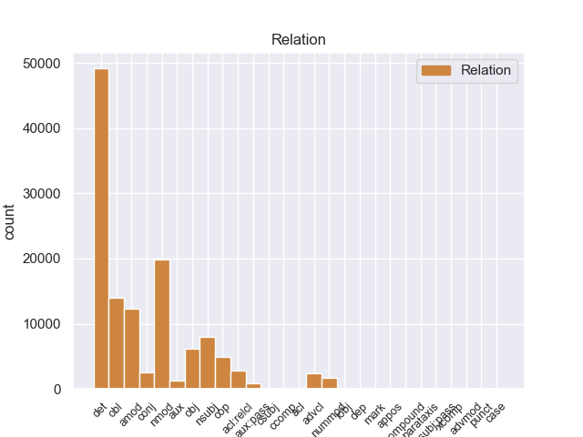
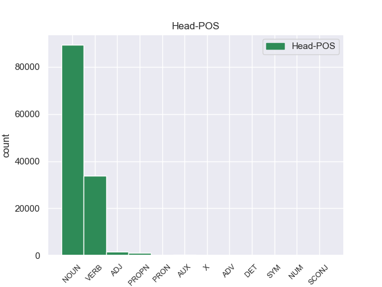
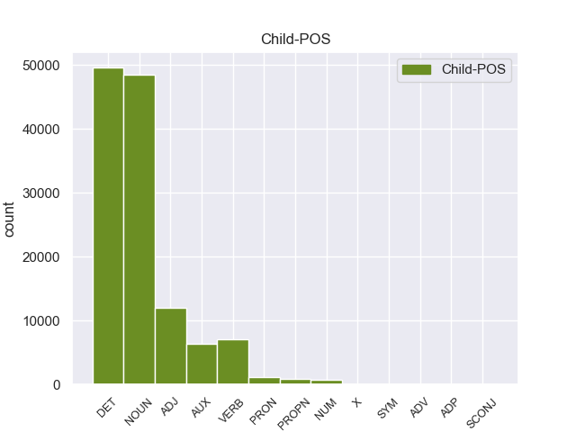

Distribution of features within this leaf



Agreement Rules sorted by frequency.
- When the dependent token is the determiner(det) of the head token, and the dependent token is DET.
1 En _ _ _ _ 0 _ _ _
2 1991 _ _ _ _ 0 _ _ _
3 , _ _ _ _ 0 _ _ _
4 como _ _ _ _ 0 _ _ _
5 ya _ _ _ _ 0 _ _ _
6 está _ _ _ _ 0 _ _ _
7 indicado _ _ _ _ 0 _ _ _
8 en _ _ _ _ 0 _ _ _
9 el _ _ _ _ 0 _ _ _
10 párrafo _ _ _ _ 0 _ _ _
11 anterior _ _ _ _ 0 _ _ _
12 , _ _ _ _ 0 _ _ _
13 se _ _ _ _ 0 _ _ _
14 creó _ _ _ _ 0 _ _ _
15 un _ _ _ _ 0 _ _ _
16 equipo _ _ _ _ 0 _ _ _
17 ad _ _ _ _ 0 _ _ _
18 hoc _ _ _ _ 0 _ _ _
19 para _ _ _ _ 0 _ _ _
20 averiguar _ _ _ _ 0 _ _ _
21 como _ _ _ _ 0 _ _ _
22 se _ _ _ _ 0 _ _ _
23 podía _ _ _ _ 0 _ _ _
24 desarrollar _ _ _ _ 0 _ _ _
25 el _ _ _ _ 0 _ _ _
26 Dialogo _ _ _ _ 0 _ _ _
27 Social _ _ _ _ 0 _ _ _
28 , _ _ _ _ 0 _ _ _
29 este _ _ _ _ 0 _ _ _
30 equipo _ _ _ _ 0 _ _ _
31 estaba _ _ _ _ 0 _ _ _
32 formado _ _ _ _ 0 _ _ _
33 por _ _ _ _ 0 _ _ _
34 representantes _ _ _ _ 0 _ _ _
35 de _ _ _ _ 0 _ _ _
36 todas _ _ _ _ 0 _ _ _
37 las el DET _ Definite=Def|Gender=Fem|Number=Plur|PronType=Art 38 det _ _
38 organizaciones organizacione NOUN _ Gender=Fem|Number=Plur 0 _ _ _
39 relacionadas _ _ _ _ 0 _ _ _
40 con _ _ _ _ 0 _ _ _
41 CES _ _ _ _ 0 _ _ _
42 , _ _ _ _ 0 _ _ _
43 UNICE _ _ _ _ 0 _ _ _
44 y _ _ _ _ 0 _ _ _
45 CEEP _ _ _ _ 0 _ _ _
46 ; _ _ _ _ 0 _ _ _
1 En _ _ _ _ 0 _ _ _
2 1991 _ _ _ _ 0 _ _ _
3 , _ _ _ _ 0 _ _ _
4 como _ _ _ _ 0 _ _ _
5 ya _ _ _ _ 0 _ _ _
6 está _ _ _ _ 0 _ _ _
7 indicado _ _ _ _ 0 _ _ _
8 en _ _ _ _ 0 _ _ _
9 el _ _ _ _ 0 _ _ _
10 párrafo _ _ _ _ 0 _ _ _
11 anterior _ _ _ _ 0 _ _ _
12 , _ _ _ _ 0 _ _ _
13 se _ _ _ _ 0 _ _ _
14 creó _ _ _ _ 0 _ _ _
15 un _ _ _ _ 0 _ _ _
16 equipo _ _ _ _ 0 _ _ _
17 ad _ _ _ _ 0 _ _ _
18 hoc _ _ _ _ 0 _ _ _
19 para _ _ _ _ 0 _ _ _
20 averiguar _ _ _ _ 0 _ _ _
21 como _ _ _ _ 0 _ _ _
22 se _ _ _ _ 0 _ _ _
23 podía _ _ _ _ 0 _ _ _
24 desarrollar _ _ _ _ 0 _ _ _
25 el _ _ _ _ 0 _ _ _
26 Dialogo _ _ _ _ 0 _ _ _
27 Social _ _ _ _ 0 _ _ _
28 , _ _ _ _ 0 _ _ _
29 este _ _ _ _ 0 _ _ _
30 equipo _ _ _ _ 0 _ _ _
31 estaba _ _ _ _ 0 _ _ _
32 formado _ _ _ _ 0 _ _ _
33 por _ _ _ _ 0 _ _ _
34 representantes representante NOUN _ Gender=Masc|Number=Plur 0 _ _ _
35 de _ _ _ _ 0 _ _ _
36 todas _ _ _ _ 0 _ _ _
37 las _ _ _ _ 0 _ _ _
38 organizaciones organizacione NOUN _ Gender=Fem|Number=Plur 34 nmod _ _
39 relacionadas _ _ _ _ 0 _ _ _
40 con _ _ _ _ 0 _ _ _
41 CES _ _ _ _ 0 _ _ _
42 , _ _ _ _ 0 _ _ _
43 UNICE _ _ _ _ 0 _ _ _
44 y _ _ _ _ 0 _ _ _
45 CEEP _ _ _ _ 0 _ _ _
46 ; _ _ _ _ 0 _ _ _
1 En _ _ _ _ 0 _ _ _
2 1991 _ _ _ _ 0 _ _ _
3 , _ _ _ _ 0 _ _ _
4 como _ _ _ _ 0 _ _ _
5 ya _ _ _ _ 0 _ _ _
6 está _ _ _ _ 0 _ _ _
7 indicado indicado VERB _ Gender=Masc|Number=Sing|VerbForm=Part 0 _ _ _
8 en _ _ _ _ 0 _ _ _
9 el _ _ _ _ 0 _ _ _
10 párrafo párrafo NOUN _ Gender=Masc|Number=Sing 7 obl _ _
11 anterior _ _ _ _ 0 _ _ _
12 , _ _ _ _ 0 _ _ _
13 se _ _ _ _ 0 _ _ _
14 creó _ _ _ _ 0 _ _ _
15 un _ _ _ _ 0 _ _ _
16 equipo _ _ _ _ 0 _ _ _
17 ad _ _ _ _ 0 _ _ _
18 hoc _ _ _ _ 0 _ _ _
19 para _ _ _ _ 0 _ _ _
20 averiguar _ _ _ _ 0 _ _ _
21 como _ _ _ _ 0 _ _ _
22 se _ _ _ _ 0 _ _ _
23 podía _ _ _ _ 0 _ _ _
24 desarrollar _ _ _ _ 0 _ _ _
25 el _ _ _ _ 0 _ _ _
26 Dialogo _ _ _ _ 0 _ _ _
27 Social _ _ _ _ 0 _ _ _
28 , _ _ _ _ 0 _ _ _
29 este _ _ _ _ 0 _ _ _
30 equipo _ _ _ _ 0 _ _ _
31 estaba _ _ _ _ 0 _ _ _
32 formado _ _ _ _ 0 _ _ _
33 por _ _ _ _ 0 _ _ _
34 representantes _ _ _ _ 0 _ _ _
35 de _ _ _ _ 0 _ _ _
36 todas _ _ _ _ 0 _ _ _
37 las _ _ _ _ 0 _ _ _
38 organizaciones _ _ _ _ 0 _ _ _
39 relacionadas _ _ _ _ 0 _ _ _
40 con _ _ _ _ 0 _ _ _
41 CES _ _ _ _ 0 _ _ _
42 , _ _ _ _ 0 _ _ _
43 UNICE _ _ _ _ 0 _ _ _
44 y _ _ _ _ 0 _ _ _
45 CEEP _ _ _ _ 0 _ _ _
46 ; _ _ _ _ 0 _ _ _
1 En _ _ _ _ 0 _ _ _
2 1991 _ _ _ _ 0 _ _ _
3 , _ _ _ _ 0 _ _ _
4 como _ _ _ _ 0 _ _ _
5 ya _ _ _ _ 0 _ _ _
6 está _ _ _ _ 0 _ _ _
7 indicado _ _ _ _ 0 _ _ _
8 en _ _ _ _ 0 _ _ _
9 el _ _ _ _ 0 _ _ _
10 párrafo _ _ _ _ 0 _ _ _
11 anterior _ _ _ _ 0 _ _ _
12 , _ _ _ _ 0 _ _ _
13 se _ _ _ _ 0 _ _ _
14 creó _ _ _ _ 0 _ _ _
15 un _ _ _ _ 0 _ _ _
16 equipo equipo NOUN _ Gender=Masc|Number=Sing 0 _ _ _
17 ad _ _ _ _ 0 _ _ _
18 hoc hoc ADJ _ Gender=Masc|Number=Sing 16 amod _ _
19 para _ _ _ _ 0 _ _ _
20 averiguar _ _ _ _ 0 _ _ _
21 como _ _ _ _ 0 _ _ _
22 se _ _ _ _ 0 _ _ _
23 podía _ _ _ _ 0 _ _ _
24 desarrollar _ _ _ _ 0 _ _ _
25 el _ _ _ _ 0 _ _ _
26 Dialogo _ _ _ _ 0 _ _ _
27 Social _ _ _ _ 0 _ _ _
28 , _ _ _ _ 0 _ _ _
29 este _ _ _ _ 0 _ _ _
30 equipo _ _ _ _ 0 _ _ _
31 estaba _ _ _ _ 0 _ _ _
32 formado _ _ _ _ 0 _ _ _
33 por _ _ _ _ 0 _ _ _
34 representantes _ _ _ _ 0 _ _ _
35 de _ _ _ _ 0 _ _ _
36 todas _ _ _ _ 0 _ _ _
37 las _ _ _ _ 0 _ _ _
38 organizaciones _ _ _ _ 0 _ _ _
39 relacionadas _ _ _ _ 0 _ _ _
40 con _ _ _ _ 0 _ _ _
41 CES _ _ _ _ 0 _ _ _
42 , _ _ _ _ 0 _ _ _
43 UNICE _ _ _ _ 0 _ _ _
44 y _ _ _ _ 0 _ _ _
45 CEEP _ _ _ _ 0 _ _ _
46 ; _ _ _ _ 0 _ _ _
1 En _ _ _ _ 0 _ _ _
2 1991 _ _ _ _ 0 _ _ _
3 , _ _ _ _ 0 _ _ _
4 como _ _ _ _ 0 _ _ _
5 ya _ _ _ _ 0 _ _ _
6 está _ _ _ _ 0 _ _ _
7 indicado _ _ _ _ 0 _ _ _
8 en _ _ _ _ 0 _ _ _
9 el _ _ _ _ 0 _ _ _
10 párrafo _ _ _ _ 0 _ _ _
11 anterior _ _ _ _ 0 _ _ _
12 , _ _ _ _ 0 _ _ _
13 se _ _ _ _ 0 _ _ _
14 creó _ _ _ _ 0 _ _ _
15 un _ _ _ _ 0 _ _ _
16 equipo _ _ _ _ 0 _ _ _
17 ad _ _ _ _ 0 _ _ _
18 hoc _ _ _ _ 0 _ _ _
19 para _ _ _ _ 0 _ _ _
20 averiguar _ _ _ _ 0 _ _ _
21 como _ _ _ _ 0 _ _ _
22 se _ _ _ _ 0 _ _ _
23 podía _ _ _ _ 0 _ _ _
24 desarrollar _ _ _ _ 0 _ _ _
25 el _ _ _ _ 0 _ _ _
26 Dialogo _ _ _ _ 0 _ _ _
27 Social _ _ _ _ 0 _ _ _
28 , _ _ _ _ 0 _ _ _
29 este _ _ _ _ 0 _ _ _
30 equipo equipo NOUN _ Gender=Masc|Number=Sing 32 nsubj _ _
31 estaba _ _ _ _ 0 _ _ _
32 formado formado VERB _ Gender=Masc|Number=Sing|VerbForm=Part 0 _ _ _
33 por _ _ _ _ 0 _ _ _
34 representantes _ _ _ _ 0 _ _ _
35 de _ _ _ _ 0 _ _ _
36 todas _ _ _ _ 0 _ _ _
37 las _ _ _ _ 0 _ _ _
38 organizaciones _ _ _ _ 0 _ _ _
39 relacionadas _ _ _ _ 0 _ _ _
40 con _ _ _ _ 0 _ _ _
41 CES _ _ _ _ 0 _ _ _
42 , _ _ _ _ 0 _ _ _
43 UNICE _ _ _ _ 0 _ _ _
44 y _ _ _ _ 0 _ _ _
45 CEEP _ _ _ _ 0 _ _ _
46 ; _ _ _ _ 0 _ _ _
1 Jazmin _ _ _ _ 0 _ _ _
2 es _ _ _ _ 0 _ _ _
3 todo _ _ _ _ 0 _ _ _
4 lo _ _ _ _ 0 _ _ _
5 contrario _ _ _ _ 0 _ _ _
6 , _ _ _ _ 0 _ _ _
7 es ser AUX _ Mood=Ind|Number=Sing|Person=3|Tense=Pres|VerbForm=Fin 8 cop _ _
8 tímida tímida ADJ _ Gender=Fem|Number=Sing 0 _ _ _
9 y _ _ _ _ 0 _ _ _
10 callada _ _ _ _ 0 _ _ _
11 , _ _ _ _ 0 _ _ _
12 pero _ _ _ _ 0 _ _ _
13 siempre _ _ _ _ 0 _ _ _
14 es _ _ _ _ 0 _ _ _
15 arrastrada _ _ _ _ 0 _ _ _
16 por _ _ _ _ 0 _ _ _
17 las _ _ _ _ 0 _ _ _
18 locuras _ _ _ _ 0 _ _ _
19 y _ _ _ _ 0 _ _ _
20 travesuras _ _ _ _ 0 _ _ _
21 que _ _ _ _ 0 _ _ _
22 inventa _ _ _ _ 0 _ _ _
23 Alma _ _ _ _ 0 _ _ _
24 . _ _ _ _ 0 _ _ _
1 Una _ _ _ _ 0 _ _ _
2 vez _ _ _ _ 0 _ _ _
3 que _ _ _ _ 0 _ _ _
4 el _ _ _ _ 0 _ _ _
5 Hijo _ _ _ _ 0 _ _ _
6 de _ _ _ _ 0 _ _ _
7 Krypton _ _ _ _ 0 _ _ _
8 suelta suelta VERB _ Mood=Ind|Number=Sing|Person=3|Tense=Pres|VerbForm=Fin 0 _ _ _
9 el _ _ _ _ 0 _ _ _
10 misil misil NOUN _ Gender=Masc|Number=Sing 8 obj _ _
11 , _ _ _ _ 0 _ _ _
12 este _ _ _ _ 0 _ _ _
13 intenta _ _ _ _ 0 _ _ _
14 huir _ _ _ _ 0 _ _ _
15 de _ _ _ _ 0 _ _ _
16 el _ _ _ _ 0 _ _ _
17 lugar _ _ _ _ 0 _ _ _
18 pero _ _ _ _ 0 _ _ _
19 es _ _ _ _ 0 _ _ _
20 atrapado _ _ _ _ 0 _ _ _
21 en _ _ _ _ 0 _ _ _
22 la _ _ _ _ 0 _ _ _
23 explosión _ _ _ _ 0 _ _ _
24 . _ _ _ _ 0 _ _ _
1 En _ _ _ _ 0 _ _ _
2 1991 _ _ _ _ 0 _ _ _
3 , _ _ _ _ 0 _ _ _
4 como _ _ _ _ 0 _ _ _
5 ya _ _ _ _ 0 _ _ _
6 está _ _ _ _ 0 _ _ _
7 indicado _ _ _ _ 0 _ _ _
8 en _ _ _ _ 0 _ _ _
9 el _ _ _ _ 0 _ _ _
10 párrafo _ _ _ _ 0 _ _ _
11 anterior _ _ _ _ 0 _ _ _
12 , _ _ _ _ 0 _ _ _
13 se _ _ _ _ 0 _ _ _
14 creó _ _ _ _ 0 _ _ _
15 un _ _ _ _ 0 _ _ _
16 equipo equipo NOUN _ Gender=Masc|Number=Sing 0 _ _ _
17 ad _ _ _ _ 0 _ _ _
18 hoc _ _ _ _ 0 _ _ _
19 para _ _ _ _ 0 _ _ _
20 averiguar _ _ _ _ 0 _ _ _
21 como _ _ _ _ 0 _ _ _
22 se _ _ _ _ 0 _ _ _
23 podía _ _ _ _ 0 _ _ _
24 desarrollar _ _ _ _ 0 _ _ _
25 el _ _ _ _ 0 _ _ _
26 Dialogo _ _ _ _ 0 _ _ _
27 Social _ _ _ _ 0 _ _ _
28 , _ _ _ _ 0 _ _ _
29 este _ _ _ _ 0 _ _ _
30 equipo _ _ _ _ 0 _ _ _
31 estaba _ _ _ _ 0 _ _ _
32 formado formado VERB _ Gender=Masc|Number=Sing|VerbForm=Part 16 acl:relcl _ _
33 por _ _ _ _ 0 _ _ _
34 representantes _ _ _ _ 0 _ _ _
35 de _ _ _ _ 0 _ _ _
36 todas _ _ _ _ 0 _ _ _
37 las _ _ _ _ 0 _ _ _
38 organizaciones _ _ _ _ 0 _ _ _
39 relacionadas _ _ _ _ 0 _ _ _
40 con _ _ _ _ 0 _ _ _
41 CES _ _ _ _ 0 _ _ _
42 , _ _ _ _ 0 _ _ _
43 UNICE _ _ _ _ 0 _ _ _
44 y _ _ _ _ 0 _ _ _
45 CEEP _ _ _ _ 0 _ _ _
46 ; _ _ _ _ 0 _ _ _
1 De _ _ _ _ 0 _ _ _
2 los _ _ _ _ 0 _ _ _
3 714 _ _ _ _ 0 _ _ _
4 habitantes _ _ _ _ 0 _ _ _
5 , _ _ _ _ 0 _ _ _
6 el _ _ _ _ 0 _ _ _
7 municipio _ _ _ _ 0 _ _ _
8 de _ _ _ _ 0 _ _ _
9 Daggett _ _ _ _ 0 _ _ _
10 estaba _ _ _ _ 0 _ _ _
11 compuesto _ _ _ _ 0 _ _ _
12 por _ _ _ _ 0 _ _ _
13 el _ _ _ _ 0 _ _ _
14 93.28 _ _ _ _ 0 _ _ _
15 % _ _ _ _ 0 _ _ _
16 blancos _ _ _ _ 0 _ _ _
17 , _ _ _ _ 0 _ _ _
18 el _ _ _ _ 0 _ _ _
19 2.38 _ _ _ _ 0 _ _ _
20 % _ _ _ _ 0 _ _ _
21 eran _ _ _ _ 0 _ _ _
22 afroamericanos _ _ _ _ 0 _ _ _
23 , _ _ _ _ 0 _ _ _
24 el _ _ _ _ 0 _ _ _
25 0.84 _ _ _ _ 0 _ _ _
26 % _ _ _ _ 0 _ _ _
27 eran _ _ _ _ 0 _ _ _
28 amerindios _ _ _ _ 0 _ _ _
29 , _ _ _ _ 0 _ _ _
30 el _ _ _ _ 0 _ _ _
31 0.56 _ _ _ _ 0 _ _ _
32 % _ _ _ _ 0 _ _ _
33 eran _ _ _ _ 0 _ _ _
34 asiáticos _ _ _ _ 0 _ _ _
35 , _ _ _ _ 0 _ _ _
36 el _ _ _ _ 0 _ _ _
37 0 _ _ _ _ 0 _ _ _
38 % _ _ _ _ 0 _ _ _
39 eran _ _ _ _ 0 _ _ _
40 isleños _ _ _ _ 0 _ _ _
41 de _ _ _ _ 0 _ _ _
42 el _ _ _ _ 0 _ _ _
43 Pacífico _ _ _ _ 0 _ _ _
44 , _ _ _ _ 0 _ _ _
45 el _ _ _ _ 0 _ _ _
46 0.84 _ _ _ _ 0 _ _ _
47 % _ _ _ _ 0 _ _ _
48 eran eer VERB _ Mood=Ind|Number=Plur|Person=3|Tense=Imp|VerbForm=Fin 0 _ _ _
49 de _ _ _ _ 0 _ _ _
50 otras _ _ _ _ 0 _ _ _
51 razas _ _ _ _ 0 _ _ _
52 y _ _ _ _ 0 _ _ _
53 el _ _ _ _ 0 _ _ _
54 2.1 _ _ _ _ 0 _ _ _
55 % _ _ _ _ 0 _ _ _
56 pertenecían pertenecer VERB _ Mood=Ind|Number=Plur|Person=3|Tense=Imp|VerbForm=Fin 48 advcl _ _
57 a _ _ _ _ 0 _ _ _
58 dos _ _ _ _ 0 _ _ _
59 o _ _ _ _ 0 _ _ _
60 más _ _ _ _ 0 _ _ _
61 razas _ _ _ _ 0 _ _ _
62 . _ _ _ _ 0 _ _ _
1 Esta _ _ _ _ 0 _ _ _
2 teoría _ _ _ _ 0 _ _ _
3 se _ _ _ _ 0 _ _ _
4 avenía _ _ _ _ 0 _ _ _
5 bien _ _ _ _ 0 _ _ _
6 con _ _ _ _ 0 _ _ _
7 la _ _ _ _ 0 _ _ _
8 creencia _ _ _ _ 0 _ _ _
9 de _ _ _ _ 0 _ _ _
10 el _ _ _ _ 0 _ _ _
11 Romanticismo _ _ _ _ 0 _ _ _
12 en _ _ _ _ 0 _ _ _
13 un _ _ _ _ 0 _ _ _
14 volkgeist _ _ _ _ 0 _ _ _
15 , _ _ _ _ 0 _ _ _
16 " _ _ _ _ 0 _ _ _
17 genio genio NOUN _ Gender=Masc|Number=Sing 0 _ _ _
18 o _ _ _ _ 0 _ _ _
19 espíritu espíritu NOUN _ Gender=Masc|Number=Sing 17 conj _ _
20 de _ _ _ _ 0 _ _ _
21 el _ _ _ _ 0 _ _ _
22 pueblo _ _ _ _ 0 _ _ _
23 " _ _ _ _ 0 _ _ _
24 , _ _ _ _ 0 _ _ _
25 autor _ _ _ _ 0 _ _ _
26 colectivo _ _ _ _ 0 _ _ _
27 y _ _ _ _ 0 _ _ _
28 anónimo _ _ _ _ 0 _ _ _
29 de _ _ _ _ 0 _ _ _
30 una _ _ _ _ 0 _ _ _
31 poesía _ _ _ _ 0 _ _ _
32 nacional _ _ _ _ 0 _ _ _
33 . _ _ _ _ 0 _ _ _
1 En _ _ _ _ 0 _ _ _
2 1991 _ _ _ _ 0 _ _ _
3 , _ _ _ _ 0 _ _ _
4 como _ _ _ _ 0 _ _ _
5 ya _ _ _ _ 0 _ _ _
6 está _ _ _ _ 0 _ _ _
7 indicado _ _ _ _ 0 _ _ _
8 en _ _ _ _ 0 _ _ _
9 el _ _ _ _ 0 _ _ _
10 párrafo _ _ _ _ 0 _ _ _
11 anterior _ _ _ _ 0 _ _ _
12 , _ _ _ _ 0 _ _ _
13 se _ _ _ _ 0 _ _ _
14 creó _ _ _ _ 0 _ _ _
15 un _ _ _ _ 0 _ _ _
16 equipo _ _ _ _ 0 _ _ _
17 ad _ _ _ _ 0 _ _ _
18 hoc _ _ _ _ 0 _ _ _
19 para _ _ _ _ 0 _ _ _
20 averiguar _ _ _ _ 0 _ _ _
21 como _ _ _ _ 0 _ _ _
22 se _ _ _ _ 0 _ _ _
23 podía _ _ _ _ 0 _ _ _
24 desarrollar _ _ _ _ 0 _ _ _
25 el _ _ _ _ 0 _ _ _
26 Dialogo _ _ _ _ 0 _ _ _
27 Social _ _ _ _ 0 _ _ _
28 , _ _ _ _ 0 _ _ _
29 este _ _ _ _ 0 _ _ _
30 equipo _ _ _ _ 0 _ _ _
31 estaba ester AUX _ Mood=Ind|Number=Sing|Person=3|Tense=Imp|VerbForm=Fin 32 aux _ _
32 formado formado VERB _ Gender=Masc|Number=Sing|VerbForm=Part 0 _ _ _
33 por _ _ _ _ 0 _ _ _
34 representantes _ _ _ _ 0 _ _ _
35 de _ _ _ _ 0 _ _ _
36 todas _ _ _ _ 0 _ _ _
37 las _ _ _ _ 0 _ _ _
38 organizaciones _ _ _ _ 0 _ _ _
39 relacionadas _ _ _ _ 0 _ _ _
40 con _ _ _ _ 0 _ _ _
41 CES _ _ _ _ 0 _ _ _
42 , _ _ _ _ 0 _ _ _
43 UNICE _ _ _ _ 0 _ _ _
44 y _ _ _ _ 0 _ _ _
45 CEEP _ _ _ _ 0 _ _ _
46 ; _ _ _ _ 0 _ _ _
1 Una _ _ _ _ 0 _ _ _
2 vez _ _ _ _ 0 _ _ _
3 que _ _ _ _ 0 _ _ _
4 el _ _ _ _ 0 _ _ _
5 Hijo _ _ _ _ 0 _ _ _
6 de _ _ _ _ 0 _ _ _
7 Krypton _ _ _ _ 0 _ _ _
8 suelta suelta VERB _ Mood=Ind|Number=Sing|Person=3|Tense=Pres|VerbForm=Fin 0 _ _ _
9 el _ _ _ _ 0 _ _ _
10 misil _ _ _ _ 0 _ _ _
11 , _ _ _ _ 0 _ _ _
12 este _ _ _ _ 0 _ _ _
13 intenta intentar VERB _ Mood=Ind|Number=Sing|Person=3|Tense=Pres|VerbForm=Fin 8 conj _ _
14 huir _ _ _ _ 0 _ _ _
15 de _ _ _ _ 0 _ _ _
16 el _ _ _ _ 0 _ _ _
17 lugar _ _ _ _ 0 _ _ _
18 pero _ _ _ _ 0 _ _ _
19 es _ _ _ _ 0 _ _ _
20 atrapado _ _ _ _ 0 _ _ _
21 en _ _ _ _ 0 _ _ _
22 la _ _ _ _ 0 _ _ _
23 explosión _ _ _ _ 0 _ _ _
24 . _ _ _ _ 0 _ _ _
1 De _ _ _ _ 0 _ _ _
2 los _ _ _ _ 0 _ _ _
3 714 _ _ _ _ 0 _ _ _
4 habitantes _ _ _ _ 0 _ _ _
5 , _ _ _ _ 0 _ _ _
6 el _ _ _ _ 0 _ _ _
7 municipio _ _ _ _ 0 _ _ _
8 de _ _ _ _ 0 _ _ _
9 Daggett _ _ _ _ 0 _ _ _
10 estaba stabar AUX _ Mood=Ind|Number=Sing|Person=3|Tense=Imp|VerbForm=Fin 11 aux:pass _ _
11 compuesto compuesto VERB _ Gender=Masc|Number=Sing|VerbForm=Part 0 _ _ _
12 por _ _ _ _ 0 _ _ _
13 el _ _ _ _ 0 _ _ _
14 93.28 _ _ _ _ 0 _ _ _
15 % _ _ _ _ 0 _ _ _
16 blancos _ _ _ _ 0 _ _ _
17 , _ _ _ _ 0 _ _ _
18 el _ _ _ _ 0 _ _ _
19 2.38 _ _ _ _ 0 _ _ _
20 % _ _ _ _ 0 _ _ _
21 eran _ _ _ _ 0 _ _ _
22 afroamericanos _ _ _ _ 0 _ _ _
23 , _ _ _ _ 0 _ _ _
24 el _ _ _ _ 0 _ _ _
25 0.84 _ _ _ _ 0 _ _ _
26 % _ _ _ _ 0 _ _ _
27 eran _ _ _ _ 0 _ _ _
28 amerindios _ _ _ _ 0 _ _ _
29 , _ _ _ _ 0 _ _ _
30 el _ _ _ _ 0 _ _ _
31 0.56 _ _ _ _ 0 _ _ _
32 % _ _ _ _ 0 _ _ _
33 eran _ _ _ _ 0 _ _ _
34 asiáticos _ _ _ _ 0 _ _ _
35 , _ _ _ _ 0 _ _ _
36 el _ _ _ _ 0 _ _ _
37 0 _ _ _ _ 0 _ _ _
38 % _ _ _ _ 0 _ _ _
39 eran _ _ _ _ 0 _ _ _
40 isleños _ _ _ _ 0 _ _ _
41 de _ _ _ _ 0 _ _ _
42 el _ _ _ _ 0 _ _ _
43 Pacífico _ _ _ _ 0 _ _ _
44 , _ _ _ _ 0 _ _ _
45 el _ _ _ _ 0 _ _ _
46 0.84 _ _ _ _ 0 _ _ _
47 % _ _ _ _ 0 _ _ _
48 eran _ _ _ _ 0 _ _ _
49 de _ _ _ _ 0 _ _ _
50 otras _ _ _ _ 0 _ _ _
51 razas _ _ _ _ 0 _ _ _
52 y _ _ _ _ 0 _ _ _
53 el _ _ _ _ 0 _ _ _
54 2.1 _ _ _ _ 0 _ _ _
55 % _ _ _ _ 0 _ _ _
56 pertenecían _ _ _ _ 0 _ _ _
57 a _ _ _ _ 0 _ _ _
58 dos _ _ _ _ 0 _ _ _
59 o _ _ _ _ 0 _ _ _
60 más _ _ _ _ 0 _ _ _
61 razas _ _ _ _ 0 _ _ _
62 . _ _ _ _ 0 _ _ _
1 Joramun _ _ _ _ 0 _ _ _
2 se _ _ _ _ 0 _ _ _
3 supone _ _ _ _ 0 _ _ _
4 que _ _ _ _ 0 _ _ _
5 era _ _ _ _ 0 _ _ _
6 un _ _ _ _ 0 _ _ _
7 legendario legendario NOUN _ Gender=Masc|Number=Sing 8 amod _ _
8 Rey rey NOUN _ Gender=Masc|Number=Sing 0 _ _ _
9 - _ _ _ _ 0 _ _ _
10 Más _ _ _ _ 0 _ _ _
11 - _ _ _ _ 0 _ _ _
12 Allá _ _ _ _ 0 _ _ _
13 - _ _ _ _ 0 _ _ _
14 de _ _ _ _ 0 _ _ _
15 el _ _ _ _ 0 _ _ _
16 - _ _ _ _ 0 _ _ _
17 Muro _ _ _ _ 0 _ _ _
18 , _ _ _ _ 0 _ _ _
19 a _ _ _ _ 0 _ _ _
20 el _ _ _ _ 0 _ _ _
21 norte _ _ _ _ 0 _ _ _
22 de _ _ _ _ 0 _ _ _
23 los _ _ _ _ 0 _ _ _
24 Siete _ _ _ _ 0 _ _ _
25 Reinos _ _ _ _ 0 _ _ _
26 . _ _ _ _ 0 _ _ _
1 De _ _ _ _ 0 _ _ _
2 los _ _ _ _ 0 _ _ _
3 714 _ _ _ _ 0 _ _ _
4 habitantes _ _ _ _ 0 _ _ _
5 , _ _ _ _ 0 _ _ _
6 el _ _ _ _ 0 _ _ _
7 municipio _ _ _ _ 0 _ _ _
8 de _ _ _ _ 0 _ _ _
9 Daggett _ _ _ _ 0 _ _ _
10 estaba _ _ _ _ 0 _ _ _
11 compuesto _ _ _ _ 0 _ _ _
12 por _ _ _ _ 0 _ _ _
13 el _ _ _ _ 0 _ _ _
14 93.28 _ _ _ _ 0 _ _ _
15 % _ _ _ _ 0 _ _ _
16 blancos _ _ _ _ 0 _ _ _
17 , _ _ _ _ 0 _ _ _
18 el _ _ _ _ 0 _ _ _
19 2.38 _ _ _ _ 0 _ _ _
20 % _ _ _ _ 0 _ _ _
21 eran _ _ _ _ 0 _ _ _
22 afroamericanos _ _ _ _ 0 _ _ _
23 , _ _ _ _ 0 _ _ _
24 el _ _ _ _ 0 _ _ _
25 0.84 _ _ _ _ 0 _ _ _
26 % _ _ _ _ 0 _ _ _
27 eran _ _ _ _ 0 _ _ _
28 amerindios _ _ _ _ 0 _ _ _
29 , _ _ _ _ 0 _ _ _
30 el _ _ _ _ 0 _ _ _
31 0.56 _ _ _ _ 0 _ _ _
32 % _ _ _ _ 0 _ _ _
33 eran _ _ _ _ 0 _ _ _
34 asiáticos _ _ _ _ 0 _ _ _
35 , _ _ _ _ 0 _ _ _
36 el _ _ _ _ 0 _ _ _
37 0 _ _ _ _ 0 _ _ _
38 % _ _ _ _ 0 _ _ _
39 eran _ _ _ _ 0 _ _ _
40 isleños _ _ _ _ 0 _ _ _
41 de _ _ _ _ 0 _ _ _
42 el _ _ _ _ 0 _ _ _
43 Pacífico _ _ _ _ 0 _ _ _
44 , _ _ _ _ 0 _ _ _
45 el _ _ _ _ 0 _ _ _
46 0.84 _ _ _ _ 0 _ _ _
47 % _ _ _ _ 0 _ _ _
48 eran _ _ _ _ 0 _ _ _
49 de _ _ _ _ 0 _ _ _
50 otras _ _ _ _ 0 _ _ _
51 razas _ _ _ _ 0 _ _ _
52 y _ _ _ _ 0 _ _ _
53 el _ _ _ _ 0 _ _ _
54 2.1 _ _ _ _ 0 _ _ _
55 % _ _ _ _ 0 _ _ _
56 pertenecían _ _ _ _ 0 _ _ _
57 a _ _ _ _ 0 _ _ _
58 dos dos NUM _ Number=Plur|NumType=Card 61 nummod _ _
59 o _ _ _ _ 0 _ _ _
60 más _ _ _ _ 0 _ _ _
61 razas raza NOUN _ Gender=Fem|Number=Plur 0 _ _ _
62 . _ _ _ _ 0 _ _ _
1 Ahora _ _ _ _ 0 _ _ _
2 se _ _ _ _ 0 _ _ _
3 aunan _ _ _ _ 0 _ _ _
4 cocina _ _ _ _ 0 _ _ _
5 y _ _ _ _ 0 _ _ _
6 entorno _ _ _ _ 0 _ _ _
7 , _ _ _ _ 0 _ _ _
8 me _ _ _ _ 0 _ _ _
9 encanto _ _ _ _ 0 _ _ _
10 la _ _ _ _ 0 _ _ _
11 bodega _ _ _ _ 0 _ _ _
12 , _ _ _ _ 0 _ _ _
13 las _ _ _ _ 0 _ _ _
14 sillas _ _ _ _ 0 _ _ _
15 son _ _ _ _ 0 _ _ _
16 comodisimas _ _ _ _ 0 _ _ _
17 , _ _ _ _ 0 _ _ _
18 la _ _ _ _ 0 _ _ _
19 iluminacion _ _ _ _ 0 _ _ _
20 es _ _ _ _ 0 _ _ _
21 excepcional _ _ _ _ 0 _ _ _
22 , _ _ _ _ 0 _ _ _
23 alcanzas _ _ _ _ 0 _ _ _
24 un _ _ _ _ 0 _ _ _
25 grado _ _ _ _ 0 _ _ _
26 de _ _ _ _ 0 _ _ _
27 satisfaccion _ _ _ _ 0 _ _ _
28 que _ _ _ _ 0 _ _ _
29 no _ _ _ _ 0 _ _ _
30 se _ _ _ _ 0 _ _ _
31 puede _ _ _ _ 0 _ _ _
32 describir _ _ _ _ 0 _ _ _
33 , _ _ _ _ 0 _ _ _
34 hay _ _ _ _ 0 _ _ _
35 que _ _ _ _ 0 _ _ _
36 probar _ _ _ _ 0 _ _ _
37 lo _ _ _ _ 0 _ _ _
38 , _ _ _ _ 0 _ _ _
39 es _ _ _ _ 0 _ _ _
40 la _ _ _ _ 0 _ _ _
41 primera primero ADJ _ Gender=Fem|Number=Sing 42 nummod _ _
42 vez vez NOUN _ Gender=Fem|Number=Sing 0 _ _ _
43 en _ _ _ _ 0 _ _ _
44 mi _ _ _ _ 0 _ _ _
45 vda _ _ _ _ 0 _ _ _
46 que _ _ _ _ 0 _ _ _
47 una _ _ _ _ 0 _ _ _
48 cocina _ _ _ _ 0 _ _ _
49 me _ _ _ _ 0 _ _ _
50 emociona _ _ _ _ 0 _ _ _
51 hasta _ _ _ _ 0 _ _ _
52 ese _ _ _ _ 0 _ _ _
53 punto _ _ _ _ 0 _ _ _
54 . _ _ _ _ 0 _ _ _
1 De _ _ _ _ 0 _ _ _
2 la _ _ _ _ 0 _ _ _
3 Vega _ _ _ _ 0 _ _ _
4 ha _ _ _ _ 0 _ _ _
5 pedido _ _ _ _ 0 _ _ _
6 respetar _ _ _ _ 0 _ _ _
7 los _ _ _ _ 0 _ _ _
8 tiempos _ _ _ _ 0 _ _ _
9 de _ _ _ _ 0 _ _ _
10 los _ _ _ _ 0 _ _ _
11 procesos _ _ _ _ 0 _ _ _
12 y _ _ _ _ 0 _ _ _
13 de _ _ _ _ 0 _ _ _
14 la _ _ _ _ 0 _ _ _
15 misma _ _ _ _ 0 _ _ _
16 manera _ _ _ _ 0 _ _ _
17 que _ _ _ _ 0 _ _ _
18 no _ _ _ _ 0 _ _ _
19 ha _ _ _ _ 0 _ _ _
20 querido _ _ _ _ 0 _ _ _
21 entrar _ _ _ _ 0 _ _ _
22 en _ _ _ _ 0 _ _ _
23 la _ _ _ _ 0 _ _ _
24 salida _ _ _ _ 0 _ _ _
25 de _ _ _ _ 0 _ _ _
26 Corbacho _ _ _ _ 0 _ _ _
27 , _ _ _ _ 0 _ _ _
28 tampoco _ _ _ _ 0 _ _ _
29 lo él PRON _ Case=Acc|Gender=Masc|Number=Sing|Person=3|PrepCase=Npr|PronType=Prs 31 obj _ _
30 ha _ _ _ _ 0 _ _ _
31 hecho hecho VERB _ Gender=Masc|Number=Sing|Tense=Past|VerbForm=Part 0 _ _ _
32 la _ _ _ _ 0 _ _ _
33 posible _ _ _ _ 0 _ _ _
34 salida _ _ _ _ 0 _ _ _
35 de _ _ _ _ 0 _ _ _
36 Trinidad _ _ _ _ 0 _ _ _
37 Jiménez _ _ _ _ 0 _ _ _
38 , _ _ _ _ 0 _ _ _
39 que _ _ _ _ 0 _ _ _
40 le _ _ _ _ 0 _ _ _
41 acompañaba _ _ _ _ 0 _ _ _
42 en _ _ _ _ 0 _ _ _
43 la _ _ _ _ 0 _ _ _
44 sala _ _ _ _ 0 _ _ _
45 de _ _ _ _ 0 _ _ _
46 prensa _ _ _ _ 0 _ _ _
47 . _ _ _ _ 0 _ _ _
1 Esta _ _ _ _ 0 _ _ _
2 teoría _ _ _ _ 0 _ _ _
3 se _ _ _ _ 0 _ _ _
4 avenía _ _ _ _ 0 _ _ _
5 bien _ _ _ _ 0 _ _ _
6 con _ _ _ _ 0 _ _ _
7 la _ _ _ _ 0 _ _ _
8 creencia creencia NOUN _ Gender=Fem|Number=Sing 0 _ _ _
9 de _ _ _ _ 0 _ _ _
10 el _ _ _ _ 0 _ _ _
11 Romanticismo romanticismo PROPN _ Gender=Masc|Number=Sing 8 nmod _ _
12 en _ _ _ _ 0 _ _ _
13 un _ _ _ _ 0 _ _ _
14 volkgeist _ _ _ _ 0 _ _ _
15 , _ _ _ _ 0 _ _ _
16 " _ _ _ _ 0 _ _ _
17 genio _ _ _ _ 0 _ _ _
18 o _ _ _ _ 0 _ _ _
19 espíritu _ _ _ _ 0 _ _ _
20 de _ _ _ _ 0 _ _ _
21 el _ _ _ _ 0 _ _ _
22 pueblo _ _ _ _ 0 _ _ _
23 " _ _ _ _ 0 _ _ _
24 , _ _ _ _ 0 _ _ _
25 autor _ _ _ _ 0 _ _ _
26 colectivo _ _ _ _ 0 _ _ _
27 y _ _ _ _ 0 _ _ _
28 anónimo _ _ _ _ 0 _ _ _
29 de _ _ _ _ 0 _ _ _
30 una _ _ _ _ 0 _ _ _
31 poesía _ _ _ _ 0 _ _ _
32 nacional _ _ _ _ 0 _ _ _
33 . _ _ _ _ 0 _ _ _
1 " _ _ _ _ 0 _ _ _
2 Tenemos _ _ _ _ 0 _ _ _
3 todo _ _ _ _ 0 _ _ _
4 listo _ _ _ _ 0 _ _ _
5 , _ _ _ _ 0 _ _ _
6 la _ _ _ _ 0 _ _ _
7 venta venta NOUN _ Gender=Fem|Number=Sing 0 _ _ _
8 de _ _ _ _ 0 _ _ _
9 boletos _ _ _ _ 0 _ _ _
10 será srár VERB _ Mood=Ind|Number=Sing|Person=3|Tense=Pres|VerbForm=Fin 7 cop _ _
11 a _ _ _ _ 0 _ _ _
12 partir _ _ _ _ 0 _ _ _
13 de _ _ _ _ 0 _ _ _
14 mañana _ _ _ _ 0 _ _ _
15 de _ _ _ _ 0 _ _ _
16 8 _ _ _ _ 0 _ _ _
17 am _ _ _ _ 0 _ _ _
18 a _ _ _ _ 0 _ _ _
19 3 _ _ _ _ 0 _ _ _
20 pm _ _ _ _ 0 _ _ _
21 , _ _ _ _ 0 _ _ _
22 la _ _ _ _ 0 _ _ _
23 afición _ _ _ _ 0 _ _ _
24 de _ _ _ _ 0 _ _ _
25 el _ _ _ _ 0 _ _ _
26 Real _ _ _ _ 0 _ _ _
27 España _ _ _ _ 0 _ _ _
28 podrá _ _ _ _ 0 _ _ _
29 comprar _ _ _ _ 0 _ _ _
30 en _ _ _ _ 0 _ _ _
31 el _ _ _ _ 0 _ _ _
32 Banco _ _ _ _ 0 _ _ _
33 Continental _ _ _ _ 0 _ _ _
34 , _ _ _ _ 0 _ _ _
35 frente _ _ _ _ 0 _ _ _
36 a _ _ _ _ 0 _ _ _
37 el _ _ _ _ 0 _ _ _
38 estadio _ _ _ _ 0 _ _ _
39 Morazán _ _ _ _ 0 _ _ _
40 , _ _ _ _ 0 _ _ _
41 se _ _ _ _ 0 _ _ _
42 han _ _ _ _ 0 _ _ _
43 puesto _ _ _ _ 0 _ _ _
44 a _ _ _ _ 0 _ _ _
45 la _ _ _ _ 0 _ _ _
46 venta _ _ _ _ 0 _ _ _
47 800 _ _ _ _ 0 _ _ _
48 boletos _ _ _ _ 0 _ _ _
49 , _ _ _ _ 0 _ _ _
50 500 _ _ _ _ 0 _ _ _
51 en _ _ _ _ 0 _ _ _
52 sol _ _ _ _ 0 _ _ _
53 y _ _ _ _ 0 _ _ _
54 300 _ _ _ _ 0 _ _ _
55 en _ _ _ _ 0 _ _ _
56 preferencia _ _ _ _ 0 _ _ _
57 , _ _ _ _ 0 _ _ _
58 la _ _ _ _ 0 _ _ _
59 boletería _ _ _ _ 0 _ _ _
60 de _ _ _ _ 0 _ _ _
61 el _ _ _ _ 0 _ _ _
62 España _ _ _ _ 0 _ _ _
63 está _ _ _ _ 0 _ _ _
64 ya _ _ _ _ 0 _ _ _
65 identificada _ _ _ _ 0 _ _ _
66 con _ _ _ _ 0 _ _ _
67 el _ _ _ _ 0 _ _ _
68 escudo _ _ _ _ 0 _ _ _
69 de _ _ _ _ 0 _ _ _
70 el _ _ _ _ 0 _ _ _
71 equipo _ _ _ _ 0 _ _ _
72 y _ _ _ _ 0 _ _ _
73 con _ _ _ _ 0 _ _ _
74 el _ _ _ _ 0 _ _ _
75 color _ _ _ _ 0 _ _ _
76 amarillo _ _ _ _ 0 _ _ _
77 " _ _ _ _ 0 _ _ _
78 , _ _ _ _ 0 _ _ _
79 comentó _ _ _ _ 0 _ _ _
80 Rolin _ _ _ _ 0 _ _ _
81 . _ _ _ _ 0 _ _ _
1 La _ _ _ _ 0 _ _ _
2 telenovela _ _ _ _ 0 _ _ _
3 gira _ _ _ _ 0 _ _ _
4 en _ _ _ _ 0 _ _ _
5 torno _ _ _ _ 0 _ _ _
6 a _ _ _ _ 0 _ _ _
7 los _ _ _ _ 0 _ _ _
8 dramas _ _ _ _ 0 _ _ _
9 familiares _ _ _ _ 0 _ _ _
10 y _ _ _ _ 0 _ _ _
11 poderes _ _ _ _ 0 _ _ _
12 empresariales _ _ _ _ 0 _ _ _
13 de _ _ _ _ 0 _ _ _
14 dos dos DET _ Number=Plur|NumType=Card 15 nummod _ _
15 familias familia NOUN _ Gender=Fem|Number=Plur 0 _ _ _
16 rivales _ _ _ _ 0 _ _ _
17 . _ _ _ _ 0 _ _ _
1 El _ _ _ _ 0 _ _ _
2 Levante levante PROPN _ Gender=Masc|Number=Sing 5 nsubj _ _
3 U. _ _ _ _ 0 _ _ _
4 D. _ _ _ _ 0 _ _ _
5 jugaba jugabar VERB _ Mood=Ind|Number=Sing|Person=3|Tense=Past|VerbForm=Fin 0 _ _ _
6 sus _ _ _ _ 0 _ _ _
7 partidos _ _ _ _ 0 _ _ _
8 anteriormente _ _ _ _ 0 _ _ _
9 en _ _ _ _ 0 _ _ _
10 el _ _ _ _ 0 _ _ _
11 campo _ _ _ _ 0 _ _ _
12 de _ _ _ _ 0 _ _ _
13 Vallejo _ _ _ _ 0 _ _ _
14 . _ _ _ _ 0 _ _ _
1 Jazmin _ _ _ _ 0 _ _ _
2 es _ _ _ _ 0 _ _ _
3 todo _ _ _ _ 0 _ _ _
4 lo lo PRON _ Case=Acc|Gender=Masc|Number=Sing|Person=3|PrepCase=Npr|PronType=Prs 5 det _ _
5 contrario contrario ADJ _ Gender=Masc|Number=Sing 0 _ _ _
6 , _ _ _ _ 0 _ _ _
7 es _ _ _ _ 0 _ _ _
8 tímida _ _ _ _ 0 _ _ _
9 y _ _ _ _ 0 _ _ _
10 callada _ _ _ _ 0 _ _ _
11 , _ _ _ _ 0 _ _ _
12 pero _ _ _ _ 0 _ _ _
13 siempre _ _ _ _ 0 _ _ _
14 es _ _ _ _ 0 _ _ _
15 arrastrada _ _ _ _ 0 _ _ _
16 por _ _ _ _ 0 _ _ _
17 las _ _ _ _ 0 _ _ _
18 locuras _ _ _ _ 0 _ _ _
19 y _ _ _ _ 0 _ _ _
20 travesuras _ _ _ _ 0 _ _ _
21 que _ _ _ _ 0 _ _ _
22 inventa _ _ _ _ 0 _ _ _
23 Alma _ _ _ _ 0 _ _ _
24 . _ _ _ _ 0 _ _ _
1 Ese _ _ _ _ 0 _ _ _
2 mismo mismo DET _ Gender=Masc|Number=Sing 3 amod _ _
3 año año NOUN _ Gender=Masc|Number=Sing 0 _ _ _
4 participó _ _ _ _ 0 _ _ _
5 con _ _ _ _ 0 _ _ _
6 el _ _ _ _ 0 _ _ _
7 equipo _ _ _ _ 0 _ _ _
8 ruso _ _ _ _ 0 _ _ _
9 en _ _ _ _ 0 _ _ _
10 la _ _ _ _ 0 _ _ _
11 Olimpiada _ _ _ _ 0 _ _ _
12 de _ _ _ _ 0 _ _ _
13 Ajedrez _ _ _ _ 0 _ _ _
14 de _ _ _ _ 0 _ _ _
15 Estambul _ _ _ _ 0 _ _ _
16 y _ _ _ _ 0 _ _ _
17 obtuvo _ _ _ _ 0 _ _ _
18 la _ _ _ _ 0 _ _ _
19 medalla _ _ _ _ 0 _ _ _
20 de _ _ _ _ 0 _ _ _
21 bronce _ _ _ _ 0 _ _ _
22 en _ _ _ _ 0 _ _ _
23 tanto _ _ _ _ 0 _ _ _
24 que _ _ _ _ 0 _ _ _
25 mejor _ _ _ _ 0 _ _ _
26 segunda _ _ _ _ 0 _ _ _
27 jugador _ _ _ _ 0 _ _ _
28 reservista _ _ _ _ 0 _ _ _
29 de _ _ _ _ 0 _ _ _
30 el _ _ _ _ 0 _ _ _
31 torneo _ _ _ _ 0 _ _ _
32 ( _ _ _ _ 0 _ _ _
33 los _ _ _ _ 0 _ _ _
34 equipos _ _ _ _ 0 _ _ _
35 estaban _ _ _ _ 0 _ _ _
36 formados _ _ _ _ 0 _ _ _
37 por _ _ _ _ 0 _ _ _
38 cuatro _ _ _ _ 0 _ _ _
39 jugadores _ _ _ _ 0 _ _ _
40 titulares _ _ _ _ 0 _ _ _
41 y _ _ _ _ 0 _ _ _
42 dos _ _ _ _ 0 _ _ _
43 reservas _ _ _ _ 0 _ _ _
44 ) _ _ _ _ 0 _ _ _
45 . _ _ _ _ 0 _ _ _
1 Hace haceber VERB _ Mood=Ind|Number=Sing|Person=3|Tense=Pres|VerbForm=Fin 6 aux _ _
2 93 _ _ _ _ 0 _ _ _
3 años _ _ _ _ 0 _ _ _
4 que _ _ _ _ 0 _ _ _
5 se _ _ _ _ 0 _ _ _
6 apareció apareciar VERB _ Mood=Ind|Number=Sing|Person=3|Tense=Past|VerbForm=Fin 0 _ _ _
7 la _ _ _ _ 0 _ _ _
8 virgen _ _ _ _ 0 _ _ _
9 a _ _ _ _ 0 _ _ _
10 los _ _ _ _ 0 _ _ _
11 pastorcillos _ _ _ _ 0 _ _ _
12 de _ _ _ _ 0 _ _ _
13 Fátima _ _ _ _ 0 _ _ _
14 . _ _ _ _ 0 _ _ _
1 La _ _ _ _ 0 _ _ _
2 primera primera NOUN _ Gender=Fem|Number=Sing 3 nummod _ _
3 vez vez NOUN _ Gender=Fem|Number=Sing 0 _ _ _
4 , _ _ _ _ 0 _ _ _
5 tenía _ _ _ _ 0 _ _ _
6 un _ _ _ _ 0 _ _ _
7 presupuesto _ _ _ _ 0 _ _ _
8 de _ _ _ _ 0 _ _ _
9 700 _ _ _ _ 0 _ _ _
10 € _ _ _ _ 0 _ _ _
11 en _ _ _ _ 0 _ _ _
12 el _ _ _ _ 0 _ _ _
13 servicio _ _ _ _ 0 _ _ _
14 oficial _ _ _ _ 0 _ _ _
15 ( _ _ _ _ 0 _ _ _
16 te _ _ _ _ 0 _ _ _
17 lo _ _ _ _ 0 _ _ _
18 cambio _ _ _ _ 0 _ _ _
19 todo _ _ _ _ 0 _ _ _
20 y _ _ _ _ 0 _ _ _
21 soluciono _ _ _ _ 0 _ _ _
22 el _ _ _ _ 0 _ _ _
23 problema _ _ _ _ 0 _ _ _
24 ) _ _ _ _ 0 _ _ _
25 , _ _ _ _ 0 _ _ _
26 y _ _ _ _ 0 _ _ _
27 en _ _ _ _ 0 _ _ _
28 Pinauto _ _ _ _ 0 _ _ _
29 me _ _ _ _ 0 _ _ _
30 lo _ _ _ _ 0 _ _ _
31 solucionaron _ _ _ _ 0 _ _ _
32 por _ _ _ _ 0 _ _ _
33 unos _ _ _ _ 0 _ _ _
34 200 _ _ _ _ 0 _ _ _
35 € _ _ _ _ 0 _ _ _
36 , _ _ _ _ 0 _ _ _
37 cambiando _ _ _ _ 0 _ _ _
38 sólo _ _ _ _ 0 _ _ _
39 lo _ _ _ _ 0 _ _ _
40 necesario _ _ _ _ 0 _ _ _
41 . _ _ _ _ 0 _ _ _
1 Jazmin _ _ _ _ 0 _ _ _
2 es _ _ _ _ 0 _ _ _
3 todo _ _ _ _ 0 _ _ _
4 lo _ _ _ _ 0 _ _ _
5 contrario _ _ _ _ 0 _ _ _
6 , _ _ _ _ 0 _ _ _
7 es _ _ _ _ 0 _ _ _
8 tímida tímida ADJ _ Gender=Fem|Number=Sing 0 _ _ _
9 y _ _ _ _ 0 _ _ _
10 callada callada ADJ _ Gender=Fem|Number=Sing 8 conj _ _
11 , _ _ _ _ 0 _ _ _
12 pero _ _ _ _ 0 _ _ _
13 siempre _ _ _ _ 0 _ _ _
14 es _ _ _ _ 0 _ _ _
15 arrastrada _ _ _ _ 0 _ _ _
16 por _ _ _ _ 0 _ _ _
17 las _ _ _ _ 0 _ _ _
18 locuras _ _ _ _ 0 _ _ _
19 y _ _ _ _ 0 _ _ _
20 travesuras _ _ _ _ 0 _ _ _
21 que _ _ _ _ 0 _ _ _
22 inventa _ _ _ _ 0 _ _ _
23 Alma _ _ _ _ 0 _ _ _
24 . _ _ _ _ 0 _ _ _
1 A _ _ _ _ 0 _ _ _
2 continuación _ _ _ _ 0 _ _ _
3 , _ _ _ _ 0 _ _ _
4 sonarán _ _ _ _ 0 _ _ _
5 los _ _ _ _ 0 _ _ _
6 ritmos _ _ _ _ 0 _ _ _
7 más _ _ _ _ 0 _ _ _
8 intensos _ _ _ _ 0 _ _ _
9 de _ _ _ _ 0 _ _ _
10 los _ _ _ _ 0 _ _ _
11 llanos _ _ _ _ 0 _ _ _
12 interpretados _ _ _ _ 0 _ _ _
13 por _ _ _ _ 0 _ _ _
14 una _ _ _ _ 0 _ _ _
15 agrupación _ _ _ _ 0 _ _ _
16 que _ _ _ _ 0 _ _ _
17 romperá _ _ _ _ 0 _ _ _
18 esquemas _ _ _ _ 0 _ _ _
19 : _ _ _ _ 0 _ _ _
20 el _ _ _ _ 0 _ _ _
21 Ensamble _ _ _ _ 0 _ _ _
22 de _ _ _ _ 0 _ _ _
23 Arpas _ _ _ _ 0 _ _ _
24 de _ _ _ _ 0 _ _ _
25 la _ _ _ _ 0 _ _ _
26 Orquesta _ _ _ _ 0 _ _ _
27 de _ _ _ _ 0 _ _ _
28 Música _ _ _ _ 0 _ _ _
29 Popular _ _ _ _ 0 _ _ _
30 de _ _ _ _ 0 _ _ _
31 el _ _ _ _ 0 _ _ _
32 Estado _ _ _ _ 0 _ _ _
33 Guárico _ _ _ _ 0 _ _ _
34 , _ _ _ _ 0 _ _ _
35 integrado _ _ _ _ 0 _ _ _
36 por _ _ _ _ 0 _ _ _
37 14 _ _ _ _ 0 _ _ _
38 ejecutantes _ _ _ _ 0 _ _ _
39 , _ _ _ _ 0 _ _ _
40 todos _ _ _ _ 0 _ _ _
41 formados formados VERB _ Gender=Fem|Number=Sing|VerbForm=Part 0 _ _ _
42 por _ _ _ _ 0 _ _ _
43 El _ _ _ _ 0 _ _ _
44 Sistema sistema PROPN _ Gender=Masc|Number=Sing 41 obl _ _
45 , _ _ _ _ 0 _ _ _
46 siendo _ _ _ _ 0 _ _ _
47 algunos _ _ _ _ 0 _ _ _
48 de _ _ _ _ 0 _ _ _
49 ellos _ _ _ _ 0 _ _ _
50 ganadores _ _ _ _ 0 _ _ _
51 de _ _ _ _ 0 _ _ _
52 el _ _ _ _ 0 _ _ _
53 reconocido _ _ _ _ 0 _ _ _
54 Festival _ _ _ _ 0 _ _ _
55 Internacional _ _ _ _ 0 _ _ _
56 de _ _ _ _ 0 _ _ _
57 Arpas _ _ _ _ 0 _ _ _
58 Infantil _ _ _ _ 0 _ _ _
59 y _ _ _ _ 0 _ _ _
60 Adultos _ _ _ _ 0 _ _ _
61 de _ _ _ _ 0 _ _ _
62 Villavicencio _ _ _ _ 0 _ _ _
63 , _ _ _ _ 0 _ _ _
64 Colombia _ _ _ _ 0 _ _ _
65 . _ _ _ _ 0 _ _ _
1 Los _ _ _ _ 0 _ _ _
2 gobernantes _ _ _ _ 0 _ _ _
3 de _ _ _ _ 0 _ _ _
4 la _ _ _ _ 0 _ _ _
5 ciudad _ _ _ _ 0 _ _ _
6 vivían _ _ _ _ 0 _ _ _
7 en _ _ _ _ 0 _ _ _
8 la _ _ _ _ 0 _ _ _
9 acrópolis _ _ _ _ 0 _ _ _
10 , _ _ _ _ 0 _ _ _
11 que _ _ _ _ 0 _ _ _
12 incluía _ _ _ _ 0 _ _ _
13 baños _ _ _ _ 0 _ _ _
14 pavimentados _ _ _ _ 0 _ _ _
15 , _ _ _ _ 0 _ _ _
16 alcantarillado _ _ _ _ 0 _ _ _
17 subterráneo _ _ _ _ 0 _ _ _
18 y _ _ _ _ 0 _ _ _
19 de _ _ _ _ 0 _ _ _
20 superficie _ _ _ _ 0 _ _ _
21 ( _ _ _ _ 0 _ _ _
22 construido construido VERB _ Gender=Masc|Number=Sing|VerbForm=Part 32 acl _ _
23 con _ _ _ _ 0 _ _ _
24 ladrillos _ _ _ _ 0 _ _ _
25 endurecidos _ _ _ _ 0 _ _ _
26 a _ _ _ _ 0 _ _ _
27 el _ _ _ _ 0 _ _ _
28 horno _ _ _ _ 0 _ _ _
29 ) _ _ _ _ 0 _ _ _
30 y _ _ _ _ 0 _ _ _
31 un _ _ _ _ 0 _ _ _
32 pozo pozo NOUN _ Gender=Masc|Number=Sing 0 _ _ _
33 de _ _ _ _ 0 _ _ _
34 agua _ _ _ _ 0 _ _ _
35 potable _ _ _ _ 0 _ _ _
36 . _ _ _ _ 0 _ _ _
1 Comienzan _ _ _ _ 0 _ _ _
2 serias _ _ _ _ 0 _ _ _
3 discusiones _ _ _ _ 0 _ _ _
4 con _ _ _ _ 0 _ _ _
5 Daniel _ _ _ _ 0 _ _ _
6 y _ _ _ _ 0 _ _ _
7 la _ _ _ _ 0 _ _ _
8 desgracia _ _ _ _ 0 _ _ _
9 no _ _ _ _ 0 _ _ _
10 se _ _ _ _ 0 _ _ _
11 hace _ _ _ _ 0 _ _ _
12 esperar _ _ _ _ 0 _ _ _
13 , _ _ _ _ 0 _ _ _
14 en _ _ _ _ 0 _ _ _
15 una _ _ _ _ 0 _ _ _
16 noche _ _ _ _ 0 _ _ _
17 Valeria _ _ _ _ 0 _ _ _
18 se _ _ _ _ 0 _ _ _
19 encierra _ _ _ _ 0 _ _ _
20 en _ _ _ _ 0 _ _ _
21 su _ _ _ _ 0 _ _ _
22 habitación _ _ _ _ 0 _ _ _
23 donde _ _ _ _ 0 _ _ _
24 Daniel _ _ _ _ 0 _ _ _
25 la _ _ _ _ 0 _ _ _
26 encuentra _ _ _ _ 0 _ _ _
27 inconsciente _ _ _ _ 0 _ _ _
28 por _ _ _ _ 0 _ _ _
29 lo _ _ _ _ 0 _ _ _
30 que _ _ _ _ 0 _ _ _
31 es _ _ _ _ 0 _ _ _
32 hospitalizada _ _ _ _ 0 _ _ _
33 de _ _ _ _ 0 _ _ _
34 nuevo _ _ _ _ 0 _ _ _
35 y _ _ _ _ 0 _ _ _
36 le _ _ _ _ 0 _ _ _
37 amputan _ _ _ _ 0 _ _ _
38 la _ _ _ _ 0 _ _ _
39 pierna _ _ _ _ 0 _ _ _
40 debido _ _ _ _ 0 _ _ _
41 a _ _ _ _ 0 _ _ _
42 que _ _ _ _ 0 _ _ _
43 se _ _ _ _ 0 _ _ _
44 le le PRON _ Case=Acc|Gender=Masc|Number=Sing|Person=3|PrepCase=Npr|PronType=Prs 45 iobj _ _
45 desarrolló desarrollór VERB _ Mood=Ind|Number=Sing|Person=3|Tense=Past|VerbForm=Fin 0 _ _ _
46 una _ _ _ _ 0 _ _ _
47 gangrena _ _ _ _ 0 _ _ _
48 en _ _ _ _ 0 _ _ _
49 ella _ _ _ _ 0 _ _ _
50 , _ _ _ _ 0 _ _ _
51 tras _ _ _ _ 0 _ _ _
52 una _ _ _ _ 0 _ _ _
53 trombosis _ _ _ _ 0 _ _ _
54 generada _ _ _ _ 0 _ _ _
55 por _ _ _ _ 0 _ _ _
56 el _ _ _ _ 0 _ _ _
57 esfuerzo _ _ _ _ 0 _ _ _
58 de _ _ _ _ 0 _ _ _
59 Valeria _ _ _ _ 0 _ _ _
60 en _ _ _ _ 0 _ _ _
61 buscar _ _ _ _ 0 _ _ _
62 a _ _ _ _ 0 _ _ _
63 Richie _ _ _ _ 0 _ _ _
64 . _ _ _ _ 0 _ _ _
1 A _ _ _ _ 0 _ _ _
2 continuación _ _ _ _ 0 _ _ _
3 , _ _ _ _ 0 _ _ _
4 sonarán _ _ _ _ 0 _ _ _
5 los _ _ _ _ 0 _ _ _
6 ritmos _ _ _ _ 0 _ _ _
7 más _ _ _ _ 0 _ _ _
8 intensos _ _ _ _ 0 _ _ _
9 de _ _ _ _ 0 _ _ _
10 los _ _ _ _ 0 _ _ _
11 llanos _ _ _ _ 0 _ _ _
12 interpretados _ _ _ _ 0 _ _ _
13 por _ _ _ _ 0 _ _ _
14 una _ _ _ _ 0 _ _ _
15 agrupación _ _ _ _ 0 _ _ _
16 que _ _ _ _ 0 _ _ _
17 romperá _ _ _ _ 0 _ _ _
18 esquemas _ _ _ _ 0 _ _ _
19 : _ _ _ _ 0 _ _ _
20 el _ _ _ _ 0 _ _ _
21 Ensamble _ _ _ _ 0 _ _ _
22 de _ _ _ _ 0 _ _ _
23 Arpas _ _ _ _ 0 _ _ _
24 de _ _ _ _ 0 _ _ _
25 la _ _ _ _ 0 _ _ _
26 Orquesta _ _ _ _ 0 _ _ _
27 de _ _ _ _ 0 _ _ _
28 Música _ _ _ _ 0 _ _ _
29 Popular _ _ _ _ 0 _ _ _
30 de _ _ _ _ 0 _ _ _
31 el _ _ _ _ 0 _ _ _
32 Estado _ _ _ _ 0 _ _ _
33 Guárico _ _ _ _ 0 _ _ _
34 , _ _ _ _ 0 _ _ _
35 integrado _ _ _ _ 0 _ _ _
36 por _ _ _ _ 0 _ _ _
37 14 _ _ _ _ 0 _ _ _
38 ejecutantes ejecutante NOUN _ Gender=Masc|Number=Sing 0 _ _ _
39 , _ _ _ _ 0 _ _ _
40 todos _ _ _ _ 0 _ _ _
41 formados formados VERB _ Gender=Fem|Number=Sing|VerbForm=Part 38 amod _ _
42 por _ _ _ _ 0 _ _ _
43 El _ _ _ _ 0 _ _ _
44 Sistema _ _ _ _ 0 _ _ _
45 , _ _ _ _ 0 _ _ _
46 siendo _ _ _ _ 0 _ _ _
47 algunos _ _ _ _ 0 _ _ _
48 de _ _ _ _ 0 _ _ _
49 ellos _ _ _ _ 0 _ _ _
50 ganadores _ _ _ _ 0 _ _ _
51 de _ _ _ _ 0 _ _ _
52 el _ _ _ _ 0 _ _ _
53 reconocido _ _ _ _ 0 _ _ _
54 Festival _ _ _ _ 0 _ _ _
55 Internacional _ _ _ _ 0 _ _ _
56 de _ _ _ _ 0 _ _ _
57 Arpas _ _ _ _ 0 _ _ _
58 Infantil _ _ _ _ 0 _ _ _
59 y _ _ _ _ 0 _ _ _
60 Adultos _ _ _ _ 0 _ _ _
61 de _ _ _ _ 0 _ _ _
62 Villavicencio _ _ _ _ 0 _ _ _
63 , _ _ _ _ 0 _ _ _
64 Colombia _ _ _ _ 0 _ _ _
65 . _ _ _ _ 0 _ _ _
1 Sin _ _ _ _ 0 _ _ _
2 embargo _ _ _ _ 0 _ _ _
3 , _ _ _ _ 0 _ _ _
4 dicho _ _ _ _ 0 _ _ _
5 tema _ _ _ _ 0 _ _ _
6 fue _ _ _ _ 0 _ _ _
7 el _ _ _ _ 0 _ _ _
8 más _ _ _ _ 0 _ _ _
9 vendido _ _ _ _ 0 _ _ _
10 de _ _ _ _ 0 _ _ _
11 todos _ _ _ _ 0 _ _ _
12 los el DET _ Definite=Def|Gender=Masc|Number=Plur|PronType=Art 14 obj _ _
13 que _ _ _ _ 0 _ _ _
14 participaron participaroar VERB _ Mood=Ind|Number=Plur|Person=3|Tense=Imp|VerbForm=Fin 0 _ _ _
15 en _ _ _ _ 0 _ _ _
16 aquella _ _ _ _ 0 _ _ _
17 edición _ _ _ _ 0 _ _ _
18 de _ _ _ _ 0 _ _ _
19 el _ _ _ _ 0 _ _ _
20 Festival _ _ _ _ 0 _ _ _
21 , _ _ _ _ 0 _ _ _
22 sobre _ _ _ _ 0 _ _ _
23 todo _ _ _ _ 0 _ _ _
24 en _ _ _ _ 0 _ _ _
25 Bélgica _ _ _ _ 0 _ _ _
26 , _ _ _ _ 0 _ _ _
27 Dinamarca _ _ _ _ 0 _ _ _
28 y _ _ _ _ 0 _ _ _
29 Suecia _ _ _ _ 0 _ _ _
30 . _ _ _ _ 0 _ _ _
1 La _ _ _ _ 0 _ _ _
2 victoria _ _ _ _ 0 _ _ _
3 costarricense _ _ _ _ 0 _ _ _
4 en _ _ _ _ 0 _ _ _
5 Santa _ _ _ _ 0 _ _ _
6 Rosa _ _ _ _ 0 _ _ _
7 permitió permitió VERB _ Mood=Ind|Number=Sing|Person=3|Tense=Past|VerbForm=Fin 0 _ _ _
8 la _ _ _ _ 0 _ _ _
9 expulsión expulsión NOUN _ Gender=Fem|Number=Sing 7 advcl _ _
10 de _ _ _ _ 0 _ _ _
11 los _ _ _ _ 0 _ _ _
12 filibusteros _ _ _ _ 0 _ _ _
13 de _ _ _ _ 0 _ _ _
14 suelo _ _ _ _ 0 _ _ _
15 costarricense _ _ _ _ 0 _ _ _
16 , _ _ _ _ 0 _ _ _
17 trasladando _ _ _ _ 0 _ _ _
18 el _ _ _ _ 0 _ _ _
19 escenario _ _ _ _ 0 _ _ _
20 de _ _ _ _ 0 _ _ _
21 la _ _ _ _ 0 _ _ _
22 guerra _ _ _ _ 0 _ _ _
23 a _ _ _ _ 0 _ _ _
24 la _ _ _ _ 0 _ _ _
25 vecina _ _ _ _ 0 _ _ _
26 Nicaragua _ _ _ _ 0 _ _ _
27 , _ _ _ _ 0 _ _ _
28 en _ _ _ _ 0 _ _ _
29 el _ _ _ _ 0 _ _ _
30 marco _ _ _ _ 0 _ _ _
31 de _ _ _ _ 0 _ _ _
32 la _ _ _ _ 0 _ _ _
33 Guerra _ _ _ _ 0 _ _ _
34 Nacional _ _ _ _ 0 _ _ _
35 de _ _ _ _ 0 _ _ _
36 Nicaragua _ _ _ _ 0 _ _ _
37 , _ _ _ _ 0 _ _ _
38 a _ _ _ _ 0 _ _ _
39 la _ _ _ _ 0 _ _ _
40 vez _ _ _ _ 0 _ _ _
41 que _ _ _ _ 0 _ _ _
42 llena _ _ _ _ 0 _ _ _
43 de _ _ _ _ 0 _ _ _
44 optimismo _ _ _ _ 0 _ _ _
45 a _ _ _ _ 0 _ _ _
46 el _ _ _ _ 0 _ _ _
47 ejército _ _ _ _ 0 _ _ _
48 expedicionario _ _ _ _ 0 _ _ _
49 costarricense _ _ _ _ 0 _ _ _
50 . _ _ _ _ 0 _ _ _
1 Moose _ _ _ _ 0 _ _ _
2 River _ _ _ _ 0 _ _ _
3 se _ _ _ _ 0 _ _ _
4 encuentra encuentrar VERB _ Mood=Ind|Number=Sing|Person=3|Tense=Pres|VerbForm=Fin 5 aux:pass _ _
5 ubicado ubicado VERB _ Gender=Masc|Number=Sing|VerbForm=Part 0 _ _ _
6 en _ _ _ _ 0 _ _ _
7 las _ _ _ _ 0 _ _ _
8 coordenadas _ _ _ _ 0 _ _ _
9 . _ _ _ _ 0 _ _ _
1 Comarca _ _ _ _ 0 _ _ _
2 serrana _ _ _ _ 0 _ _ _
3 y _ _ _ _ 0 _ _ _
4 con _ _ _ _ 0 _ _ _
5 pretensiones _ _ _ _ 0 _ _ _
6 mineras _ _ _ _ 0 _ _ _
7 ( _ _ _ _ 0 _ _ _
8 carbón _ _ _ _ 0 _ _ _
9 y _ _ _ _ 0 _ _ _
10 cobre _ _ _ _ 0 _ _ _
11 ) _ _ _ _ 0 _ _ _
12 de _ _ _ _ 0 _ _ _
13 vieja _ _ _ _ 0 _ _ _
14 historia _ _ _ _ 0 _ _ _
15 que _ _ _ _ 0 _ _ _
16 gira _ _ _ _ 0 _ _ _
17 en _ _ _ _ 0 _ _ _
18 torno _ _ _ _ 0 _ _ _
19 a _ _ _ _ 0 _ _ _
20 dos _ _ _ _ 0 _ _ _
21 monasterios _ _ _ _ 0 _ _ _
22 medievales _ _ _ _ 0 _ _ _
23 : _ _ _ _ 0 _ _ _
24 San _ _ _ _ 0 _ _ _
25 Cristóbal _ _ _ _ 0 _ _ _
26 de _ _ _ _ 0 _ _ _
27 Ibeas _ _ _ _ 0 _ _ _
28 , _ _ _ _ 0 _ _ _
29 de _ _ _ _ 0 _ _ _
30 el _ _ _ _ 0 _ _ _
31 cual cual PRON _ Number=Sing|PronType=Int,Rel 33 obl _ _
32 no _ _ _ _ 0 _ _ _
33 queda quedar VERB _ Mood=Ind|Number=Sing|Person=3|Tense=Pres|VerbForm=Fin 0 _ _ _
34 casi _ _ _ _ 0 _ _ _
35 ni _ _ _ _ 0 _ _ _
36 la _ _ _ _ 0 _ _ _
37 memoria _ _ _ _ 0 _ _ _
38 de _ _ _ _ 0 _ _ _
39 su _ _ _ _ 0 _ _ _
40 emplazamiento _ _ _ _ 0 _ _ _
41 , _ _ _ _ 0 _ _ _
42 y _ _ _ _ 0 _ _ _
43 el _ _ _ _ 0 _ _ _
44 de _ _ _ _ 0 _ _ _
45 Santa _ _ _ _ 0 _ _ _
46 María _ _ _ _ 0 _ _ _
47 de _ _ _ _ 0 _ _ _
48 Bujedo _ _ _ _ 0 _ _ _
49 . _ _ _ _ 0 _ _ _
1 Su _ _ _ _ 0 _ _ _
2 vida vida NOUN _ Gender=Fem|Number=Sing 0 _ _ _
3 es _ _ _ _ 0 _ _ _
4 de _ _ _ _ 0 _ _ _
5 mediana _ _ _ _ 0 _ _ _
6 a _ _ _ _ 0 _ _ _
7 larga larga ADJ _ Gender=Fem|Number=Sing 2 nmod _ _
8 . _ _ _ _ 0 _ _ _
1 Hace _ _ _ _ 0 _ _ _
2 aproximadamente _ _ _ _ 0 _ _ _
3 un _ _ _ _ 0 _ _ _
4 año _ _ _ _ 0 _ _ _
5 que _ _ _ _ 0 _ _ _
6 Niscayah _ _ _ _ 0 _ _ _
7 decidió _ _ _ _ 0 _ _ _
8 realizar _ _ _ _ 0 _ _ _
9 un _ _ _ _ 0 _ _ _
10 cambio _ _ _ _ 0 _ _ _
11 estratégico _ _ _ _ 0 _ _ _
12 para _ _ _ _ 0 _ _ _
13 convertir _ _ _ _ 0 _ _ _
14 a _ _ _ _ 0 _ _ _
15 el _ _ _ _ 0 _ _ _
16 cliente _ _ _ _ 0 _ _ _
17 en _ _ _ _ 0 _ _ _
18 su _ _ _ _ 0 _ _ _
19 núcleo _ _ _ _ 0 _ _ _
20 y _ _ _ _ 0 _ _ _
21 , _ _ _ _ 0 _ _ _
22 consecuencia _ _ _ _ 0 _ _ _
23 de _ _ _ _ 0 _ _ _
24 éste éste PRON _ Gender=Masc|Number=Sing|PronType=Dem 27 nmod _ _
25 , _ _ _ _ 0 _ _ _
26 un _ _ _ _ 0 _ _ _
27 cambio cambio NOUN _ Gender=Masc|Number=Sing 0 _ _ _
28 de _ _ _ _ 0 _ _ _
29 estructura _ _ _ _ 0 _ _ _
30 , _ _ _ _ 0 _ _ _
31 pasando _ _ _ _ 0 _ _ _
32 de _ _ _ _ 0 _ _ _
33 una _ _ _ _ 0 _ _ _
34 división _ _ _ _ 0 _ _ _
35 funcional _ _ _ _ 0 _ _ _
36 a _ _ _ _ 0 _ _ _
37 una _ _ _ _ 0 _ _ _
38 matricial _ _ _ _ 0 _ _ _
39 . _ _ _ _ 0 _ _ _
1 Jazmin _ _ _ _ 0 _ _ _
2 es _ _ _ _ 0 _ _ _
3 todo _ _ _ _ 0 _ _ _
4 lo _ _ _ _ 0 _ _ _
5 contrario contrario ADJ _ Gender=Masc|Number=Sing 8 advmod _ _
6 , _ _ _ _ 0 _ _ _
7 es _ _ _ _ 0 _ _ _
8 tímida tímida ADJ _ Gender=Fem|Number=Sing 0 _ _ _
9 y _ _ _ _ 0 _ _ _
10 callada _ _ _ _ 0 _ _ _
11 , _ _ _ _ 0 _ _ _
12 pero _ _ _ _ 0 _ _ _
13 siempre _ _ _ _ 0 _ _ _
14 es _ _ _ _ 0 _ _ _
15 arrastrada _ _ _ _ 0 _ _ _
16 por _ _ _ _ 0 _ _ _
17 las _ _ _ _ 0 _ _ _
18 locuras _ _ _ _ 0 _ _ _
19 y _ _ _ _ 0 _ _ _
20 travesuras _ _ _ _ 0 _ _ _
21 que _ _ _ _ 0 _ _ _
22 inventa _ _ _ _ 0 _ _ _
23 Alma _ _ _ _ 0 _ _ _
24 . _ _ _ _ 0 _ _ _
1 Sin _ _ _ _ 0 _ _ _
2 embargo _ _ _ _ 0 _ _ _
3 , _ _ _ _ 0 _ _ _
4 propició propiciar VERB _ Mood=Ind|Number=Sing|Person=3|Tense=Past|VerbForm=Fin 0 _ _ _
5 una _ _ _ _ 0 _ _ _
6 temprana temprana ADJ _ Gender=Fem|Number=Sing 4 obj _ _
7 cristianización _ _ _ _ 0 _ _ _
8 , _ _ _ _ 0 _ _ _
9 que _ _ _ _ 0 _ _ _
10 a _ _ _ _ 0 _ _ _
11 arraigó _ _ _ _ 0 _ _ _
12 fuertemente _ _ _ _ 0 _ _ _
13 en _ _ _ _ 0 _ _ _
14 las _ _ _ _ 0 _ _ _
15 costas _ _ _ _ 0 _ _ _
16 andaluzas _ _ _ _ 0 _ _ _
17 y _ _ _ _ 0 _ _ _
18 que _ _ _ _ 0 _ _ _
19 fue _ _ _ _ 0 _ _ _
20 marcando _ _ _ _ 0 _ _ _
21 un _ _ _ _ 0 _ _ _
22 nuevo _ _ _ _ 0 _ _ _
23 desarrollo _ _ _ _ 0 _ _ _
24 cultural _ _ _ _ 0 _ _ _
25 en _ _ _ _ 0 _ _ _
26 toda _ _ _ _ 0 _ _ _
27 la _ _ _ _ 0 _ _ _
28 Península _ _ _ _ 0 _ _ _
29 Ibérica _ _ _ _ 0 _ _ _
30 . _ _ _ _ 0 _ _ _
1 Las _ _ _ _ 0 _ _ _
2 reservas _ _ _ _ 0 _ _ _
3 internacionales _ _ _ _ 0 _ _ _
4 de _ _ _ _ 0 _ _ _
5 el _ _ _ _ 0 _ _ _
6 Bank _ _ _ _ 0 _ _ _
7 Negara _ _ _ _ 0 _ _ _
8 aumentaron _ _ _ _ 0 _ _ _
9 en _ _ _ _ 0 _ _ _
10 24.000 _ _ _ _ 0 _ _ _
11 millones _ _ _ _ 0 _ _ _
12 de _ _ _ _ 0 _ _ _
13 dólares _ _ _ _ 0 _ _ _
14 en _ _ _ _ 0 _ _ _
15 el _ _ _ _ 0 _ _ _
16 año año NOUN _ Gender=Masc|Number=Sing 0 _ _ _
17 que _ _ _ _ 0 _ _ _
18 fue ser AUX _ Mood=Ind|Number=Sing|Person=3|Tense=Past|VerbForm=Fin 16 acl:relcl _ _
19 desde _ _ _ _ 0 _ _ _
20 julio _ _ _ _ 0 _ _ _
21 de _ _ _ _ 0 _ _ _
22 2004 _ _ _ _ 0 _ _ _
23 hasta _ _ _ _ 0 _ _ _
24 julio _ _ _ _ 0 _ _ _
25 de _ _ _ _ 0 _ _ _
26 2005 _ _ _ _ 0 _ _ _
27 . _ _ _ _ 0 _ _ _
1 Los _ _ _ _ 0 _ _ _
2 niños _ _ _ _ 0 _ _ _
3 se _ _ _ _ 0 _ _ _
4 lo _ _ _ _ 0 _ _ _
5 pasaron pasaroar VERB _ Mood=Ind|Number=Sing|Person=3|Tense=Past|VerbForm=Fin 0 _ _ _
6 de _ _ _ _ 0 _ _ _
7 lo _ _ _ _ 0 _ _ _
8 mas _ _ _ _ 0 _ _ _
9 divertido divertido ADJ _ Gender=Masc|Number=Sing 5 obl _ _
10 , _ _ _ _ 0 _ _ _
11 las _ _ _ _ 0 _ _ _
12 comidas _ _ _ _ 0 _ _ _
13 son _ _ _ _ 0 _ _ _
14 buenísimas _ _ _ _ 0 _ _ _
15 y _ _ _ _ 0 _ _ _
16 el _ _ _ _ 0 _ _ _
17 hotel _ _ _ _ 0 _ _ _
18 es _ _ _ _ 0 _ _ _
19 pequeño _ _ _ _ 0 _ _ _
20 pero _ _ _ _ 0 _ _ _
21 muy _ _ _ _ 0 _ _ _
22 acogedor _ _ _ _ 0 _ _ _
23 . _ _ _ _ 0 _ _ _
1 Debido _ _ _ _ 0 _ _ _
2 a _ _ _ _ 0 _ _ _
3 esto _ _ _ _ 0 _ _ _
4 , _ _ _ _ 0 _ _ _
5 hay _ _ _ _ 0 _ _ _
6 quienes _ _ _ _ 0 _ _ _
7 creen _ _ _ _ 0 _ _ _
8 que _ _ _ _ 0 _ _ _
9 Hardy _ _ _ _ 0 _ _ _
10 era _ _ _ _ 0 _ _ _
11 un _ _ _ _ 0 _ _ _
12 traidor _ _ _ _ 0 _ _ _
13 y _ _ _ _ 0 _ _ _
14 quienes _ _ _ _ 0 _ _ _
15 piensan _ _ _ _ 0 _ _ _
16 que _ _ _ _ 0 _ _ _
17 todo todo PRON _ Gender=Masc|Number=Sing|PronType=Dem 19 nsubj _ _
18 se _ _ _ _ 0 _ _ _
19 debió deer VERB _ Mood=Ind|Number=Sing|Person=3|Tense=Past|VerbForm=Fin 0 _ _ _
20 a _ _ _ _ 0 _ _ _
21 una _ _ _ _ 0 _ _ _
22 imprudencia _ _ _ _ 0 _ _ _
23 fatal _ _ _ _ 0 _ _ _
24 . _ _ _ _ 0 _ _ _
1 Una _ _ _ _ 0 _ _ _
2 vez _ _ _ _ 0 _ _ _
3 comprobado _ _ _ _ 0 _ _ _
4 que _ _ _ _ 0 _ _ _
5 el _ _ _ _ 0 _ _ _
6 interesado interesado NOUN _ Gender=Masc|Number=Sing 0 _ _ _
7 fue _ _ _ _ 0 _ _ _
8 uno uno NOUN _ Gender=Masc|Number=Sing|VerbForm=Part 6 det _ _
9 de _ _ _ _ 0 _ _ _
10 los _ _ _ _ 0 _ _ _
11 afectados _ _ _ _ 0 _ _ _
12 , _ _ _ _ 0 _ _ _
13 se _ _ _ _ 0 _ _ _
14 les _ _ _ _ 0 _ _ _
15 facilitará _ _ _ _ 0 _ _ _
16 un _ _ _ _ 0 _ _ _
17 billete _ _ _ _ 0 _ _ _
18 . _ _ _ _ 0 _ _ _
1 Solo _ _ _ _ 0 _ _ _
2 entro _ _ _ _ 0 _ _ _
3 si _ _ _ _ 0 _ _ _
4 no _ _ _ _ 0 _ _ _
5 me _ _ _ _ 0 _ _ _
6 queda quedar VERB _ Mood=Ind|Number=Sing|Person=3|Tense=Pres|VerbForm=Fin 0 _ _ _
7 mas _ _ _ _ 0 _ _ _
8 remedio remedio VERB _ Gender=Masc|Number=Sing 6 obj _ _
9 para _ _ _ _ 0 _ _ _
10 comprar _ _ _ _ 0 _ _ _
11 tabaco _ _ _ _ 0 _ _ _
12 en _ _ _ _ 0 _ _ _
13 la _ _ _ _ 0 _ _ _
14 máquina _ _ _ _ 0 _ _ _
15 . _ _ _ _ 0 _ _ _
1 Estuve _ _ _ _ 0 _ _ _
2 muchos _ _ _ _ 0 _ _ _
3 años _ _ _ _ 0 _ _ _
4 haciendo _ _ _ _ 0 _ _ _
5 envíos _ _ _ _ 0 _ _ _
6 en _ _ _ _ 0 _ _ _
7 esta _ _ _ _ 0 _ _ _
8 oficina _ _ _ _ 0 _ _ _
9 , _ _ _ _ 0 _ _ _
10 pero _ _ _ _ 0 _ _ _
11 trata tratar VERB _ Mood=Ind|Number=Sing|Person=3|Tense=Pres|VerbForm=Fin 0 _ _ _
12 muy _ _ _ _ 0 _ _ _
13 mal mal ADV _ Gender=Masc|Number=Sing 11 advmod _ _
14 a _ _ _ _ 0 _ _ _
15 sus _ _ _ _ 0 _ _ _
16 trabajadores _ _ _ _ 0 _ _ _
17 , _ _ _ _ 0 _ _ _
18 gritando _ _ _ _ 0 _ _ _
19 les _ _ _ _ 0 _ _ _
20 mientras _ _ _ _ 0 _ _ _
21 están _ _ _ _ 0 _ _ _
22 los _ _ _ _ 0 _ _ _
23 clientes _ _ _ _ 0 _ _ _
24 alli _ _ _ _ 0 _ _ _
25 y _ _ _ _ 0 _ _ _
26 muchisimas _ _ _ _ 0 _ _ _
27 otras _ _ _ _ 0 _ _ _
28 cosas _ _ _ _ 0 _ _ _
29 . _ _ _ _ 0 _ _ _
1 Ello ello DET _ Definite=Def|Gender=Masc|Number=Sing|PronType=Art 2 nsubj _ _
2 dejó dejar VERB _ Mood=Ind|Number=Sing|Person=3|Tense=Past|VerbForm=Fin 0 _ _ _
3 de _ _ _ _ 0 _ _ _
4 salida _ _ _ _ 0 _ _ _
5 fuera _ _ _ _ 0 _ _ _
6 de _ _ _ _ 0 _ _ _
7 la _ _ _ _ 0 _ _ _
8 competición _ _ _ _ 0 _ _ _
9 a _ _ _ _ 0 _ _ _
10 la _ _ _ _ 0 _ _ _
11 mitad _ _ _ _ 0 _ _ _
12 de _ _ _ _ 0 _ _ _
13 los _ _ _ _ 0 _ _ _
14 equipos _ _ _ _ 0 _ _ _
15 que _ _ _ _ 0 _ _ _
16 habían _ _ _ _ 0 _ _ _
17 jugado _ _ _ _ 0 _ _ _
18 en _ _ _ _ 0 _ _ _
19 1936 _ _ _ _ 0 _ _ _
20 en _ _ _ _ 0 _ _ _
21 Primera _ _ _ _ 0 _ _ _
22 división _ _ _ _ 0 _ _ _
23 ( _ _ _ _ 0 _ _ _
24 Fútbol _ _ _ _ 0 _ _ _
25 Club _ _ _ _ 0 _ _ _
26 Barcelona _ _ _ _ 0 _ _ _
27 , _ _ _ _ 0 _ _ _
28 Real _ _ _ _ 0 _ _ _
29 Madrid _ _ _ _ 0 _ _ _
30 , _ _ _ _ 0 _ _ _
31 Atlético _ _ _ _ 0 _ _ _
32 de _ _ _ _ 0 _ _ _
33 Madrid _ _ _ _ 0 _ _ _
34 , _ _ _ _ 0 _ _ _
35 Español _ _ _ _ 0 _ _ _
36 de _ _ _ _ 0 _ _ _
37 Barcelona _ _ _ _ 0 _ _ _
38 , _ _ _ _ 0 _ _ _
39 Hércules _ _ _ _ 0 _ _ _
40 CF _ _ _ _ 0 _ _ _
41 o _ _ _ _ 0 _ _ _
42 Valencia _ _ _ _ 0 _ _ _
43 CF _ _ _ _ 0 _ _ _
44 ) _ _ _ _ 0 _ _ _
45 . _ _ _ _ 0 _ _ _
1 Cada _ _ _ _ 0 _ _ _
2 señal _ _ _ _ 0 _ _ _
3 que _ _ _ _ 0 _ _ _
4 el _ _ _ _ 0 _ _ _
5 caporal _ _ _ _ 0 _ _ _
6 hace _ _ _ _ 0 _ _ _
7 es _ _ _ _ 0 _ _ _
8 un _ _ _ _ 0 _ _ _
9 tipo _ _ _ _ 0 _ _ _
10 de _ _ _ _ 0 _ _ _
11 acrobacia _ _ _ _ 0 _ _ _
12 , _ _ _ _ 0 _ _ _
13 en _ _ _ _ 0 _ _ _
14 una _ _ _ _ 0 _ _ _
15 de _ _ _ _ 0 _ _ _
16 ellas _ _ _ _ 0 _ _ _
17 cada _ _ _ _ 0 _ _ _
18 danzante _ _ _ _ 0 _ _ _
19 volador volador ADJ _ Gender=Masc|Number=Sing 20 nsubj _ _
20 salta saltar VERB _ Mood=Ind|Number=Sing|Person=3|Tense=Pres|VerbForm=Fin 0 _ _ _
21 a _ _ _ _ 0 _ _ _
22 el _ _ _ _ 0 _ _ _
23 vacío _ _ _ _ 0 _ _ _
24 , _ _ _ _ 0 _ _ _
25 sujetado _ _ _ _ 0 _ _ _
26 por _ _ _ _ 0 _ _ _
27 la _ _ _ _ 0 _ _ _
28 cintura _ _ _ _ 0 _ _ _
29 , _ _ _ _ 0 _ _ _
30 boca _ _ _ _ 0 _ _ _
31 abajo _ _ _ _ 0 _ _ _
32 y _ _ _ _ 0 _ _ _
33 afianzándo _ _ _ _ 0 _ _ _
34 se _ _ _ _ 0 _ _ _
35 con _ _ _ _ 0 _ _ _
36 las _ _ _ _ 0 _ _ _
37 piernas _ _ _ _ 0 _ _ _
38 y _ _ _ _ 0 _ _ _
39 gira _ _ _ _ 0 _ _ _
40 13 _ _ _ _ 0 _ _ _
41 veces _ _ _ _ 0 _ _ _
42 cada _ _ _ _ 0 _ _ _
43 uno _ _ _ _ 0 _ _ _
44 de _ _ _ _ 0 _ _ _
45 ellos _ _ _ _ 0 _ _ _
46 , _ _ _ _ 0 _ _ _
47 que _ _ _ _ 0 _ _ _
48 multiplicado _ _ _ _ 0 _ _ _
49 por _ _ _ _ 0 _ _ _
50 los _ _ _ _ 0 _ _ _
51 cuatro _ _ _ _ 0 _ _ _
52 voladores _ _ _ _ 0 _ _ _
53 da _ _ _ _ 0 _ _ _
54 el _ _ _ _ 0 _ _ _
55 resultado _ _ _ _ 0 _ _ _
56 de _ _ _ _ 0 _ _ _
57 52 _ _ _ _ 0 _ _ _
58 , _ _ _ _ 0 _ _ _
59 ya _ _ _ _ 0 _ _ _
60 que _ _ _ _ 0 _ _ _
61 este _ _ _ _ 0 _ _ _
62 número _ _ _ _ 0 _ _ _
63 es _ _ _ _ 0 _ _ _
64 el _ _ _ _ 0 _ _ _
65 símbolo _ _ _ _ 0 _ _ _
66 de _ _ _ _ 0 _ _ _
67 el _ _ _ _ 0 _ _ _
68 ciclo _ _ _ _ 0 _ _ _
69 de _ _ _ _ 0 _ _ _
70 52 _ _ _ _ 0 _ _ _
71 años _ _ _ _ 0 _ _ _
72 de _ _ _ _ 0 _ _ _
73 el _ _ _ _ 0 _ _ _
74 calendario _ _ _ _ 0 _ _ _
75 indígena _ _ _ _ 0 _ _ _
76 o _ _ _ _ 0 _ _ _
77 Xiuhmolpilli _ _ _ _ 0 _ _ _
78 . _ _ _ _ 0 _ _ _
1 Desde _ _ _ _ 0 _ _ _
2 el _ _ _ _ 0 _ _ _
3 distrito _ _ _ _ 0 _ _ _
4 , _ _ _ _ 0 _ _ _
5 que _ _ _ _ 0 _ _ _
6 es _ _ _ _ 0 _ _ _
7 el _ _ _ _ 0 _ _ _
8 extremo _ _ _ _ 0 _ _ _
9 norte _ _ _ _ 0 _ _ _
10 de _ _ _ _ 0 _ _ _
11 la _ _ _ _ 0 _ _ _
12 depresión _ _ _ _ 0 _ _ _
13 hasta _ _ _ _ 0 _ _ _
14 su _ _ _ _ 0 _ _ _
15 desembocadura _ _ _ _ 0 _ _ _
16 en _ _ _ _ 0 _ _ _
17 lo _ _ _ _ 0 _ _ _
18 que _ _ _ _ 0 _ _ _
19 fue _ _ _ _ 0 _ _ _
20 el _ _ _ _ 0 _ _ _
21 Pueblo pueblo NOUN _ Gender=Masc|Number=Sing 0 _ _ _
22 de _ _ _ _ 0 _ _ _
23 Nagahama _ _ _ _ 0 _ _ _
24 ( _ _ _ _ 0 _ _ _
25 actualmente _ _ _ _ 0 _ _ _
26 es _ _ _ _ 0 _ _ _
27 parte parte NOUN _ Gender=Fem|Number=Sing 21 acl:relcl _ _
28 de _ _ _ _ 0 _ _ _
29 la _ _ _ _ 0 _ _ _
30 Ciudad _ _ _ _ 0 _ _ _
31 de _ _ _ _ 0 _ _ _
32 Seiyo _ _ _ _ 0 _ _ _
33 ) _ _ _ _ 0 _ _ _
34 , _ _ _ _ 0 _ _ _
35 el _ _ _ _ 0 _ _ _
36 río _ _ _ _ 0 _ _ _
37 corre _ _ _ _ 0 _ _ _
38 lentamente _ _ _ _ 0 _ _ _
39 por _ _ _ _ 0 _ _ _
40 tratar _ _ _ _ 0 _ _ _
41 se _ _ _ _ 0 _ _ _
42 de _ _ _ _ 0 _ _ _
43 una _ _ _ _ 0 _ _ _
44 zona _ _ _ _ 0 _ _ _
45 llana _ _ _ _ 0 _ _ _
46 . _ _ _ _ 0 _ _ _
1 Buffy _ _ _ _ 0 _ _ _
2 debe _ _ _ _ 0 _ _ _
3 concentrar _ _ _ _ 0 _ _ _
4 se _ _ _ _ 0 _ _ _
5 en _ _ _ _ 0 _ _ _
6 la _ _ _ _ 0 _ _ _
7 Ascensión _ _ _ _ 0 _ _ _
8 y _ _ _ _ 0 _ _ _
9 lo _ _ _ _ 0 _ _ _
10 ocurrido ocurrido ADJ _ Gender=Masc|Number=Sing 12 advcl _ _
11 ha _ _ _ _ 0 _ _ _
12 sido ser VERB _ Gender=Masc|Number=Sing|Tense=Past|VerbForm=Part 0 _ _ _
13 para _ _ _ _ 0 _ _ _
14 distraer _ _ _ _ 0 _ _ _
15 la _ _ _ _ 0 _ _ _
16 . _ _ _ _ 0 _ _ _
1 Si _ _ _ _ 0 _ _ _
2 usted usted VERB _ Mood=Ind|Number=Sing|Person=3|Tense=Imp|VerbForm=Fin 4 nsubj _ _
3 tiene _ _ _ _ 0 _ _ _
4 cuenta cuenta NOUN _ Gender=Fem|Number=Sing 0 _ _ _
5 en _ _ _ _ 0 _ _ _
6 alguno _ _ _ _ 0 _ _ _
7 de _ _ _ _ 0 _ _ _
8 los _ _ _ _ 0 _ _ _
9 servicios _ _ _ _ 0 _ _ _
10 de _ _ _ _ 0 _ _ _
11 redes _ _ _ _ 0 _ _ _
12 sociales _ _ _ _ 0 _ _ _
13 o _ _ _ _ 0 _ _ _
14 marcadores _ _ _ _ 0 _ _ _
15 sociales _ _ _ _ 0 _ _ _
16 mostrados _ _ _ _ 0 _ _ _
17 abajo _ _ _ _ 0 _ _ _
18 , _ _ _ _ 0 _ _ _
19 con _ _ _ _ 0 _ _ _
20 sólo _ _ _ _ 0 _ _ _
21 hacer _ _ _ _ 0 _ _ _
22 click _ _ _ _ 0 _ _ _
23 podrá _ _ _ _ 0 _ _ _
24 guardar _ _ _ _ 0 _ _ _
25 este _ _ _ _ 0 _ _ _
26 artículo _ _ _ _ 0 _ _ _
27 en _ _ _ _ 0 _ _ _
28 su _ _ _ _ 0 _ _ _
29 cuenta _ _ _ _ 0 _ _ _
30 o _ _ _ _ 0 _ _ _
31 en _ _ _ _ 0 _ _ _
32 su _ _ _ _ 0 _ _ _
33 perfil _ _ _ _ 0 _ _ _
34 . _ _ _ _ 0 _ _ _
1 Ese _ _ _ _ 0 _ _ _
2 mismo _ _ _ _ 0 _ _ _
3 año _ _ _ _ 0 _ _ _
4 , _ _ _ _ 0 _ _ _
5 se _ _ _ _ 0 _ _ _
6 metió metiar VERB _ Mood=Ind|Number=Sing|Person=3|Tense=Past|VerbForm=Fin 0 _ _ _
7 en _ _ _ _ 0 _ _ _
8 la _ _ _ _ 0 _ _ _
9 piel _ _ _ _ 0 _ _ _
10 de _ _ _ _ 0 _ _ _
11 uno uno DET _ Definite=Ind|Gender=Masc|Number=Sing|PronType=Art 6 obl _ _
12 de _ _ _ _ 0 _ _ _
13 los _ _ _ _ 0 _ _ _
14 más _ _ _ _ 0 _ _ _
15 emblemáticos _ _ _ _ 0 _ _ _
16 personajes _ _ _ _ 0 _ _ _
17 de _ _ _ _ 0 _ _ _
18 la _ _ _ _ 0 _ _ _
19 literatura _ _ _ _ 0 _ _ _
20 española _ _ _ _ 0 _ _ _
21 , _ _ _ _ 0 _ _ _
22 La _ _ _ _ 0 _ _ _
23 Celestina _ _ _ _ 0 _ _ _
24 , _ _ _ _ 0 _ _ _
25 en _ _ _ _ 0 _ _ _
26 una _ _ _ _ 0 _ _ _
27 celebrada _ _ _ _ 0 _ _ _
28 interpretación _ _ _ _ 0 _ _ _
29 que _ _ _ _ 0 _ _ _
30 lo _ _ _ _ 0 _ _ _
31 valió _ _ _ _ 0 _ _ _
32 el _ _ _ _ 0 _ _ _
33 Premio _ _ _ _ 0 _ _ _
34 Max _ _ _ _ 0 _ _ _
35 de _ _ _ _ 0 _ _ _
36 Teatro _ _ _ _ 0 _ _ _
37 y _ _ _ _ 0 _ _ _
38 el _ _ _ _ 0 _ _ _
39 Fotogramas _ _ _ _ 0 _ _ _
40 de _ _ _ _ 0 _ _ _
41 Plata _ _ _ _ 0 _ _ _
42 . _ _ _ _ 0 _ _ _
1 Es _ _ _ _ 0 _ _ _
2 frecuente _ _ _ _ 0 _ _ _
3 que _ _ _ _ 0 _ _ _
4 el _ _ _ _ 0 _ _ _
5 café _ _ _ _ 0 _ _ _
6 sea _ _ _ _ 0 _ _ _
7 torrefacto _ _ _ _ 0 _ _ _
8 , _ _ _ _ 0 _ _ _
9 y _ _ _ _ 0 _ _ _
10 puede _ _ _ _ 0 _ _ _
11 servir _ _ _ _ 0 _ _ _
12 se _ _ _ _ 0 _ _ _
13 sin _ _ _ _ 0 _ _ _
14 leche _ _ _ _ 0 _ _ _
15 ( _ _ _ _ 0 _ _ _
16 solo _ _ _ _ 0 _ _ _
17 ) _ _ _ _ 0 _ _ _
18 , _ _ _ _ 0 _ _ _
19 con _ _ _ _ 0 _ _ _
20 una _ _ _ _ 0 _ _ _
21 porción _ _ _ _ 0 _ _ _
22 de _ _ _ _ 0 _ _ _
23 leche _ _ _ _ 0 _ _ _
24 ( _ _ _ _ 0 _ _ _
25 cortado _ _ _ _ 0 _ _ _
26 ) _ _ _ _ 0 _ _ _
27 , _ _ _ _ 0 _ _ _
28 con _ _ _ _ 0 _ _ _
29 leche _ _ _ _ 0 _ _ _
30 , _ _ _ _ 0 _ _ _
31 y _ _ _ _ 0 _ _ _
32 con _ _ _ _ 0 _ _ _
33 bastante _ _ _ _ 0 _ _ _
34 café _ _ _ _ 0 _ _ _
35 y _ _ _ _ 0 _ _ _
36 poca poca ADJ _ Definite=Ind|Gender=Fem|Number=Sing|PronType=Art 37 det _ _
37 proporción proporción NOUN _ Gender=Fem|Number=Sing 0 _ _ _
38 de _ _ _ _ 0 _ _ _
39 leche _ _ _ _ 0 _ _ _
40 ( _ _ _ _ 0 _ _ _
41 largo _ _ _ _ 0 _ _ _
42 de _ _ _ _ 0 _ _ _
43 café _ _ _ _ 0 _ _ _
44 ) _ _ _ _ 0 _ _ _
45 . _ _ _ _ 0 _ _ _
1 Además _ _ _ _ 0 _ _ _
2 , _ _ _ _ 0 _ _ _
3 en _ _ _ _ 0 _ _ _
4 la _ _ _ _ 0 _ _ _
5 escuela _ _ _ _ 0 _ _ _
6 especializada _ _ _ _ 0 _ _ _
7 en _ _ _ _ 0 _ _ _
8 sushi _ _ _ _ 0 _ _ _
9 podrán _ _ _ _ 0 _ _ _
10 aprender _ _ _ _ 0 _ _ _
11 se _ _ _ _ 0 _ _ _
12 todos todos ADV _ Definite=Def|Gender=Masc|Number=Plur|PronType=Art 14 det _ _
13 los _ _ _ _ 0 _ _ _
14 secretos secreto NOUN _ Gender=Masc|Number=Plur 0 _ _ _
15 para _ _ _ _ 0 _ _ _
16 preparar _ _ _ _ 0 _ _ _
17 este _ _ _ _ 0 _ _ _
18 exquisito _ _ _ _ 0 _ _ _
19 plato _ _ _ _ 0 _ _ _
20 , _ _ _ _ 0 _ _ _
21 gracias _ _ _ _ 0 _ _ _
22 a _ _ _ _ 0 _ _ _
23 los _ _ _ _ 0 _ _ _
24 cursos _ _ _ _ 0 _ _ _
25 , _ _ _ _ 0 _ _ _
26 talleres _ _ _ _ 0 _ _ _
27 y _ _ _ _ 0 _ _ _
28 programas _ _ _ _ 0 _ _ _
29 de _ _ _ _ 0 _ _ _
30 sushi _ _ _ _ 0 _ _ _
31 coaching _ _ _ _ 0 _ _ _
32 . _ _ _ _ 0 _ _ _
1 Condecoraciones _ _ _ _ 0 _ _ _
2 militares _ _ _ _ 0 _ _ _
3 Lord _ _ _ _ 0 _ _ _
4 Hood _ _ _ _ 0 _ _ _
5 son _ _ _ _ 0 _ _ _
6 ( _ _ _ _ 0 _ _ _
7 de _ _ _ _ 0 _ _ _
8 arriba _ _ _ _ 0 _ _ _
9 a _ _ _ _ 0 _ _ _
10 la _ _ _ _ 0 _ _ _
11 izquierda _ _ _ _ 0 _ _ _
12 ) _ _ _ _ 0 _ _ _
13 la _ _ _ _ 0 _ _ _
14 Combat _ _ _ _ 0 _ _ _
15 Action _ _ _ _ 0 _ _ _
16 Ribbon _ _ _ _ 0 _ _ _
17 , _ _ _ _ 0 _ _ _
18 la _ _ _ _ 0 _ _ _
19 Dependencia _ _ _ _ 0 _ _ _
20 Común _ _ _ _ 0 _ _ _
21 de _ _ _ _ 0 _ _ _
22 Servicio _ _ _ _ 0 _ _ _
23 Meritorio _ _ _ _ 0 _ _ _
24 de _ _ _ _ 0 _ _ _
25 elogio elogio DET _ Definite=Def|Gender=Masc|Number=Sing|PronType=Art 29 nmod _ _
26 , _ _ _ _ 0 _ _ _
27 de _ _ _ _ 0 _ _ _
28 la _ _ _ _ 0 _ _ _
29 Armada armada NOUN _ Gender=Fem|Number=Sing 0 _ _ _
30 " _ _ _ _ 0 _ _ _
31 E _ _ _ _ 0 _ _ _
32 " _ _ _ _ 0 _ _ _
33 , _ _ _ _ 0 _ _ _
34 cinta _ _ _ _ 0 _ _ _
35 de _ _ _ _ 0 _ _ _
36 opciones _ _ _ _ 0 _ _ _
37 , _ _ _ _ 0 _ _ _
38 la _ _ _ _ 0 _ _ _
39 Encomienda _ _ _ _ 0 _ _ _
40 a _ _ _ _ 0 _ _ _
41 el _ _ _ _ 0 _ _ _
42 Mérito _ _ _ _ 0 _ _ _
43 Dependencia _ _ _ _ 0 _ _ _
44 , _ _ _ _ 0 _ _ _
45 la _ _ _ _ 0 _ _ _
46 Armada _ _ _ _ 0 _ _ _
47 Marksman _ _ _ _ 0 _ _ _
48 Rifle _ _ _ _ 0 _ _ _
49 cinta _ _ _ _ 0 _ _ _
50 de _ _ _ _ 0 _ _ _
51 opciones _ _ _ _ 0 _ _ _
52 , _ _ _ _ 0 _ _ _
53 la _ _ _ _ 0 _ _ _
54 Medalla _ _ _ _ 0 _ _ _
55 de _ _ _ _ 0 _ _ _
56 Honor _ _ _ _ 0 _ _ _
57 , _ _ _ _ 0 _ _ _
58 el _ _ _ _ 0 _ _ _
59 Corazón _ _ _ _ 0 _ _ _
60 Púrpura _ _ _ _ 0 _ _ _
61 , _ _ _ _ 0 _ _ _
62 y _ _ _ _ 0 _ _ _
63 de _ _ _ _ 0 _ _ _
64 la _ _ _ _ 0 _ _ _
65 Armada _ _ _ _ 0 _ _ _
66 y _ _ _ _ 0 _ _ _
67 la _ _ _ _ 0 _ _ _
68 Infantería _ _ _ _ 0 _ _ _
69 de _ _ _ _ 0 _ _ _
70 Marina _ _ _ _ 0 _ _ _
71 Medalla _ _ _ _ 0 _ _ _
72 . _ _ _ _ 0 _ _ _
1 En _ _ _ _ 0 _ _ _
2 las _ _ _ _ 0 _ _ _
3 plantas _ _ _ _ 0 _ _ _
4 , _ _ _ _ 0 _ _ _
5 las _ _ _ _ 0 _ _ _
6 flores _ _ _ _ 0 _ _ _
7 de _ _ _ _ 0 _ _ _
8 el _ _ _ _ 0 _ _ _
9 Cretácico _ _ _ _ 0 _ _ _
10 estaban _ _ _ _ 0 _ _ _
11 " _ _ _ _ 0 _ _ _
12 limitada limitado VERB _ Gender=Fem|Number=Sing 0 _ _ _
13 geográficamente _ _ _ _ 0 _ _ _
14 por _ _ _ _ 0 _ _ _
15 el _ _ _ _ 0 _ _ _
16 paisaje _ _ _ _ 0 _ _ _
17 " _ _ _ _ 0 _ _ _
18 , _ _ _ _ 0 _ _ _
19 por _ _ _ _ 0 _ _ _
20 lo _ _ _ _ 0 _ _ _
21 que _ _ _ _ 0 _ _ _
22 es _ _ _ _ 0 _ _ _
23 probable probable VERB _ Mood=Ind|Number=Sing|Person=3|Tense=Pres|VerbForm=Fin 12 advmod _ _
24 que _ _ _ _ 0 _ _ _
25 este _ _ _ _ 0 _ _ _
26 dinosaurio _ _ _ _ 0 _ _ _
27 alimentara _ _ _ _ 0 _ _ _
28 de _ _ _ _ 0 _ _ _
29 las _ _ _ _ 0 _ _ _
30 plantas _ _ _ _ 0 _ _ _
31 predominantes _ _ _ _ 0 _ _ _
32 de _ _ _ _ 0 _ _ _
33 la _ _ _ _ 0 _ _ _
34 época _ _ _ _ 0 _ _ _
35 : _ _ _ _ 0 _ _ _
36 helechos _ _ _ _ 0 _ _ _
37 , _ _ _ _ 0 _ _ _
38 cícadas _ _ _ _ 0 _ _ _
39 y _ _ _ _ 0 _ _ _
40 coníferas _ _ _ _ 0 _ _ _
41 . _ _ _ _ 0 _ _ _
1 Uno _ _ _ _ 0 _ _ _
2 es _ _ _ _ 0 _ _ _
3 el _ _ _ _ 0 _ _ _
4 año _ _ _ _ 0 _ _ _
5 , _ _ _ _ 0 _ _ _
6 cuya _ _ _ _ 0 _ _ _
7 duración _ _ _ _ 0 _ _ _
8 de _ _ _ _ 0 _ _ _
9 aproximadamente _ _ _ _ 0 _ _ _
10 365 _ _ _ _ 0 _ _ _
11 días _ _ _ _ 0 _ _ _
12 , _ _ _ _ 0 _ _ _
13 viene _ _ _ _ 0 _ _ _
14 dada _ _ _ _ 0 _ _ _
15 por _ _ _ _ 0 _ _ _
16 la _ _ _ _ 0 _ _ _
17 astronomía _ _ _ _ 0 _ _ _
18 y _ _ _ _ 0 _ _ _
19 el _ _ _ _ 0 _ _ _
20 otro _ _ _ _ 0 _ _ _
21 , _ _ _ _ 0 _ _ _
22 más _ _ _ _ 0 _ _ _
23 breve _ _ _ _ 0 _ _ _
24 , _ _ _ _ 0 _ _ _
25 es _ _ _ _ 0 _ _ _
26 el _ _ _ _ 0 _ _ _
27 ciclo _ _ _ _ 0 _ _ _
28 de _ _ _ _ 0 _ _ _
29 siete _ _ _ _ 0 _ _ _
30 días _ _ _ _ 0 _ _ _
31 o _ _ _ _ 0 _ _ _
32 semana _ _ _ _ 0 _ _ _
33 , _ _ _ _ 0 _ _ _
34 en _ _ _ _ 0 _ _ _
35 cuya _ _ _ _ 0 _ _ _
36 duración _ _ _ _ 0 _ _ _
37 , _ _ _ _ 0 _ _ _
38 pese _ _ _ _ 0 _ _ _
39 a _ _ _ _ 0 _ _ _
40 ser _ _ _ _ 0 _ _ _
41 algo algo NOUN _ Gender=Masc|Number=Sing 44 advmod _ _
42 bastante _ _ _ _ 0 _ _ _
43 más _ _ _ _ 0 _ _ _
44 arbitrario arbitrario ADJ _ Gender=Masc|Number=Sing 0 _ _ _
45 están _ _ _ _ 0 _ _ _
46 de _ _ _ _ 0 _ _ _
47 acuerdo _ _ _ _ 0 _ _ _
48 las _ _ _ _ 0 _ _ _
49 culturas _ _ _ _ 0 _ _ _
50 más _ _ _ _ 0 _ _ _
51 relevantes _ _ _ _ 0 _ _ _
52 de _ _ _ _ 0 _ _ _
53 el _ _ _ _ 0 _ _ _
54 mundo _ _ _ _ 0 _ _ _
55 contemporáneo _ _ _ _ 0 _ _ _
56 . _ _ _ _ 0 _ _ _
1 El _ _ _ _ 0 _ _ _
2 nombre _ _ _ _ 0 _ _ _
3 Agnus _ _ _ _ 0 _ _ _
4 viene _ _ _ _ 0 _ _ _
5 de _ _ _ _ 0 _ _ _
6 el _ _ _ _ 0 _ _ _
7 inglés _ _ _ _ 0 _ _ _
8 address address NOUN _ Gender=Masc|Number=Sing 11 appos _ _
9 generator _ _ _ _ 0 _ _ _
10 ( _ _ _ _ 0 _ _ _
11 generador generador NOUN _ Gender=Masc|Number=Sing 0 _ _ _
12 de _ _ _ _ 0 _ _ _
13 direcciones _ _ _ _ 0 _ _ _
14 ) _ _ _ _ 0 _ _ _
15 . _ _ _ _ 0 _ _ _
1 Hacia _ _ _ _ 0 _ _ _
2 el _ _ _ _ 0 _ _ _
3 Sir _ _ _ _ 0 _ _ _
4 de _ _ _ _ 0 _ _ _
5 Ceremonia _ _ _ _ 0 _ _ _
6 de _ _ _ _ 0 _ _ _
7 Fundación _ _ _ _ 0 _ _ _
8 Lancelot _ _ _ _ 0 _ _ _
9 Graham _ _ _ _ 0 _ _ _
10 expresaba expresaba VERB _ Mood=Ind|Number=Sing|Person=3|Tense=Past|VerbForm=Fin 0 _ _ _
11 necesitar _ _ _ _ 0 _ _ _
12 para _ _ _ _ 0 _ _ _
13 una _ _ _ _ 0 _ _ _
14 Casa _ _ _ _ 0 _ _ _
15 nueva _ _ _ _ 0 _ _ _
16 como _ _ _ _ 0 _ _ _
17 la _ _ _ _ 0 _ _ _
18 Casa _ _ _ _ 0 _ _ _
19 de _ _ _ _ 0 _ _ _
20 Gobierno _ _ _ _ 0 _ _ _
21 anterior _ _ _ _ 0 _ _ _
22 ( _ _ _ _ 0 _ _ _
23 La _ _ _ _ 0 _ _ _
24 Casa _ _ _ _ 0 _ _ _
25 de _ _ _ _ 0 _ _ _
26 Gobierno _ _ _ _ 0 _ _ _
27 de _ _ _ _ 0 _ _ _
28 Napier _ _ _ _ 0 _ _ _
29 ) _ _ _ _ 0 _ _ _
30 estaba ester VERB _ Mood=Ind|Number=Sing|Person=3|Tense=Imp|VerbForm=Fin 10 parataxis _ _
31 en _ _ _ _ 0 _ _ _
32 la _ _ _ _ 0 _ _ _
33 condición _ _ _ _ 0 _ _ _
34 dilapidado _ _ _ _ 0 _ _ _
35 y _ _ _ _ 0 _ _ _
36 ya _ _ _ _ 0 _ _ _
37 no _ _ _ _ 0 _ _ _
38 seguro _ _ _ _ 0 _ _ _
39 para _ _ _ _ 0 _ _ _
40 habitación _ _ _ _ 0 _ _ _
41 . _ _ _ _ 0 _ _ _
1 Vsévolod _ _ _ _ 0 _ _ _
2 , _ _ _ _ 0 _ _ _
3 sin _ _ _ _ 0 _ _ _
4 embargo _ _ _ _ 0 _ _ _
5 , _ _ _ _ 0 _ _ _
6 expulsó _ _ _ _ 0 _ _ _
7 a _ _ _ _ 0 _ _ _
8 Yaroslav _ _ _ _ 0 _ _ _
9 Vsévolodovich _ _ _ _ 0 _ _ _
10 de _ _ _ _ 0 _ _ _
11 Pereyaslavl _ _ _ _ 0 _ _ _
12 , _ _ _ _ 0 _ _ _
13 y _ _ _ _ 0 _ _ _
14 en _ _ _ _ 0 _ _ _
15 septiembre _ _ _ _ 0 _ _ _
16 , _ _ _ _ 0 _ _ _
17 volvió _ _ _ _ 0 _ _ _
18 con _ _ _ _ 0 _ _ _
19 su _ _ _ _ 0 _ _ _
20 padre _ _ _ _ 0 _ _ _
21 ( _ _ _ _ 0 _ _ _
22 el _ _ _ _ 0 _ _ _
23 Gran gran PROPN _ Gender=Masc|Number=Sing 24 amod _ _
24 Príncipe príncipe PROPN _ Gender=Masc|Number=Sing 0 _ _ _
25 Vsévolod _ _ _ _ 0 _ _ _
26 III _ _ _ _ 0 _ _ _
27 Yúrievich _ _ _ _ 0 _ _ _
28 ) _ _ _ _ 0 _ _ _
29 en _ _ _ _ 0 _ _ _
30 Súzdalia _ _ _ _ 0 _ _ _
31 . _ _ _ _ 0 _ _ _
1 El _ _ _ _ 0 _ _ _
2 joven _ _ _ _ 0 _ _ _
3 matrimonio _ _ _ _ 0 _ _ _
4 , _ _ _ _ 0 _ _ _
5 posteriormente _ _ _ _ 0 _ _ _
6 se _ _ _ _ 0 _ _ _
7 estableció _ _ _ _ 0 _ _ _
8 en _ _ _ _ 0 _ _ _
9 Yucay _ _ _ _ 0 _ _ _
10 , _ _ _ _ 0 _ _ _
11 sin _ _ _ _ 0 _ _ _
12 embargo _ _ _ _ 0 _ _ _
13 a _ _ _ _ 0 _ _ _
14 el _ _ _ _ 0 _ _ _
15 poco poco ADV _ Gender=Masc|Number=Sing 16 amod _ _
16 tiempo tiempo NOUN _ Gender=Masc|Number=Sing 0 _ _ _
17 , _ _ _ _ 0 _ _ _
18 Sayri _ _ _ _ 0 _ _ _
19 Túpac _ _ _ _ 0 _ _ _
20 enfermó _ _ _ _ 0 _ _ _
21 y _ _ _ _ 0 _ _ _
22 decidió _ _ _ _ 0 _ _ _
23 dictar _ _ _ _ 0 _ _ _
24 su _ _ _ _ 0 _ _ _
25 testamento _ _ _ _ 0 _ _ _
26 . _ _ _ _ 0 _ _ _
1 Fue _ _ _ _ 0 _ _ _
2 utilizada utilizado VERB _ Gender=Fem|Number=Sing|Tense=Past|VerbForm=Part 0 _ _ _
3 por _ _ _ _ 0 _ _ _
4 primera primera ADV _ Gender=Fem|Number=Sing 2 obl _ _
5 vez _ _ _ _ 0 _ _ _
6 en _ _ _ _ 0 _ _ _
7 la _ _ _ _ 0 _ _ _
8 primera _ _ _ _ 0 _ _ _
9 versión _ _ _ _ 0 _ _ _
10 de _ _ _ _ 0 _ _ _
11 el _ _ _ _ 0 _ _ _
12 Pentium _ _ _ _ 0 _ _ _
13 4 _ _ _ _ 0 _ _ _
14 en _ _ _ _ 0 _ _ _
15 2001 _ _ _ _ 0 _ _ _
16 . _ _ _ _ 0 _ _ _
1 Neymar _ _ _ _ 0 _ _ _
2 dijo decir VERB _ Mood=Ind|Number=Sing|Person=3|Tense=Past|VerbForm=Fin 0 _ _ _
3 que _ _ _ _ 0 _ _ _
4 la _ _ _ _ 0 _ _ _
5 rabieta _ _ _ _ 0 _ _ _
6 en _ _ _ _ 0 _ _ _
7 la _ _ _ _ 0 _ _ _
8 cancha _ _ _ _ 0 _ _ _
9 fue ser AUX _ Mood=Ind|Number=Sing|Person=3|Tense=Past|VerbForm=Fin 2 advcl _ _
10 de _ _ _ _ 0 _ _ _
11 alguien _ _ _ _ 0 _ _ _
12 " _ _ _ _ 0 _ _ _
13 que _ _ _ _ 0 _ _ _
14 siempre _ _ _ _ 0 _ _ _
15 quiere _ _ _ _ 0 _ _ _
16 ganar _ _ _ _ 0 _ _ _
17 " _ _ _ _ 0 _ _ _
18 . _ _ _ _ 0 _ _ _
1 Fue _ _ _ _ 0 _ _ _
2 escrita _ _ _ _ 0 _ _ _
3 Perry _ _ _ _ 0 _ _ _
4 , _ _ _ _ 0 _ _ _
5 Lukaz _ _ _ _ 0 _ _ _
6 Gottwald _ _ _ _ 0 _ _ _
7 , _ _ _ _ 0 _ _ _
8 Max _ _ _ _ 0 _ _ _
9 Martín _ _ _ _ 0 _ _ _
10 y _ _ _ _ 0 _ _ _
11 Joshua _ _ _ _ 0 _ _ _
12 Coleman _ _ _ _ 0 _ _ _
13 , _ _ _ _ 0 _ _ _
14 mientras _ _ _ _ 0 _ _ _
15 que _ _ _ _ 0 _ _ _
16 su _ _ _ _ 0 _ _ _
17 producción _ _ _ _ 0 _ _ _
18 musical _ _ _ _ 0 _ _ _
19 estuvo stuvor VERB _ Mood=Ind|Number=Sing|Person=3|Tense=Past|VerbForm=Fin 0 _ _ _
20 a _ _ _ _ 0 _ _ _
21 cargo cargo VERB _ Gender=Masc|Number=Sing 19 obl _ _
22 de _ _ _ _ 0 _ _ _
23 Gottwald _ _ _ _ 0 _ _ _
24 , _ _ _ _ 0 _ _ _
25 Coleman _ _ _ _ 0 _ _ _
26 y _ _ _ _ 0 _ _ _
27 Dr. _ _ _ _ 0 _ _ _
28 Luke _ _ _ _ 0 _ _ _
29 . _ _ _ _ 0 _ _ _
1 Esto _ _ _ _ 0 _ _ _
2 cambió _ _ _ _ 0 _ _ _
3 en _ _ _ _ 0 _ _ _
4 First _ _ _ _ 0 _ _ _
5 Impressions _ _ _ _ 0 _ _ _
6 of _ _ _ _ 0 _ _ _
7 Earth _ _ _ _ 0 _ _ _
8 , _ _ _ _ 0 _ _ _
9 Julian _ _ _ _ 0 _ _ _
10 dijo decir VERB _ Mood=Ind|Number=Sing|Person=3|Tense=Past|VerbForm=Fin 0 _ _ _
11 que _ _ _ _ 0 _ _ _
12 esto _ _ _ _ 0 _ _ _
13 fue _ _ _ _ 0 _ _ _
14 necesario necesario VERB _ Gender=Masc|Number=Sing|VerbForm=Part 10 ccomp _ _
15 para _ _ _ _ 0 _ _ _
16 que _ _ _ _ 0 _ _ _
17 su _ _ _ _ 0 _ _ _
18 voz _ _ _ _ 0 _ _ _
19 se _ _ _ _ 0 _ _ _
20 ajustara _ _ _ _ 0 _ _ _
21 a _ _ _ _ 0 _ _ _
22 el _ _ _ _ 0 _ _ _
23 estilo _ _ _ _ 0 _ _ _
24 de _ _ _ _ 0 _ _ _
25 el _ _ _ _ 0 _ _ _
26 último _ _ _ _ 0 _ _ _
27 disco _ _ _ _ 0 _ _ _
28 y _ _ _ _ 0 _ _ _
29 no _ _ _ _ 0 _ _ _
30 porque _ _ _ _ 0 _ _ _
31 hubiera _ _ _ _ 0 _ _ _
32 recibido _ _ _ _ 0 _ _ _
33 críticas _ _ _ _ 0 _ _ _
34 acerca _ _ _ _ 0 _ _ _
35 de _ _ _ _ 0 _ _ _
36 su _ _ _ _ 0 _ _ _
37 voz _ _ _ _ 0 _ _ _
38 . _ _ _ _ 0 _ _ _
1 La _ _ _ _ 0 _ _ _
2 Clase _ _ _ _ 0 _ _ _
3 C _ _ _ _ 0 _ _ _
4 fue _ _ _ _ 0 _ _ _
5 una _ _ _ _ 0 _ _ _
6 serie serie NOUN _ Gender=Fem|Number=Sing 0 _ _ _
7 de _ _ _ _ 0 _ _ _
8 submarinos _ _ _ _ 0 _ _ _
9 construidos construidos ADJ _ Gender=Masc|Number=Sing|VerbForm=Part 6 acl _ _
10 en _ _ _ _ 0 _ _ _
11 Cartagena _ _ _ _ 0 _ _ _
12 para _ _ _ _ 0 _ _ _
13 la _ _ _ _ 0 _ _ _
14 Armada _ _ _ _ 0 _ _ _
15 Española _ _ _ _ 0 _ _ _
16 por _ _ _ _ 0 _ _ _
17 la _ _ _ _ 0 _ _ _
18 SECN _ _ _ _ 0 _ _ _
19 ( _ _ _ _ 0 _ _ _
20 Sociedad _ _ _ _ 0 _ _ _
21 Española _ _ _ _ 0 _ _ _
22 de _ _ _ _ 0 _ _ _
23 Construcciones _ _ _ _ 0 _ _ _
24 Navales _ _ _ _ 0 _ _ _
25 , _ _ _ _ 0 _ _ _
26 después _ _ _ _ 0 _ _ _
27 Bazán _ _ _ _ 0 _ _ _
28 , _ _ _ _ 0 _ _ _
29 Izar _ _ _ _ 0 _ _ _
30 y _ _ _ _ 0 _ _ _
31 Navantia _ _ _ _ 0 _ _ _
32 ) _ _ _ _ 0 _ _ _
33 , _ _ _ _ 0 _ _ _
34 basándo _ _ _ _ 0 _ _ _
35 se _ _ _ _ 0 _ _ _
36 en _ _ _ _ 0 _ _ _
37 la _ _ _ _ 0 _ _ _
38 Clase _ _ _ _ 0 _ _ _
39 105F _ _ _ _ 0 _ _ _
40 de _ _ _ _ 0 _ _ _
41 la _ _ _ _ 0 _ _ _
42 Electric _ _ _ _ 0 _ _ _
43 Boat _ _ _ _ 0 _ _ _
44 & _ _ _ _ 0 _ _ _
45 Co _ _ _ _ 0 _ _ _
46 con _ _ _ _ 0 _ _ _
47 licencia _ _ _ _ 0 _ _ _
48 de _ _ _ _ 0 _ _ _
49 la _ _ _ _ 0 _ _ _
50 misma _ _ _ _ 0 _ _ _
51 para _ _ _ _ 0 _ _ _
52 su _ _ _ _ 0 _ _ _
53 construcción _ _ _ _ 0 _ _ _
54 . _ _ _ _ 0 _ _ _
1 Sólo _ _ _ _ 0 _ _ _
2 en _ _ _ _ 0 _ _ _
3 1316 _ _ _ _ 0 _ _ _
4 se _ _ _ _ 0 _ _ _
5 suscitó _ _ _ _ 0 _ _ _
6 por _ _ _ _ 0 _ _ _
7 primera primera ADV _ Gender=Masc|Number=Sing|NumType=Ord 10 nummod _ _
8 vez _ _ _ _ 0 _ _ _
9 este _ _ _ _ 0 _ _ _
10 tipo tipo NOUN _ Gender=Masc|Number=Sing 0 _ _ _
11 de _ _ _ _ 0 _ _ _
12 problema _ _ _ _ 0 _ _ _
13 : _ _ _ _ 0 _ _ _
14 el _ _ _ _ 0 _ _ _
15 rey _ _ _ _ 0 _ _ _
16 Luis _ _ _ _ 0 _ _ _
17 X _ _ _ _ 0 _ _ _
18 moría _ _ _ _ 0 _ _ _
19 en _ _ _ _ 0 _ _ _
20 este _ _ _ _ 0 _ _ _
21 año _ _ _ _ 0 _ _ _
22 dejando _ _ _ _ 0 _ _ _
23 una _ _ _ _ 0 _ _ _
24 única _ _ _ _ 0 _ _ _
25 hija _ _ _ _ 0 _ _ _
26 de _ _ _ _ 0 _ _ _
27 cuya _ _ _ _ 0 _ _ _
28 paternidad _ _ _ _ 0 _ _ _
29 se _ _ _ _ 0 _ _ _
30 dudaba _ _ _ _ 0 _ _ _
31 ( _ _ _ _ 0 _ _ _
32 su _ _ _ _ 0 _ _ _
33 madre _ _ _ _ 0 _ _ _
34 Margarita _ _ _ _ 0 _ _ _
35 , _ _ _ _ 0 _ _ _
36 primera _ _ _ _ 0 _ _ _
37 esposa _ _ _ _ 0 _ _ _
38 de _ _ _ _ 0 _ _ _
39 el _ _ _ _ 0 _ _ _
40 rey _ _ _ _ 0 _ _ _
41 , _ _ _ _ 0 _ _ _
42 había _ _ _ _ 0 _ _ _
43 sido _ _ _ _ 0 _ _ _
44 encarcelada _ _ _ _ 0 _ _ _
45 por _ _ _ _ 0 _ _ _
46 adulterio _ _ _ _ 0 _ _ _
47 ) _ _ _ _ 0 _ _ _
48 , _ _ _ _ 0 _ _ _
49 y _ _ _ _ 0 _ _ _
50 a _ _ _ _ 0 _ _ _
51 Clemencia _ _ _ _ 0 _ _ _
52 de _ _ _ _ 0 _ _ _
53 Hungría _ _ _ _ 0 _ _ _
54 , _ _ _ _ 0 _ _ _
55 su _ _ _ _ 0 _ _ _
56 segunda _ _ _ _ 0 _ _ _
57 esposa _ _ _ _ 0 _ _ _
58 , _ _ _ _ 0 _ _ _
59 embarazada _ _ _ _ 0 _ _ _
60 : _ _ _ _ 0 _ _ _
61 el _ _ _ _ 0 _ _ _
62 hijo _ _ _ _ 0 _ _ _
63 que _ _ _ _ 0 _ _ _
64 iría _ _ _ _ 0 _ _ _
65 a _ _ _ _ 0 _ _ _
66 nacer _ _ _ _ 0 _ _ _
67 de _ _ _ _ 0 _ _ _
68 ella _ _ _ _ 0 _ _ _
69 , _ _ _ _ 0 _ _ _
70 de _ _ _ _ 0 _ _ _
71 ser _ _ _ _ 0 _ _ _
72 niño _ _ _ _ 0 _ _ _
73 , _ _ _ _ 0 _ _ _
74 sería _ _ _ _ 0 _ _ _
75 rey _ _ _ _ 0 _ _ _
76 ; _ _ _ _ 0 _ _ _
1 De _ _ _ _ 0 _ _ _
2 las _ _ _ _ 0 _ _ _
3 8 _ _ _ _ 0 _ _ _
4 porciones _ _ _ _ 0 _ _ _
5 , _ _ _ _ 0 _ _ _
6 cuatro _ _ _ _ 0 _ _ _
7 correspondieron _ _ _ _ 0 _ _ _
8 a _ _ _ _ 0 _ _ _
9 el _ _ _ _ 0 _ _ _
10 rey _ _ _ _ 0 _ _ _
11 , _ _ _ _ 0 _ _ _
12 una _ _ _ _ 0 _ _ _
13 a _ _ _ _ 0 _ _ _
14 el _ _ _ _ 0 _ _ _
15 conde _ _ _ _ 0 _ _ _
16 de _ _ _ _ 0 _ _ _
17 el _ _ _ _ 0 _ _ _
18 Rosellón _ _ _ _ 0 _ _ _
19 Nuño _ _ _ _ 0 _ _ _
20 Sánchez _ _ _ _ 0 _ _ _
21 , _ _ _ _ 0 _ _ _
22 una _ _ _ _ 0 _ _ _
23 a _ _ _ _ 0 _ _ _
24 el _ _ _ _ 0 _ _ _
25 obispo _ _ _ _ 0 _ _ _
26 de _ _ _ _ 0 _ _ _
27 Barcelona _ _ _ _ 0 _ _ _
28 Berenguer _ _ _ _ 0 _ _ _
29 de _ _ _ _ 0 _ _ _
30 Palou _ _ _ _ 0 _ _ _
31 , _ _ _ _ 0 _ _ _
32 una _ _ _ _ 0 _ _ _
33 a _ _ _ _ 0 _ _ _
34 el _ _ _ _ 0 _ _ _
35 Conde conde NOUN _ Gender=Masc|Number=Sing 0 _ _ _
36 de _ _ _ _ 0 _ _ _
37 Ampurias _ _ _ _ 0 _ _ _
38 y _ _ _ _ 0 _ _ _
39 finalmente _ _ _ _ 0 _ _ _
40 otra otro PRON _ Gender=Fem|Number=Sing|PronType=Ind 35 nummod _ _
41 a _ _ _ _ 0 _ _ _
42 el _ _ _ _ 0 _ _ _
43 vizconde _ _ _ _ 0 _ _ _
44 de _ _ _ _ 0 _ _ _
45 Bearn _ _ _ _ 0 _ _ _
46 . _ _ _ _ 0 _ _ _
1 Su _ _ _ _ 0 _ _ _
2 carrera _ _ _ _ 0 _ _ _
3 de _ _ _ _ 0 _ _ _
4 entrenador _ _ _ _ 0 _ _ _
5 comienza _ _ _ _ 0 _ _ _
6 en _ _ _ _ 0 _ _ _
7 el _ _ _ _ 0 _ _ _
8 año _ _ _ _ 0 _ _ _
9 2008 _ _ _ _ 0 _ _ _
10 , _ _ _ _ 0 _ _ _
11 cuando _ _ _ _ 0 _ _ _
12 dirigía _ _ _ _ 0 _ _ _
13 a _ _ _ _ 0 _ _ _
14 el _ _ _ _ 0 _ _ _
15 club _ _ _ _ 0 _ _ _
16 Deportes _ _ _ _ 0 _ _ _
17 Naval _ _ _ _ 0 _ _ _
18 de _ _ _ _ 0 _ _ _
19 la _ _ _ _ 0 _ _ _
20 Tercera _ _ _ _ 0 _ _ _
21 División _ _ _ _ 0 _ _ _
22 de _ _ _ _ 0 _ _ _
23 el _ _ _ _ 0 _ _ _
24 fútbol _ _ _ _ 0 _ _ _
25 chileno _ _ _ _ 0 _ _ _
26 , _ _ _ _ 0 _ _ _
27 equipo _ _ _ _ 0 _ _ _
28 con _ _ _ _ 0 _ _ _
29 el _ _ _ _ 0 _ _ _
30 cual cual SCONJ _ Number=Sing|PronType=Int,Rel 31 obl _ _
31 logra lograr VERB _ Mood=Ind|Number=Sing|Person=3|Tense=Pres|VerbForm=Fin 0 _ _ _
32 el _ _ _ _ 0 _ _ _
33 campeonato _ _ _ _ 0 _ _ _
34 de _ _ _ _ 0 _ _ _
35 la _ _ _ _ 0 _ _ _
36 categoría _ _ _ _ 0 _ _ _
37 y _ _ _ _ 0 _ _ _
38 asciende _ _ _ _ 0 _ _ _
39 a _ _ _ _ 0 _ _ _
40 Primera _ _ _ _ 0 _ _ _
41 B _ _ _ _ 0 _ _ _
42 , _ _ _ _ 0 _ _ _
43 y _ _ _ _ 0 _ _ _
44 el _ _ _ _ 0 _ _ _
45 que _ _ _ _ 0 _ _ _
46 a _ _ _ _ 0 _ _ _
47 el _ _ _ _ 0 _ _ _
48 que _ _ _ _ 0 _ _ _
49 abandonaría _ _ _ _ 0 _ _ _
50 después _ _ _ _ 0 _ _ _
51 por _ _ _ _ 0 _ _ _
52 los _ _ _ _ 0 _ _ _
53 malos _ _ _ _ 0 _ _ _
54 resultados _ _ _ _ 0 _ _ _
55 en _ _ _ _ 0 _ _ _
56 el _ _ _ _ 0 _ _ _
57 campeonato _ _ _ _ 0 _ _ _
58 profesional _ _ _ _ 0 _ _ _
59 de _ _ _ _ 0 _ _ _
60 el _ _ _ _ 0 _ _ _
61 siguiente _ _ _ _ 0 _ _ _
62 año _ _ _ _ 0 _ _ _
63 . _ _ _ _ 0 _ _ _
1 Pero _ _ _ _ 0 _ _ _
2 mientras _ _ _ _ 0 _ _ _
3 que _ _ _ _ 0 _ _ _
4 su _ _ _ _ 0 _ _ _
5 hermana _ _ _ _ 0 _ _ _
6 Jenny _ _ _ _ 0 _ _ _
7 ha _ _ _ _ 0 _ _ _
8 declarado _ _ _ _ 0 _ _ _
9 que _ _ _ _ 0 _ _ _
10 ella _ _ _ _ 0 _ _ _
11 siempre _ _ _ _ 0 _ _ _
12 quiso _ _ _ _ 0 _ _ _
13 ser _ _ _ _ 0 _ _ _
14 cantante _ _ _ _ 0 _ _ _
15 , _ _ _ _ 0 _ _ _
16 Linn _ _ _ _ 0 _ _ _
17 nunca _ _ _ _ 0 _ _ _
18 ha _ _ _ _ 0 _ _ _
19 dicho dicho VERB _ Gender=Masc|Number=Sing|Tense=Past|VerbForm=Part 0 _ _ _
20 algo algo ADV _ Gender=Masc|Number=Sing 19 obj _ _
21 parecido _ _ _ _ 0 _ _ _
22 . _ _ _ _ 0 _ _ _
1 Al _ _ _ _ 0 _ _ _
2 final _ _ _ _ 0 _ _ _
3 de _ _ _ _ 0 _ _ _
4 cada _ _ _ _ 0 _ _ _
5 día _ _ _ _ 0 _ _ _
6 él _ _ _ _ 0 _ _ _
7 terminaba _ _ _ _ 0 _ _ _
8 su _ _ _ _ 0 _ _ _
9 jornada _ _ _ _ 0 _ _ _
10 formando _ _ _ _ 0 _ _ _
11 una _ _ _ _ 0 _ _ _
12 figura _ _ _ _ 0 _ _ _
13 con _ _ _ _ 0 _ _ _
14 mi _ _ _ _ 0 _ _ _
15 bolita _ _ _ _ 0 _ _ _
16 de _ _ _ _ 0 _ _ _
17 barro _ _ _ _ 0 _ _ _
18 la _ _ _ _ 0 _ _ _
19 cual cual PRON _ Number=Sing|PronType=Int,Rel 21 mark _ _
20 me _ _ _ _ 0 _ _ _
21 dejaba dejabar VERB _ Mood=Ind|Number=Sing|Person=3|Tense=Pres|VerbForm=Fin 0 _ _ _
22 como _ _ _ _ 0 _ _ _
23 tarea _ _ _ _ 0 _ _ _
24 , _ _ _ _ 0 _ _ _
25 pues _ _ _ _ 0 _ _ _
26 yo _ _ _ _ 0 _ _ _
27 debía _ _ _ _ 0 _ _ _
28 reproducir _ _ _ _ 0 _ _ _
29 lo _ _ _ _ 0 _ _ _
30 a _ _ _ _ 0 _ _ _
31 el _ _ _ _ 0 _ _ _
32 día _ _ _ _ 0 _ _ _
33 siguiente _ _ _ _ 0 _ _ _
34 . _ _ _ _ 0 _ _ _
1 No _ _ _ _ 0 _ _ _
2 se _ _ _ _ 0 _ _ _
3 su su VERB _ Number=Sing|Person=3|Poss=Yes|PronType=Prs 4 det _ _
4 nombre nombre NOUN _ Gender=Masc|Number=Sing 0 _ _ _
5 ni _ _ _ _ 0 _ _ _
6 nada _ _ _ _ 0 _ _ _
7 , _ _ _ _ 0 _ _ _
8 solo _ _ _ _ 0 _ _ _
9 me _ _ _ _ 0 _ _ _
10 sorprendí _ _ _ _ 0 _ _ _
11 por _ _ _ _ 0 _ _ _
12 lo _ _ _ _ 0 _ _ _
13 guapa _ _ _ _ 0 _ _ _
14 que _ _ _ _ 0 _ _ _
15 era _ _ _ _ 0 _ _ _
16 , _ _ _ _ 0 _ _ _
17 aunque _ _ _ _ 0 _ _ _
18 imagino _ _ _ _ 0 _ _ _
19 que _ _ _ _ 0 _ _ _
20 no _ _ _ _ 0 _ _ _
21 sere _ _ _ _ 0 _ _ _
22 el _ _ _ _ 0 _ _ _
23 unico _ _ _ _ 0 _ _ _
24 que _ _ _ _ 0 _ _ _
25 lo _ _ _ _ 0 _ _ _
26 diga _ _ _ _ 0 _ _ _
27 si _ _ _ _ 0 _ _ _
28 no _ _ _ _ 0 _ _ _
29 que _ _ _ _ 0 _ _ _
30 cualquiera _ _ _ _ 0 _ _ _
31 que _ _ _ _ 0 _ _ _
32 tenga _ _ _ _ 0 _ _ _
33 ojos _ _ _ _ 0 _ _ _
34 lo _ _ _ _ 0 _ _ _
35 dirá _ _ _ _ 0 _ _ _
36 . _ _ _ _ 0 _ _ _
1 Una _ _ _ _ 0 _ _ _
2 estructura _ _ _ _ 0 _ _ _
3 viva _ _ _ _ 0 _ _ _
4 es _ _ _ _ 0 _ _ _
5 una _ _ _ _ 0 _ _ _
6 disposición _ _ _ _ 0 _ _ _
7 de _ _ _ _ 0 _ _ _
8 elementos _ _ _ _ 0 _ _ _
9 químicos _ _ _ _ 0 _ _ _
10 , _ _ _ _ 0 _ _ _
11 dispuestos _ _ _ _ 0 _ _ _
12 de _ _ _ _ 0 _ _ _
13 tal _ _ _ _ 0 _ _ _
14 forma _ _ _ _ 0 _ _ _
15 que _ _ _ _ 0 _ _ _
16 , _ _ _ _ 0 _ _ _
17 en _ _ _ _ 0 _ _ _
18 su _ _ _ _ 0 _ _ _
19 estado _ _ _ _ 0 _ _ _
20 más _ _ _ _ 0 _ _ _
21 estable _ _ _ _ 0 _ _ _
22 , _ _ _ _ 0 _ _ _
23 se _ _ _ _ 0 _ _ _
24 puede _ _ _ _ 0 _ _ _
25 asemejar _ _ _ _ 0 _ _ _
26 a _ _ _ _ 0 _ _ _
27 un _ _ _ _ 0 _ _ _
28 ' _ _ _ _ 0 _ _ _
29 esquema _ _ _ _ 0 _ _ _
30 energético _ _ _ _ 0 _ _ _
31 ' _ _ _ _ 0 _ _ _
32 a _ _ _ _ 0 _ _ _
33 la _ _ _ _ 0 _ _ _
34 espera espera NOUN _ Gender=Fem|Number=Sing 0 _ _ _
35 de _ _ _ _ 0 _ _ _
36 ser _ _ _ _ 0 _ _ _
37 ' _ _ _ _ 0 _ _ _
38 leído leído VERB _ Gender=Masc|Number=Sing 34 nmod _ _
39 ' _ _ _ _ 0 _ _ _
40 . _ _ _ _ 0 _ _ _
1 Monitores _ _ _ _ 0 _ _ _
2 no _ _ _ _ 0 _ _ _
3 muy _ _ _ _ 0 _ _ _
4 simpaticos _ _ _ _ 0 _ _ _
5 y _ _ _ _ 0 _ _ _
6 me _ _ _ _ 0 _ _ _
7 dan _ _ _ _ 0 _ _ _
8 uno _ _ _ _ 0 _ _ _
9 que _ _ _ _ 0 _ _ _
10 solo _ _ _ _ 0 _ _ _
11 habla _ _ _ _ 0 _ _ _
12 inglés _ _ _ _ 0 _ _ _
13 cuando _ _ _ _ 0 _ _ _
14 soy soy VERB _ Mood=Ind|Number=Sing|Person=3|Tense=Pres|VerbForm=Fin 0 _ _ _
15 español español PROPN _ Gender=Masc|Number=Sing 14 obj _ _
16 , _ _ _ _ 0 _ _ _
17 y _ _ _ _ 0 _ _ _
18 he _ _ _ _ 0 _ _ _
19 avisado _ _ _ _ 0 _ _ _
20 antes _ _ _ _ 0 _ _ _
21 . _ _ _ _ 0 _ _ _
1 Eigenmann _ _ _ _ 0 _ _ _
2 se _ _ _ _ 0 _ _ _
3 graduó graduó VERB _ Mood=Ind|Number=Sing|Person=3|Tense=Past|VerbForm=Fin 0 _ _ _
4 como _ _ _ _ 0 _ _ _
5 Licenciado _ _ _ _ 0 _ _ _
6 en _ _ _ _ 0 _ _ _
7 1886 _ _ _ _ 0 _ _ _
8 y _ _ _ _ 0 _ _ _
9 poco _ _ _ _ 0 _ _ _
10 después _ _ _ _ 0 _ _ _
11 fue ser AUX _ Mood=Ind|Number=Sing|Person=3|Tense=Past|VerbForm=Fin 3 conj _ _
12 a _ _ _ _ 0 _ _ _
13 vivir _ _ _ _ 0 _ _ _
14 a _ _ _ _ 0 _ _ _
15 California _ _ _ _ 0 _ _ _
16 , _ _ _ _ 0 _ _ _
17 donde _ _ _ _ 0 _ _ _
18 conoció _ _ _ _ 0 _ _ _
19 a _ _ _ _ 0 _ _ _
20 Rosa _ _ _ _ 0 _ _ _
21 Smith _ _ _ _ 0 _ _ _
22 , _ _ _ _ 0 _ _ _
23 conocida _ _ _ _ 0 _ _ _
24 por _ _ _ _ 0 _ _ _
25 sus _ _ _ _ 0 _ _ _
26 trabajos _ _ _ _ 0 _ _ _
27 sobre _ _ _ _ 0 _ _ _
28 los _ _ _ _ 0 _ _ _
29 peces _ _ _ _ 0 _ _ _
30 de _ _ _ _ 0 _ _ _
31 la _ _ _ _ 0 _ _ _
32 costa _ _ _ _ 0 _ _ _
33 oeste _ _ _ _ 0 _ _ _
34 . _ _ _ _ 0 _ _ _
1 Pero _ _ _ _ 0 _ _ _
2 en _ _ _ _ 0 _ _ _
3 el _ _ _ _ 0 _ _ _
4 estándar estándar NOUN _ Gender=Masc|Number=Sing 0 _ _ _
5 IEEE _ _ _ _ 0 _ _ _
6 754 _ _ _ _ 0 _ _ _
7 ( _ _ _ _ 0 _ _ _
8 NaN _ _ _ _ 0 _ _ _
9 < _ _ _ _ 0 _ _ _
10 = _ _ _ _ 0 _ _ _
11 infinito _ _ _ _ 0 _ _ _
12 ) _ _ _ _ 0 _ _ _
13 es _ _ _ _ 0 _ _ _
14 falso falso ADJ _ Gender=Masc|Number=Sing 4 acl:relcl _ _
15 . _ _ _ _ 0 _ _ _
1 Un _ _ _ _ 0 _ _ _
2 60 _ _ _ _ 0 _ _ _
3 % % SYM _ Gender=Masc|Number=Sing 11 nsubj _ _
4 de _ _ _ _ 0 _ _ _
5 los _ _ _ _ 0 _ _ _
6 110 _ _ _ _ 0 _ _ _
7 millones _ _ _ _ 0 _ _ _
8 de _ _ _ _ 0 _ _ _
9 votantes _ _ _ _ 0 _ _ _
10 aptos _ _ _ _ 0 _ _ _
11 participó participar VERB _ Mood=Ind|Number=Sing|Person=3|Tense=Past|VerbForm=Fin 0 _ _ _
12 en _ _ _ _ 0 _ _ _
13 las _ _ _ _ 0 _ _ _
14 elecciones _ _ _ _ 0 _ _ _
15 , _ _ _ _ 0 _ _ _
16 un _ _ _ _ 0 _ _ _
17 descenso _ _ _ _ 0 _ _ _
18 con _ _ _ _ 0 _ _ _
19 respecto _ _ _ _ 0 _ _ _
20 a _ _ _ _ 0 _ _ _
21 el _ _ _ _ 0 _ _ _
22 64 _ _ _ _ 0 _ _ _
23 % _ _ _ _ 0 _ _ _
24 de _ _ _ _ 0 _ _ _
25 hace _ _ _ _ 0 _ _ _
26 cuatro _ _ _ _ 0 _ _ _
27 años _ _ _ _ 0 _ _ _
28 . _ _ _ _ 0 _ _ _
1 En _ _ _ _ 0 _ _ _
2 el _ _ _ _ 0 _ _ _
3 capítulo _ _ _ _ 0 _ _ _
4 de _ _ _ _ 0 _ _ _
5 peloteos _ _ _ _ 0 _ _ _
6 , _ _ _ _ 0 _ _ _
7 Sebastián _ _ _ _ 0 _ _ _
8 alabó alabó VERB _ Mood=Ind|Number=Sing|Person=3|Tense=Past|VerbForm=Fin 0 _ _ _
9 que _ _ _ _ 0 _ _ _
10 Siemens _ _ _ _ 0 _ _ _
11 dedique _ _ _ _ 0 _ _ _
12 un _ _ _ _ 0 _ _ _
13 5 _ _ _ _ 0 _ _ _
14 % % SYM _ Gender=Masc|Number=Sing 8 obj _ _
15 de _ _ _ _ 0 _ _ _
16 su _ _ _ _ 0 _ _ _
17 facturación _ _ _ _ 0 _ _ _
18 en _ _ _ _ 0 _ _ _
19 inversiones _ _ _ _ 0 _ _ _
20 en _ _ _ _ 0 _ _ _
21 I _ _ _ _ 0 _ _ _
22 + _ _ _ _ 0 _ _ _
23 D. _ _ _ _ 0 _ _ _
24 Una _ _ _ _ 0 _ _ _
25 " _ _ _ _ 0 _ _ _
26 punta _ _ _ _ 0 _ _ _
27 de _ _ _ _ 0 _ _ _
28 lanza _ _ _ _ 0 _ _ _
29 " _ _ _ _ 0 _ _ _
30 que _ _ _ _ 0 _ _ _
31 le _ _ _ _ 0 _ _ _
32 permite _ _ _ _ 0 _ _ _
33 registrar _ _ _ _ 0 _ _ _
34 23 _ _ _ _ 0 _ _ _
35 patentes _ _ _ _ 0 _ _ _
36 por _ _ _ _ 0 _ _ _
37 día _ _ _ _ 0 _ _ _
38 de _ _ _ _ 0 _ _ _
39 trabajo _ _ _ _ 0 _ _ _
40 . _ _ _ _ 0 _ _ _
1 Me _ _ _ _ 0 _ _ _
2 fije _ _ _ _ 0 _ _ _
3 sobretodo _ _ _ _ 0 _ _ _
4 en _ _ _ _ 0 _ _ _
5 la _ _ _ _ 0 _ _ _
6 decoracion _ _ _ _ 0 _ _ _
7 de _ _ _ _ 0 _ _ _
8 la _ _ _ _ 0 _ _ _
9 tienda _ _ _ _ 0 _ _ _
10 , _ _ _ _ 0 _ _ _
11 buena buena DET _ Definite=Ind|Gender=Fem|Number=Sing|PronType=Art 12 advmod _ _
12 disposion disposion NOUN _ Gender=Fem|Number=Sing 0 _ _ _
13 y _ _ _ _ 0 _ _ _
14 orden _ _ _ _ 0 _ _ _
15 , _ _ _ _ 0 _ _ _
16 cada _ _ _ _ 0 _ _ _
17 cosa _ _ _ _ 0 _ _ _
18 en _ _ _ _ 0 _ _ _
19 su _ _ _ _ 0 _ _ _
20 sitio _ _ _ _ 0 _ _ _
21 . _ _ _ _ 0 _ _ _
1 El _ _ _ _ 0 _ _ _
2 día _ _ _ _ 0 _ _ _
3 15 _ _ _ _ 0 _ _ _
4 de _ _ _ _ 0 _ _ _
5 junio _ _ _ _ 0 _ _ _
6 de _ _ _ _ 0 _ _ _
7 2009 _ _ _ _ 0 _ _ _
8 ningún _ _ _ _ 0 _ _ _
9 programa _ _ _ _ 0 _ _ _
10 de _ _ _ _ 0 _ _ _
11 Exa _ _ _ _ 0 _ _ _
12 FM _ _ _ _ 0 _ _ _
13 ( _ _ _ _ 0 _ _ _
14 a _ _ _ _ 0 _ _ _
15 el _ _ _ _ 0 _ _ _
16 menos _ _ _ _ 0 _ _ _
17 de _ _ _ _ 0 _ _ _
18 el _ _ _ _ 0 _ _ _
19 104.9 _ _ _ _ 0 _ _ _
20 de _ _ _ _ 0 _ _ _
21 la _ _ _ _ 0 _ _ _
22 ciudad _ _ _ _ 0 _ _ _
23 de _ _ _ _ 0 _ _ _
24 México _ _ _ _ 0 _ _ _
25 ) _ _ _ _ 0 _ _ _
26 entró _ _ _ _ 0 _ _ _
27 a _ _ _ _ 0 _ _ _
28 el _ _ _ _ 0 _ _ _
29 aire _ _ _ _ 0 _ _ _
30 , _ _ _ _ 0 _ _ _
31 y _ _ _ _ 0 _ _ _
32 comenzaron _ _ _ _ 0 _ _ _
33 a _ _ _ _ 0 _ _ _
34 transmitir _ _ _ _ 0 _ _ _
35 se _ _ _ _ 0 _ _ _
36 promocionales _ _ _ _ 0 _ _ _
37 que _ _ _ _ 0 _ _ _
38 decían _ _ _ _ 0 _ _ _
39 " _ _ _ _ 0 _ _ _
40 Exa _ _ _ _ 0 _ _ _
41 FM _ _ _ _ 0 _ _ _
42 esta esta PRON _ Mood=Ind|Number=Sing|Person=3|Tense=Pres|VerbForm=Fin 45 cop _ _
43 fuera _ _ _ _ 0 _ _ _
44 de _ _ _ _ 0 _ _ _
45 control control NOUN _ Gender=Masc|Number=Sing 0 _ _ _
46 " _ _ _ _ 0 _ _ _
47 . _ _ _ _ 0 _ _ _
1 Compré _ _ _ _ 0 _ _ _
2 un _ _ _ _ 0 _ _ _
3 micrófono _ _ _ _ 0 _ _ _
4 espía _ _ _ _ 0 _ _ _
5 hace hace VERB _ Mood=Ind|Number=Sing|Person=3|Tense=Pres|VerbForm=Fin 7 case _ _
6 un _ _ _ _ 0 _ _ _
7 par par NOUN _ Gender=Masc|Number=Sing 0 _ _ _
8 de _ _ _ _ 0 _ _ _
9 semanas _ _ _ _ 0 _ _ _
10 . _ _ _ _ 0 _ _ _
1 El _ _ _ _ 0 _ _ _
2 proyecto _ _ _ _ 0 _ _ _
3 original _ _ _ _ 0 _ _ _
4 ofrecía _ _ _ _ 0 _ _ _
5 dos _ _ _ _ 0 _ _ _
6 acabados _ _ _ _ 0 _ _ _
7 distintos _ _ _ _ 0 _ _ _
8 , _ _ _ _ 0 _ _ _
9 uno uno PRON _ Definite=Ind|Gender=Masc|Number=Sing|PronType=Art 0 _ _ _
10 con _ _ _ _ 0 _ _ _
11 pilastras _ _ _ _ 0 _ _ _
12 y _ _ _ _ 0 _ _ _
13 otro otro DET _ Definite=Ind|Gender=Masc|Number=Sing|PronType=Art 9 conj _ _
14 con _ _ _ _ 0 _ _ _
15 columnas _ _ _ _ 0 _ _ _
16 adosadas _ _ _ _ 0 _ _ _
17 . _ _ _ _ 0 _ _ _
1 La _ _ _ _ 0 _ _ _
2 Primera primera PROPN _ Gender=Fem|Number=Sing 3 nummod _ _
3 División división NOUN _ Gender=Fem|Number=Sing 0 _ _ _
4 Blindada _ _ _ _ 0 _ _ _
5 polaca _ _ _ _ 0 _ _ _
6 se _ _ _ _ 0 _ _ _
7 encaminó _ _ _ _ 0 _ _ _
8 hacia _ _ _ _ 0 _ _ _
9 la _ _ _ _ 0 _ _ _
10 frontera _ _ _ _ 0 _ _ _
11 belga _ _ _ _ 0 _ _ _
12 - _ _ _ _ 0 _ _ _
13 neerlandesa _ _ _ _ 0 _ _ _
14 más _ _ _ _ 0 _ _ _
15 a _ _ _ _ 0 _ _ _
16 el _ _ _ _ 0 _ _ _
17 este _ _ _ _ 0 _ _ _
18 y _ _ _ _ 0 _ _ _
19 la _ _ _ _ 0 _ _ _
20 zona _ _ _ _ 0 _ _ _
21 crucial _ _ _ _ 0 _ _ _
22 a _ _ _ _ 0 _ _ _
23 el _ _ _ _ 0 _ _ _
24 norte _ _ _ _ 0 _ _ _
25 de _ _ _ _ 0 _ _ _
26 Amberes _ _ _ _ 0 _ _ _
27 . _ _ _ _ 0 _ _ _
1 De _ _ _ _ 0 _ _ _
2 las _ _ _ _ 0 _ _ _
3 8 _ _ _ _ 0 _ _ _
4 porciones _ _ _ _ 0 _ _ _
5 , _ _ _ _ 0 _ _ _
6 cuatro cuatro NUM _ Number=Plur|NumType=Card 7 obj _ _
7 correspondieron correspondieroar VERB _ Mood=Ind|Number=Plur|Person=3|Tense=Past|VerbForm=Fin 0 _ _ _
8 a _ _ _ _ 0 _ _ _
9 el _ _ _ _ 0 _ _ _
10 rey _ _ _ _ 0 _ _ _
11 , _ _ _ _ 0 _ _ _
12 una _ _ _ _ 0 _ _ _
13 a _ _ _ _ 0 _ _ _
14 el _ _ _ _ 0 _ _ _
15 conde _ _ _ _ 0 _ _ _
16 de _ _ _ _ 0 _ _ _
17 el _ _ _ _ 0 _ _ _
18 Rosellón _ _ _ _ 0 _ _ _
19 Nuño _ _ _ _ 0 _ _ _
20 Sánchez _ _ _ _ 0 _ _ _
21 , _ _ _ _ 0 _ _ _
22 una _ _ _ _ 0 _ _ _
23 a _ _ _ _ 0 _ _ _
24 el _ _ _ _ 0 _ _ _
25 obispo _ _ _ _ 0 _ _ _
26 de _ _ _ _ 0 _ _ _
27 Barcelona _ _ _ _ 0 _ _ _
28 Berenguer _ _ _ _ 0 _ _ _
29 de _ _ _ _ 0 _ _ _
30 Palou _ _ _ _ 0 _ _ _
31 , _ _ _ _ 0 _ _ _
32 una _ _ _ _ 0 _ _ _
33 a _ _ _ _ 0 _ _ _
34 el _ _ _ _ 0 _ _ _
35 Conde _ _ _ _ 0 _ _ _
36 de _ _ _ _ 0 _ _ _
37 Ampurias _ _ _ _ 0 _ _ _
38 y _ _ _ _ 0 _ _ _
39 finalmente _ _ _ _ 0 _ _ _
40 otra _ _ _ _ 0 _ _ _
41 a _ _ _ _ 0 _ _ _
42 el _ _ _ _ 0 _ _ _
43 vizconde _ _ _ _ 0 _ _ _
44 de _ _ _ _ 0 _ _ _
45 Bearn _ _ _ _ 0 _ _ _
46 . _ _ _ _ 0 _ _ _
1 Me _ _ _ _ 0 _ _ _
2 Gusta gusta VERB _ Mood=Ind|Number=Sing|Person=3|Tense=Pres|VerbForm=Fin 9 csubj _ _
3 Hugo _ _ _ _ 0 _ _ _
4 Blanco _ _ _ _ 0 _ _ _
5 , _ _ _ _ 0 _ _ _
6 es _ _ _ _ 0 _ _ _
7 el _ _ _ _ 0 _ _ _
8 sexto _ _ _ _ 0 _ _ _
9 álbum álbum NOUN _ Gender=Masc|Number=Sing 0 _ _ _
10 de _ _ _ _ 0 _ _ _
11 el _ _ _ _ 0 _ _ _
12 arpista _ _ _ _ 0 _ _ _
13 Hugo _ _ _ _ 0 _ _ _
14 Blanco _ _ _ _ 0 _ _ _
15 , _ _ _ _ 0 _ _ _
16 grabado _ _ _ _ 0 _ _ _
17 en _ _ _ _ 0 _ _ _
18 1964 _ _ _ _ 0 _ _ _
19 para _ _ _ _ 0 _ _ _
20 el _ _ _ _ 0 _ _ _
21 Palacio _ _ _ _ 0 _ _ _
22 de _ _ _ _ 0 _ _ _
23 la _ _ _ _ 0 _ _ _
24 Música _ _ _ _ 0 _ _ _
25 . _ _ _ _ 0 _ _ _
1 Derivaban derivaban VERB _ Mood=Ind|Number=Sing|Person=3|Tense=Past|VerbForm=Fin 0 _ _ _
2 su _ _ _ _ 0 _ _ _
3 sustento _ _ _ _ 0 _ _ _
4 en _ _ _ _ 0 _ _ _
5 un _ _ _ _ 0 _ _ _
6 98 _ _ _ _ 0 _ _ _
7 % _ _ _ _ 0 _ _ _
8 de _ _ _ _ 0 _ _ _
9 la _ _ _ _ 0 _ _ _
10 agricultura _ _ _ _ 0 _ _ _
11 y _ _ _ _ 0 _ _ _
12 el _ _ _ _ 0 _ _ _
13 2 _ _ _ _ 0 _ _ _
14 % % SYM _ Gender=Masc|Number=Sing 1 obl _ _
15 a _ _ _ _ 0 _ _ _
16 labores _ _ _ _ 0 _ _ _
17 como _ _ _ _ 0 _ _ _
18 la _ _ _ _ 0 _ _ _
19 carpintería _ _ _ _ 0 _ _ _
20 , _ _ _ _ 0 _ _ _
21 alfarería _ _ _ _ 0 _ _ _
22 , _ _ _ _ 0 _ _ _
23 artesanía _ _ _ _ 0 _ _ _
24 de _ _ _ _ 0 _ _ _
25 la _ _ _ _ 0 _ _ _
26 paja _ _ _ _ 0 _ _ _
27 toquilla _ _ _ _ 0 _ _ _
28 y _ _ _ _ 0 _ _ _
29 tejidos _ _ _ _ 0 _ _ _
30 de _ _ _ _ 0 _ _ _
31 lana _ _ _ _ 0 _ _ _
32 de _ _ _ _ 0 _ _ _
33 oveja _ _ _ _ 0 _ _ _
34 . _ _ _ _ 0 _ _ _
1 Los _ _ _ _ 0 _ _ _
2 embriones _ _ _ _ 0 _ _ _
3 necesitarían _ _ _ _ 0 _ _ _
4 desarrollar _ _ _ _ 0 _ _ _
5 se _ _ _ _ 0 _ _ _
6 en _ _ _ _ 0 _ _ _
7 tal _ _ _ _ 0 _ _ _
8 medio _ _ _ _ 0 _ _ _
9 artificial _ _ _ _ 0 _ _ _
10 hasta _ _ _ _ 0 _ _ _
11 que _ _ _ _ 0 _ _ _
12 una _ _ _ _ 0 _ _ _
13 existiera _ _ _ _ 0 _ _ _
14 una _ _ _ _ 0 _ _ _
15 población población NOUN _ Gender=Fem|Number=Sing 0 _ _ _
16 lo lo PRON _ Case=Acc|Gender=Masc|Number=Sing|Person=3|PrepCase=Npr|PronType=Prs 15 amod _ _
17 suficientemente _ _ _ _ 0 _ _ _
18 grande _ _ _ _ 0 _ _ _
19 para _ _ _ _ 0 _ _ _
20 poder _ _ _ _ 0 _ _ _
21 procrear _ _ _ _ 0 _ _ _
22 por _ _ _ _ 0 _ _ _
23 medios _ _ _ _ 0 _ _ _
24 biológicos _ _ _ _ 0 _ _ _
25 naturales _ _ _ _ 0 _ _ _
26 . _ _ _ _ 0 _ _ _
1 Parte _ _ _ _ 0 _ _ _
2 de _ _ _ _ 0 _ _ _
3 su _ _ _ _ 0 _ _ _
4 obra _ _ _ _ 0 _ _ _
5 fue _ _ _ _ 0 _ _ _
6 traducida _ _ _ _ 0 _ _ _
7 a _ _ _ _ 0 _ _ _
8 el _ _ _ _ 0 _ _ _
9 inglés inglés NOUN _ Gender=Masc|Number=Sing 0 _ _ _
10 y _ _ _ _ 0 _ _ _
11 francés francés PROPN _ Gender=Masc|Number=Sing 9 conj _ _
12 . _ _ _ _ 0 _ _ _
1 El _ _ _ _ 0 _ _ _
2 Jefe _ _ _ _ 0 _ _ _
3 de _ _ _ _ 0 _ _ _
4 Taller _ _ _ _ 0 _ _ _
5 se _ _ _ _ 0 _ _ _
6 llama _ _ _ _ 0 _ _ _
7 Javier _ _ _ _ 0 _ _ _
8 Pinazo _ _ _ _ 0 _ _ _
9 y _ _ _ _ 0 _ _ _
10 es _ _ _ _ 0 _ _ _
11 el _ _ _ _ 0 _ _ _
12 mecánico _ _ _ _ 0 _ _ _
13 más _ _ _ _ 0 _ _ _
14 profesional _ _ _ _ 0 _ _ _
15 que _ _ _ _ 0 _ _ _
16 he he PRON _ Mood=Ind|Number=Sing|Person=3|Tense=Imp|VerbForm=Fin 17 aux _ _
17 conocido conocido VERB _ Gender=Masc|Number=Sing 0 _ _ _
18 . _ _ _ _ 0 _ _ _
1 El _ _ _ _ 0 _ _ _
2 5l 5l NUM _ Gender=Masc|Number=Sing 3 nsubj _ _
3 volvió volviar VERB _ Mood=Ind|Number=Sing|Person=3|Tense=Past|VerbForm=Fin 0 _ _ _
4 a _ _ _ _ 0 _ _ _
5 la _ _ _ _ 0 _ _ _
6 capital _ _ _ _ 0 _ _ _
7 y _ _ _ _ 0 _ _ _
8 con _ _ _ _ 0 _ _ _
9 la _ _ _ _ 0 _ _ _
10 ayuda _ _ _ _ 0 _ _ _
11 de _ _ _ _ 0 _ _ _
12 sus _ _ _ _ 0 _ _ _
13 tías _ _ _ _ 0 _ _ _
14 solteras _ _ _ _ 0 _ _ _
15 Inés _ _ _ _ 0 _ _ _
16 y _ _ _ _ 0 _ _ _
17 Beatriz _ _ _ _ 0 _ _ _
18 Peñaherrera _ _ _ _ 0 _ _ _
19 entró _ _ _ _ 0 _ _ _
20 a _ _ _ _ 0 _ _ _
21 el _ _ _ _ 0 _ _ _
22 Montúfar _ _ _ _ 0 _ _ _
23 donde _ _ _ _ 0 _ _ _
24 halló _ _ _ _ 0 _ _ _
25 un _ _ _ _ 0 _ _ _
26 excelente _ _ _ _ 0 _ _ _
27 profesorado _ _ _ _ 0 _ _ _
28 , _ _ _ _ 0 _ _ _
29 destacando _ _ _ _ 0 _ _ _
30 Gustavo _ _ _ _ 0 _ _ _
31 Alfredo _ _ _ _ 0 _ _ _
32 Jácome _ _ _ _ 0 _ _ _
33 , _ _ _ _ 0 _ _ _
34 Manuel _ _ _ _ 0 _ _ _
35 Oña _ _ _ _ 0 _ _ _
36 Silva _ _ _ _ 0 _ _ _
37 , _ _ _ _ 0 _ _ _
38 Carlos _ _ _ _ 0 _ _ _
39 Chiriboga _ _ _ _ 0 _ _ _
40 y _ _ _ _ 0 _ _ _
41 Carlos _ _ _ _ 0 _ _ _
42 Martínez _ _ _ _ 0 _ _ _
43 Acosta _ _ _ _ 0 _ _ _
44 y _ _ _ _ 0 _ _ _
45 en _ _ _ _ 0 _ _ _
46 un _ _ _ _ 0 _ _ _
47 concurso _ _ _ _ 0 _ _ _
48 de _ _ _ _ 0 _ _ _
49 literatura _ _ _ _ 0 _ _ _
50 obtuvo _ _ _ _ 0 _ _ _
51 el _ _ _ _ 0 _ _ _
52 Primer _ _ _ _ 0 _ _ _
53 Premio _ _ _ _ 0 _ _ _
54 con _ _ _ _ 0 _ _ _
55 la _ _ _ _ 0 _ _ _
56 poesía _ _ _ _ 0 _ _ _
57 " _ _ _ _ 0 _ _ _
58 Talli _ _ _ _ 0 _ _ _
59 Sara _ _ _ _ 0 _ _ _
60 " _ _ _ _ 0 _ _ _
61 que _ _ _ _ 0 _ _ _
62 quiere _ _ _ _ 0 _ _ _
63 decir _ _ _ _ 0 _ _ _
64 en _ _ _ _ 0 _ _ _
65 quichua _ _ _ _ 0 _ _ _
66 La _ _ _ _ 0 _ _ _
67 ceremonia _ _ _ _ 0 _ _ _
68 de _ _ _ _ 0 _ _ _
69 el _ _ _ _ 0 _ _ _
70 corte _ _ _ _ 0 _ _ _
71 de _ _ _ _ 0 _ _ _
72 el _ _ _ _ 0 _ _ _
73 maíz _ _ _ _ 0 _ _ _
74 , _ _ _ _ 0 _ _ _
75 publicada _ _ _ _ 0 _ _ _
76 en _ _ _ _ 0 _ _ _
77 la _ _ _ _ 0 _ _ _
78 Revista _ _ _ _ 0 _ _ _
79 escolar _ _ _ _ 0 _ _ _
80 de _ _ _ _ 0 _ _ _
81 el _ _ _ _ 0 _ _ _
82 Colegio _ _ _ _ 0 _ _ _
83 . _ _ _ _ 0 _ _ _
1 Lo _ _ _ _ 0 _ _ _
2 mismo mismo ADV _ Gender=Masc|Number=Sing 3 nsubj _ _
3 ocurrió ocurrió VERB _ Mood=Ind|Number=Sing|Person=3|Tense=Past|VerbForm=Fin 0 _ _ _
4 cuando _ _ _ _ 0 _ _ _
5 Estados _ _ _ _ 0 _ _ _
6 Unidos _ _ _ _ 0 _ _ _
7 lanzó _ _ _ _ 0 _ _ _
8 las _ _ _ _ 0 _ _ _
9 bombas _ _ _ _ 0 _ _ _
10 atómicas _ _ _ _ 0 _ _ _
11 sobre _ _ _ _ 0 _ _ _
12 dos _ _ _ _ 0 _ _ _
13 ciudades _ _ _ _ 0 _ _ _
14 japonesas _ _ _ _ 0 _ _ _
15 . _ _ _ _ 0 _ _ _
1 El _ _ _ _ 0 _ _ _
2 trabajo _ _ _ _ 0 _ _ _
3 de _ _ _ _ 0 _ _ _
4 excavación _ _ _ _ 0 _ _ _
5 estaba _ _ _ _ 0 _ _ _
6 dirigido _ _ _ _ 0 _ _ _
7 por _ _ _ _ 0 _ _ _
8 el _ _ _ _ 0 _ _ _
9 español _ _ _ _ 0 _ _ _
10 Manuel _ _ _ _ 0 _ _ _
11 de _ _ _ _ 0 _ _ _
12 Ávila _ _ _ _ 0 _ _ _
13 Romaní _ _ _ _ 0 _ _ _
14 , _ _ _ _ 0 _ _ _
15 por _ _ _ _ 0 _ _ _
16 otro _ _ _ _ 0 _ _ _
17 lado _ _ _ _ 0 _ _ _
18 en _ _ _ _ 0 _ _ _
19 las _ _ _ _ 0 _ _ _
20 laderas _ _ _ _ 0 _ _ _
21 de _ _ _ _ 0 _ _ _
22 el _ _ _ _ 0 _ _ _
23 cerro _ _ _ _ 0 _ _ _
24 Wiracuchani _ _ _ _ 0 _ _ _
25 en _ _ _ _ 0 _ _ _
26 los _ _ _ _ 0 _ _ _
27 famosos _ _ _ _ 0 _ _ _
28 parajes _ _ _ _ 0 _ _ _
29 de _ _ _ _ 0 _ _ _
30 la _ _ _ _ 0 _ _ _
31 vertiente vertiente NOUN _ Gender=Fem|Number=Sing 0 _ _ _
32 Ccoya _ _ _ _ 0 _ _ _
33 Punco _ _ _ _ 0 _ _ _
34 Anacasayansuyo _ _ _ _ 0 _ _ _
35 en _ _ _ _ 0 _ _ _
36 donde _ _ _ _ 0 _ _ _
37 existía _ _ _ _ 0 _ _ _
38 escoria escoria NOUN _ Gender=Fem|Number=Sing 31 cop _ _
39 de _ _ _ _ 0 _ _ _
40 metal _ _ _ _ 0 _ _ _
41 . _ _ _ _ 0 _ _ _
1 Si _ _ _ _ 0 _ _ _
2 un _ _ _ _ 0 _ _ _
3 producto _ _ _ _ 0 _ _ _
4 destinado _ _ _ _ 0 _ _ _
5 a _ _ _ _ 0 _ _ _
6 durar _ _ _ _ 0 _ _ _
7 demasiado _ _ _ _ 0 _ _ _
8 , _ _ _ _ 0 _ _ _
9 una _ _ _ _ 0 _ _ _
10 vez _ _ _ _ 0 _ _ _
11 este este PRON _ Gender=Masc|Number=Sing|PronType=Dem 14 advmod _ _
12 ya _ _ _ _ 0 _ _ _
13 ha _ _ _ _ 0 _ _ _
14 llegado llegado VERB _ Gender=Masc|Number=Sing|Tense=Past|VerbForm=Part 0 _ _ _
15 a _ _ _ _ 0 _ _ _
16 el _ _ _ _ 0 _ _ _
17 mercado _ _ _ _ 0 _ _ _
18 la _ _ _ _ 0 _ _ _
19 producción _ _ _ _ 0 _ _ _
20 puede _ _ _ _ 0 _ _ _
21 parar _ _ _ _ 0 _ _ _
22 hasta _ _ _ _ 0 _ _ _
23 que _ _ _ _ 0 _ _ _
24 no _ _ _ _ 0 _ _ _
25 vuelva _ _ _ _ 0 _ _ _
26 a _ _ _ _ 0 _ _ _
27 necesitar _ _ _ _ 0 _ _ _
28 se _ _ _ _ 0 _ _ _
29 y _ _ _ _ 0 _ _ _
30 esto _ _ _ _ 0 _ _ _
31 suponía _ _ _ _ 0 _ _ _
32 una _ _ _ _ 0 _ _ _
33 catástrofe _ _ _ _ 0 _ _ _
34 para _ _ _ _ 0 _ _ _
35 las _ _ _ _ 0 _ _ _
36 empresas _ _ _ _ 0 _ _ _
37 . _ _ _ _ 0 _ _ _
1 Mientras _ _ _ _ 0 _ _ _
2 tanto _ _ _ _ 0 _ _ _
3 , _ _ _ _ 0 _ _ _
4 los _ _ _ _ 0 _ _ _
5 Los _ _ _ _ 0 _ _ _
6 Angeles _ _ _ _ 0 _ _ _
7 Lakers _ _ _ _ 0 _ _ _
8 , _ _ _ _ 0 _ _ _
9 que _ _ _ _ 0 _ _ _
10 habían _ _ _ _ 0 _ _ _
11 elegido _ _ _ _ 0 _ _ _
12 a _ _ _ _ 0 _ _ _
13 el _ _ _ _ 0 _ _ _
14 jugador _ _ _ _ 0 _ _ _
15 en _ _ _ _ 0 _ _ _
16 en _ _ _ _ 0 _ _ _
17 la _ _ _ _ 0 _ _ _
18 trigésimo trigésimo NUM _ Gender=Fem|Number=Sing 20 nmod _ _
19 primera _ _ _ _ 0 _ _ _
20 posición posición NOUN _ Gender=Fem|Number=Sing 0 _ _ _
21 de _ _ _ _ 0 _ _ _
22 el _ _ _ _ 0 _ _ _
23 Draft _ _ _ _ 0 _ _ _
24 de _ _ _ _ 0 _ _ _
25 la _ _ _ _ 0 _ _ _
26 NBA _ _ _ _ 0 _ _ _
27 de _ _ _ _ 0 _ _ _
28 1973 _ _ _ _ 0 _ _ _
29 , _ _ _ _ 0 _ _ _
30 habían _ _ _ _ 0 _ _ _
31 traspasado _ _ _ _ 0 _ _ _
32 sus _ _ _ _ 0 _ _ _
33 derechos _ _ _ _ 0 _ _ _
34 a _ _ _ _ 0 _ _ _
35 Cleveland _ _ _ _ 0 _ _ _
36 Cavaliers _ _ _ _ 0 _ _ _
37 a _ _ _ _ 0 _ _ _
38 cambio _ _ _ _ 0 _ _ _
39 de _ _ _ _ 0 _ _ _
40 una _ _ _ _ 0 _ _ _
41 futura _ _ _ _ 0 _ _ _
42 primera _ _ _ _ 0 _ _ _
43 ronda _ _ _ _ 0 _ _ _
44 de _ _ _ _ 0 _ _ _
45 el _ _ _ _ 0 _ _ _
46 draft _ _ _ _ 0 _ _ _
47 . _ _ _ _ 0 _ _ _
1 No _ _ _ _ 0 _ _ _
2 importa importar VERB _ Mood=Ind|Number=Sing|Person=3|Tense=Pres|VerbForm=Fin 0 _ _ _
3 si _ _ _ _ 0 _ _ _
4 éste _ _ _ _ 0 _ _ _
5 camino _ _ _ _ 0 _ _ _
6 sea _ _ _ _ 0 _ _ _
7 el _ _ _ _ 0 _ _ _
8 correcto correcto ADJ _ Gender=Masc|Number=Sing 2 ccomp _ _
9 o _ _ _ _ 0 _ _ _
10 no _ _ _ _ 0 _ _ _
11 . _ _ _ _ 0 _ _ _
1 Cuya _ _ _ _ 0 _ _ _
2 transferencia _ _ _ _ 0 _ _ _
3 fue _ _ _ _ 0 _ _ _
4 por _ _ _ _ 0 _ _ _
5 1.600.000 _ _ _ _ 0 _ _ _
6 € _ _ _ _ 0 _ _ _
7 por _ _ _ _ 0 _ _ _
8 el _ _ _ _ 0 _ _ _
9 50 _ _ _ _ 0 _ _ _
10 % _ _ _ _ 0 _ _ _
11 de _ _ _ _ 0 _ _ _
12 los _ _ _ _ 0 _ _ _
13 derechos _ _ _ _ 0 _ _ _
14 económicos _ _ _ _ 0 _ _ _
15 y _ _ _ _ 0 _ _ _
16 100 _ _ _ _ 0 _ _ _
17 % _ _ _ _ 0 _ _ _
18 de _ _ _ _ 0 _ _ _
19 los _ _ _ _ 0 _ _ _
20 derechos _ _ _ _ 0 _ _ _
21 federativos _ _ _ _ 0 _ _ _
22 quedándo _ _ _ _ 0 _ _ _
23 le _ _ _ _ 0 _ _ _
24 a _ _ _ _ 0 _ _ _
25 el _ _ _ _ 0 _ _ _
26 Club club PROPN _ Gender=Masc|Number=Sing 0 _ _ _
27 Atlético _ _ _ _ 0 _ _ _
28 Vélez vélez PROPN _ Number=Sing 26 appos _ _
29 Sarsfield _ _ _ _ 0 _ _ _
30 el _ _ _ _ 0 _ _ _
31 otro _ _ _ _ 0 _ _ _
32 50 _ _ _ _ 0 _ _ _
33 % _ _ _ _ 0 _ _ _
34 de _ _ _ _ 0 _ _ _
35 los _ _ _ _ 0 _ _ _
36 derechos _ _ _ _ 0 _ _ _
37 económicos _ _ _ _ 0 _ _ _
38 de _ _ _ _ 0 _ _ _
39 el _ _ _ _ 0 _ _ _
40 jugador _ _ _ _ 0 _ _ _
41 . _ _ _ _ 0 _ _ _
1 Kenneth _ _ _ _ 0 _ _ _
2 Carpenter _ _ _ _ 0 _ _ _
3 ( _ _ _ _ 0 _ _ _
4 nacido _ _ _ _ 0 _ _ _
5 el _ _ _ _ 0 _ _ _
6 21 _ _ _ _ 0 _ _ _
7 de _ _ _ _ 0 _ _ _
8 septiembre _ _ _ _ 0 _ _ _
9 de _ _ _ _ 0 _ _ _
10 1949 _ _ _ _ 0 _ _ _
11 en _ _ _ _ 0 _ _ _
12 Tokio _ _ _ _ 0 _ _ _
13 , _ _ _ _ 0 _ _ _
14 Japón _ _ _ _ 0 _ _ _
15 ) _ _ _ _ 0 _ _ _
16 es _ _ _ _ 0 _ _ _
17 un _ _ _ _ 0 _ _ _
18 Paleontólogo _ _ _ _ 0 _ _ _
19 en _ _ _ _ 0 _ _ _
20 el _ _ _ _ 0 _ _ _
21 Museo _ _ _ _ 0 _ _ _
22 de _ _ _ _ 0 _ _ _
23 Historia _ _ _ _ 0 _ _ _
24 Natural _ _ _ _ 0 _ _ _
25 de _ _ _ _ 0 _ _ _
26 Denver _ _ _ _ 0 _ _ _
27 y _ _ _ _ 0 _ _ _
28 autor _ _ _ _ 0 _ _ _
29 y _ _ _ _ 0 _ _ _
30 co co X _ Gender=Masc|Number=Sing 32 dep _ _
31 - _ _ _ _ 0 _ _ _
32 autor autor NOUN _ Gender=Masc|Number=Sing 0 _ _ _
33 de _ _ _ _ 0 _ _ _
34 un _ _ _ _ 0 _ _ _
35 número _ _ _ _ 0 _ _ _
36 de _ _ _ _ 0 _ _ _
37 libros _ _ _ _ 0 _ _ _
38 de _ _ _ _ 0 _ _ _
39 dinosaurios _ _ _ _ 0 _ _ _
40 y _ _ _ _ 0 _ _ _
41 la _ _ _ _ 0 _ _ _
42 vida _ _ _ _ 0 _ _ _
43 Mesozoica _ _ _ _ 0 _ _ _
44 . _ _ _ _ 0 _ _ _
1 El _ _ _ _ 0 _ _ _
2 municipio _ _ _ _ 0 _ _ _
3 de _ _ _ _ 0 _ _ _
4 Tequixquiac _ _ _ _ 0 _ _ _
5 está _ _ _ _ 0 _ _ _
6 considerado _ _ _ _ 0 _ _ _
7 como _ _ _ _ 0 _ _ _
8 uno _ _ _ _ 0 _ _ _
9 de _ _ _ _ 0 _ _ _
10 más _ _ _ _ 0 _ _ _
11 pobres _ _ _ _ 0 _ _ _
12 de _ _ _ _ 0 _ _ _
13 la _ _ _ _ 0 _ _ _
14 región _ _ _ _ 0 _ _ _
15 de _ _ _ _ 0 _ _ _
16 Zumpango _ _ _ _ 0 _ _ _
17 , _ _ _ _ 0 _ _ _
18 esto este PRON _ Number=Sing|PronType=Dem 20 dep _ _
19 se _ _ _ _ 0 _ _ _
20 debe deber AUX _ Mood=Ind|Number=Sing|Person=3|Tense=Pres|VerbForm=Fin 0 _ _ _
21 a _ _ _ _ 0 _ _ _
22 que _ _ _ _ 0 _ _ _
23 las _ _ _ _ 0 _ _ _
24 actividades _ _ _ _ 0 _ _ _
25 sobresalientes _ _ _ _ 0 _ _ _
26 son _ _ _ _ 0 _ _ _
27 de _ _ _ _ 0 _ _ _
28 el _ _ _ _ 0 _ _ _
29 sector _ _ _ _ 0 _ _ _
30 terciario _ _ _ _ 0 _ _ _
31 ( _ _ _ _ 0 _ _ _
32 agricultura _ _ _ _ 0 _ _ _
33 no _ _ _ _ 0 _ _ _
34 tecnificada _ _ _ _ 0 _ _ _
35 , _ _ _ _ 0 _ _ _
36 comercio _ _ _ _ 0 _ _ _
37 a _ _ _ _ 0 _ _ _
38 menor _ _ _ _ 0 _ _ _
39 escala _ _ _ _ 0 _ _ _
40 y _ _ _ _ 0 _ _ _
41 servicios _ _ _ _ 0 _ _ _
42 ) _ _ _ _ 0 _ _ _
43 . _ _ _ _ 0 _ _ _
1 El _ _ _ _ 0 _ _ _
2 municipio _ _ _ _ 0 _ _ _
3 de _ _ _ _ 0 _ _ _
4 Tequixquiac _ _ _ _ 0 _ _ _
5 está _ _ _ _ 0 _ _ _
6 considerado considerado VERB _ Gender=Masc|Number=Sing|VerbForm=Part 0 _ _ _
7 como _ _ _ _ 0 _ _ _
8 uno _ _ _ _ 0 _ _ _
9 de _ _ _ _ 0 _ _ _
10 más _ _ _ _ 0 _ _ _
11 pobres _ _ _ _ 0 _ _ _
12 de _ _ _ _ 0 _ _ _
13 la _ _ _ _ 0 _ _ _
14 región _ _ _ _ 0 _ _ _
15 de _ _ _ _ 0 _ _ _
16 Zumpango _ _ _ _ 0 _ _ _
17 , _ _ _ _ 0 _ _ _
18 esto _ _ _ _ 0 _ _ _
19 se _ _ _ _ 0 _ _ _
20 debe deber AUX _ Mood=Ind|Number=Sing|Person=3|Tense=Pres|VerbForm=Fin 6 parataxis _ _
21 a _ _ _ _ 0 _ _ _
22 que _ _ _ _ 0 _ _ _
23 las _ _ _ _ 0 _ _ _
24 actividades _ _ _ _ 0 _ _ _
25 sobresalientes _ _ _ _ 0 _ _ _
26 son _ _ _ _ 0 _ _ _
27 de _ _ _ _ 0 _ _ _
28 el _ _ _ _ 0 _ _ _
29 sector _ _ _ _ 0 _ _ _
30 terciario _ _ _ _ 0 _ _ _
31 ( _ _ _ _ 0 _ _ _
32 agricultura _ _ _ _ 0 _ _ _
33 no _ _ _ _ 0 _ _ _
34 tecnificada _ _ _ _ 0 _ _ _
35 , _ _ _ _ 0 _ _ _
36 comercio _ _ _ _ 0 _ _ _
37 a _ _ _ _ 0 _ _ _
38 menor _ _ _ _ 0 _ _ _
39 escala _ _ _ _ 0 _ _ _
40 y _ _ _ _ 0 _ _ _
41 servicios _ _ _ _ 0 _ _ _
42 ) _ _ _ _ 0 _ _ _
43 . _ _ _ _ 0 _ _ _
1 Un _ _ _ _ 0 _ _ _
2 álbum álbum NOUN _ Gender=Masc|Number=Sing 16 nsubj:pass _ _
3 con _ _ _ _ 0 _ _ _
4 la _ _ _ _ 0 _ _ _
5 banda _ _ _ _ 0 _ _ _
6 sonora _ _ _ _ 0 _ _ _
7 compuesta _ _ _ _ 0 _ _ _
8 por _ _ _ _ 0 _ _ _
9 Bjørn _ _ _ _ 0 _ _ _
10 Arve _ _ _ _ 0 _ _ _
11 Lagim _ _ _ _ 0 _ _ _
12 y _ _ _ _ 0 _ _ _
13 Tor _ _ _ _ 0 _ _ _
14 Linløkken _ _ _ _ 0 _ _ _
15 fue _ _ _ _ 0 _ _ _
16 lanzada lanzar VERB _ Gender=Fem|Number=Sing|Tense=Past|VerbForm=Part 0 _ _ _
17 , _ _ _ _ 0 _ _ _
18 y _ _ _ _ 0 _ _ _
19 puede _ _ _ _ 0 _ _ _
20 ser _ _ _ _ 0 _ _ _
21 descargada _ _ _ _ 0 _ _ _
22 desde _ _ _ _ 0 _ _ _
23 Descarga _ _ _ _ 0 _ _ _
24 Oficial _ _ _ _ 0 _ _ _
25 . _ _ _ _ 0 _ _ _
1 Cuando _ _ _ _ 0 _ _ _
2 vuelve _ _ _ _ 0 _ _ _
3 a _ _ _ _ 0 _ _ _
4 abrir _ _ _ _ 0 _ _ _
5 los _ _ _ _ 0 _ _ _
6 ojos _ _ _ _ 0 _ _ _
7 , _ _ _ _ 0 _ _ _
8 descubre _ _ _ _ 0 _ _ _
9 que _ _ _ _ 0 _ _ _
10 tiene _ _ _ _ 0 _ _ _
11 puesto _ _ _ _ 0 _ _ _
12 el _ _ _ _ 0 _ _ _
13 nanotraje _ _ _ _ 0 _ _ _
14 , _ _ _ _ 0 _ _ _
15 pero _ _ _ _ 0 _ _ _
16 con _ _ _ _ 0 _ _ _
17 un _ _ _ _ 0 _ _ _
18 cadáver _ _ _ _ 0 _ _ _
19 y _ _ _ _ 0 _ _ _
20 una _ _ _ _ 0 _ _ _
21 pistola _ _ _ _ 0 _ _ _
22 en _ _ _ _ 0 _ _ _
23 la _ _ _ _ 0 _ _ _
24 cercanía _ _ _ _ 0 _ _ _
25 , _ _ _ _ 0 _ _ _
26 a _ _ _ _ 0 _ _ _
27 el _ _ _ _ 0 _ _ _
28 recoger _ _ _ _ 0 _ _ _
29 la _ _ _ _ 0 _ _ _
30 pistola _ _ _ _ 0 _ _ _
31 , _ _ _ _ 0 _ _ _
32 Alcatraz _ _ _ _ 0 _ _ _
33 sufre _ _ _ _ 0 _ _ _
34 un _ _ _ _ 0 _ _ _
35 Flash _ _ _ _ 0 _ _ _
36 Back _ _ _ _ 0 _ _ _
37 y _ _ _ _ 0 _ _ _
38 recuerda recordar VERB _ Mood=Imp|Number=Sing|Person=3|VerbForm=Fin 0 _ _ _
39 qué _ _ _ _ 0 _ _ _
40 es _ _ _ _ 0 _ _ _
41 lo él PRON _ Case=Acc|Gender=Masc|Number=Sing|Person=3|PrepCase=Npr|PronType=Prs 38 ccomp _ _
42 que _ _ _ _ 0 _ _ _
43 sucedió _ _ _ _ 0 _ _ _
44 . _ _ _ _ 0 _ _ _
1 Por _ _ _ _ 0 _ _ _
2 contrario _ _ _ _ 0 _ _ _
3 , _ _ _ _ 0 _ _ _
4 imitando _ _ _ _ 0 _ _ _
5 esa _ _ _ _ 0 _ _ _
6 política _ _ _ _ 0 _ _ _
7 de _ _ _ _ 0 _ _ _
8 el _ _ _ _ 0 _ _ _
9 " _ _ _ _ 0 _ _ _
10 Winnie _ _ _ _ 0 _ _ _
11 Pooh _ _ _ _ 0 _ _ _
12 " _ _ _ _ 0 _ _ _
13 , _ _ _ _ 0 _ _ _
14 recientemente _ _ _ _ 0 _ _ _
15 nuestra _ _ _ _ 0 _ _ _
16 presidenta _ _ _ _ 0 _ _ _
17 a _ _ _ _ 0 _ _ _
18 el _ _ _ _ 0 _ _ _
19 asumir _ _ _ _ 0 _ _ _
20 el _ _ _ _ 0 _ _ _
21 mandato _ _ _ _ 0 _ _ _
22 de _ _ _ _ 0 _ _ _
23 el _ _ _ _ 0 _ _ _
24 Unasur _ _ _ _ 0 _ _ _
25 , _ _ _ _ 0 _ _ _
26 dijo decir VERB _ Mood=Ind|Number=Sing|Person=3|Tense=Past|VerbForm=Fin 0 _ _ _
27 que _ _ _ _ 0 _ _ _
28 su _ _ _ _ 0 _ _ _
29 principal _ _ _ _ 0 _ _ _
30 objetivo objetivo NOUN _ Gender=Masc|Number=Sing 26 ccomp _ _
31 era _ _ _ _ 0 _ _ _
32 llegar _ _ _ _ 0 _ _ _
33 a _ _ _ _ 0 _ _ _
34 un _ _ _ _ 0 _ _ _
35 acuerdo _ _ _ _ 0 _ _ _
36 de _ _ _ _ 0 _ _ _
37 Libre _ _ _ _ 0 _ _ _
38 Comercio _ _ _ _ 0 _ _ _
39 con _ _ _ _ 0 _ _ _
40 la _ _ _ _ 0 _ _ _
41 Unión _ _ _ _ 0 _ _ _
42 Europea _ _ _ _ 0 _ _ _
43 . _ _ _ _ 0 _ _ _
1 En _ _ _ _ 0 _ _ _
2 la _ _ _ _ 0 _ _ _
3 demo _ _ _ _ 0 _ _ _
4 se _ _ _ _ 0 _ _ _
5 confirma _ _ _ _ 0 _ _ _
6 la _ _ _ _ 0 _ _ _
7 existencia _ _ _ _ 0 _ _ _
8 de _ _ _ _ 0 _ _ _
9 otros _ _ _ _ 0 _ _ _
10 animales _ _ _ _ 0 _ _ _
11 , _ _ _ _ 0 _ _ _
12 como _ _ _ _ 0 _ _ _
13 la _ _ _ _ 0 _ _ _
14 rana _ _ _ _ 0 _ _ _
15 gigante _ _ _ _ 0 _ _ _
16 , _ _ _ _ 0 _ _ _
17 lo _ _ _ _ 0 _ _ _
18 obtienes _ _ _ _ 0 _ _ _
19 a _ _ _ _ 0 _ _ _
20 el _ _ _ _ 0 _ _ _
21 tener _ _ _ _ 0 _ _ _
22 una _ _ _ _ 0 _ _ _
23 calificación _ _ _ _ 0 _ _ _
24 menor _ _ _ _ 0 _ _ _
25 a _ _ _ _ 0 _ _ _
26 50 _ _ _ _ 0 _ _ _
27 en _ _ _ _ 0 _ _ _
28 el _ _ _ _ 0 _ _ _
29 minijuego _ _ _ _ 0 _ _ _
30 de _ _ _ _ 0 _ _ _
31 reconstrucción _ _ _ _ 0 _ _ _
32 de _ _ _ _ 0 _ _ _
33 animales animal NOUN _ Gender=Masc|Number=Plur 0 _ _ _
34 , _ _ _ _ 0 _ _ _
35 así _ _ _ _ 0 _ _ _
36 como _ _ _ _ 0 _ _ _
37 una _ _ _ _ 0 _ _ _
38 mariposa _ _ _ _ 0 _ _ _
39 monarca _ _ _ _ 0 _ _ _
40 gigante _ _ _ _ 0 _ _ _
41 , _ _ _ _ 0 _ _ _
42 una _ _ _ _ 0 _ _ _
43 ardilla _ _ _ _ 0 _ _ _
44 gigante _ _ _ _ 0 _ _ _
45 , _ _ _ _ 0 _ _ _
46 y _ _ _ _ 0 _ _ _
47 una _ _ _ _ 0 _ _ _
48 liebre _ _ _ _ 0 _ _ _
49 de _ _ _ _ 0 _ _ _
50 el _ _ _ _ 0 _ _ _
51 cabo _ _ _ _ 0 _ _ _
52 gigante _ _ _ _ 0 _ _ _
53 , _ _ _ _ 0 _ _ _
54 ficticios ficticio ADJ _ Gender=Masc|Number=Plur 33 appos _ _
55 y _ _ _ _ 0 _ _ _
56 son _ _ _ _ 0 _ _ _
57 una _ _ _ _ 0 _ _ _
58 versión _ _ _ _ 0 _ _ _
59 agrandada _ _ _ _ 0 _ _ _
60 de _ _ _ _ 0 _ _ _
61 el _ _ _ _ 0 _ _ _
62 mismo _ _ _ _ 0 _ _ _
63 pingüino _ _ _ _ 0 _ _ _
64 asesino _ _ _ _ 0 _ _ _
65 , _ _ _ _ 0 _ _ _
66 este _ _ _ _ 0 _ _ _
67 último _ _ _ _ 0 _ _ _
68 aparece _ _ _ _ 0 _ _ _
69 en _ _ _ _ 0 _ _ _
70 el _ _ _ _ 0 _ _ _
71 juego _ _ _ _ 0 _ _ _
72 como _ _ _ _ 0 _ _ _
73 un _ _ _ _ 0 _ _ _
74 fallo _ _ _ _ 0 _ _ _
75 de _ _ _ _ 0 _ _ _
76 el _ _ _ _ 0 _ _ _
77 Laboratorio _ _ _ _ 0 _ _ _
78 de _ _ _ _ 0 _ _ _
79 Investigación _ _ _ _ 0 _ _ _
80 Genética _ _ _ _ 0 _ _ _
81 , _ _ _ _ 0 _ _ _
82 ficticio _ _ _ _ 0 _ _ _
83 y _ _ _ _ 0 _ _ _
84 es _ _ _ _ 0 _ _ _
85 una _ _ _ _ 0 _ _ _
86 referencia _ _ _ _ 0 _ _ _
87 a _ _ _ _ 0 _ _ _
88 Zoo _ _ _ _ 0 _ _ _
89 Tycoon _ _ _ _ 0 _ _ _
90 , _ _ _ _ 0 _ _ _
91 los _ _ _ _ 0 _ _ _
92 pingüinos _ _ _ _ 0 _ _ _
93 de _ _ _ _ 0 _ _ _
94 este _ _ _ _ 0 _ _ _
95 juego _ _ _ _ 0 _ _ _
96 podían _ _ _ _ 0 _ _ _
97 matar _ _ _ _ 0 _ _ _
98 a _ _ _ _ 0 _ _ _
99 cualquier _ _ _ _ 0 _ _ _
100 herbívoro _ _ _ _ 0 _ _ _
101 , _ _ _ _ 0 _ _ _
102 pero _ _ _ _ 0 _ _ _
103 este _ _ _ _ 0 _ _ _
104 pingüino _ _ _ _ 0 _ _ _
105 puede _ _ _ _ 0 _ _ _
106 matar _ _ _ _ 0 _ _ _
107 a _ _ _ _ 0 _ _ _
108 cualquier _ _ _ _ 0 _ _ _
109 animal _ _ _ _ 0 _ _ _
110 . _ _ _ _ 0 _ _ _
1 Es _ _ _ _ 0 _ _ _
2 importante importante ADJ _ Number=Sing 0 _ _ _
3 aclarar _ _ _ _ 0 _ _ _
4 que _ _ _ _ 0 _ _ _
5 las _ _ _ _ 0 _ _ _
6 interacciones _ _ _ _ 0 _ _ _
7 no _ _ _ _ 0 _ _ _
8 covalentes _ _ _ _ 0 _ _ _
9 de _ _ _ _ 0 _ _ _
10 las _ _ _ _ 0 _ _ _
11 que _ _ _ _ 0 _ _ _
12 se _ _ _ _ 0 _ _ _
13 ha _ _ _ _ 0 _ _ _
14 comentado _ _ _ _ 0 _ _ _
15 no _ _ _ _ 0 _ _ _
16 pueden _ _ _ _ 0 _ _ _
17 existir _ _ _ _ 0 _ _ _
18 separadas _ _ _ _ 0 _ _ _
19 y _ _ _ _ 0 _ _ _
20 aunque _ _ _ _ 0 _ _ _
21 normalmente _ _ _ _ 0 _ _ _
22 una _ _ _ _ 0 _ _ _
23 de _ _ _ _ 0 _ _ _
24 ellas _ _ _ _ 0 _ _ _
25 predomina _ _ _ _ 0 _ _ _
26 , _ _ _ _ 0 _ _ _
27 el _ _ _ _ 0 _ _ _
28 poder _ _ _ _ 0 _ _ _
29 discernir _ _ _ _ 0 _ _ _
30 el _ _ _ _ 0 _ _ _
31 grado _ _ _ _ 0 _ _ _
32 de _ _ _ _ 0 _ _ _
33 contribución _ _ _ _ 0 _ _ _
34 de _ _ _ _ 0 _ _ _
35 cada _ _ _ _ 0 _ _ _
36 una _ _ _ _ 0 _ _ _
37 resulta _ _ _ _ 0 _ _ _
38 complicado complicado ADJ _ Gender=Masc|Number=Sing|VerbForm=Part 2 parataxis _ SpaceAfter=No
39 . _ _ _ _ 0 _ _ _
1 En _ _ _ _ 0 _ _ _
2 1939 _ _ _ _ 0 _ _ _
3 la _ _ _ _ 0 _ _ _
4 Escuela _ _ _ _ 0 _ _ _
5 de _ _ _ _ 0 _ _ _
6 Aviación _ _ _ _ 0 _ _ _
7 Militar _ _ _ _ 0 _ _ _
8 entrega entregar VERB _ Mood=Ind|Number=Sing|Person=3|Tense=Pres|VerbForm=Fin 0 _ _ _
9 a _ _ _ _ 0 _ _ _
10 la _ _ _ _ 0 _ _ _
11 patria patria NOUN _ Gender=Fem|Number=Sing 8 iobj _ SpaceAfter=No
12 , _ _ _ _ 0 _ _ _
13 la _ _ _ _ 0 _ _ _
14 Primera _ _ _ _ 0 _ _ _
15 Promoción _ _ _ _ 0 _ _ _
16 de _ _ _ _ 0 _ _ _
17 nueve _ _ _ _ 0 _ _ _
18 Pilotos _ _ _ _ 0 _ _ _
19 Aviadores _ _ _ _ 0 _ _ _
20 militares _ _ _ _ 0 _ _ _
21 que _ _ _ _ 0 _ _ _
22 forjaron _ _ _ _ 0 _ _ _
23 el _ _ _ _ 0 _ _ _
24 semillero _ _ _ _ 0 _ _ _
25 de _ _ _ _ 0 _ _ _
26 lo _ _ _ _ 0 _ _ _
27 que _ _ _ _ 0 _ _ _
28 en _ _ _ _ 0 _ _ _
29 la _ _ _ _ 0 _ _ _
30 actualidad _ _ _ _ 0 _ _ _
31 es _ _ _ _ 0 _ _ _
32 la _ _ _ _ 0 _ _ _
33 Fuerza _ _ _ _ 0 _ _ _
34 Aérea _ _ _ _ 0 _ _ _
35 Hondureña _ _ _ _ 0 _ _ _
36 . _ _ _ _ 0 _ _ _
1 Debido _ _ _ _ 0 _ _ _
2 a _ _ _ _ 0 _ _ _
3 este _ _ _ _ 0 _ _ _
4 incidente _ _ _ _ 0 _ _ _
5 , _ _ _ _ 0 _ _ _
6 Oda oda PROPN _ Number=Sing 8 nsubj:pass _ _
7 fue _ _ _ _ 0 _ _ _
8 retirado retirar VERB _ Gender=Masc|Number=Sing|Tense=Past|VerbForm=Part 0 _ _ _
9 rápidamente _ _ _ _ 0 _ _ _
10 de _ _ _ _ 0 _ _ _
11 el _ _ _ _ 0 _ _ _
12 elenco _ _ _ _ 0 _ _ _
13 de _ _ _ _ 0 _ _ _
14 un _ _ _ _ 0 _ _ _
15 programa _ _ _ _ 0 _ _ _
16 de _ _ _ _ 0 _ _ _
17 patinaje _ _ _ _ 0 _ _ _
18 en _ _ _ _ 0 _ _ _
19 Japón _ _ _ _ 0 _ _ _
20 que _ _ _ _ 0 _ _ _
21 se _ _ _ _ 0 _ _ _
22 celebraría _ _ _ _ 0 _ _ _
23 en _ _ _ _ 0 _ _ _
24 fechas _ _ _ _ 0 _ _ _
25 cercanas _ _ _ _ 0 _ _ _
26 . _ _ _ _ 0 _ _ _
1 Nota nota NOUN _ Gender=Fem|Number=Sing 0 _ _ _
2 : _ _ _ _ 0 _ _ _
3 El _ _ _ _ 0 _ _ _
4 episodio _ _ _ _ 0 _ _ _
5 20 _ _ _ _ 0 _ _ _
6 no _ _ _ _ 0 _ _ _
7 contiene contener VERB _ Mood=Ind|Number=Sing|Person=3|Tense=Pres|VerbForm=Fin 1 dep _ _
8 opening _ _ _ _ 0 _ _ _
9 . _ _ _ _ 0 _ _ _
1 " _ _ _ _ 0 _ _ _
2 En _ _ _ _ 0 _ _ _
3 los _ _ _ _ 0 _ _ _
4 test _ _ _ _ 0 _ _ _
5 de _ _ _ _ 0 _ _ _
6 solvencia _ _ _ _ 0 _ _ _
7 se _ _ _ _ 0 _ _ _
8 ha _ _ _ _ 0 _ _ _
9 abordado _ _ _ _ 0 _ _ _
10 este _ _ _ _ 0 _ _ _
11 asunto _ _ _ _ 0 _ _ _
12 con _ _ _ _ 0 _ _ _
13 mucha _ _ _ _ 0 _ _ _
14 transparencia _ _ _ _ 0 _ _ _
15 y _ _ _ _ 0 _ _ _
16 se _ _ _ _ 0 _ _ _
17 ha _ _ _ _ 0 _ _ _
18 incluido _ _ _ _ 0 _ _ _
19 una _ _ _ _ 0 _ _ _
20 sección _ _ _ _ 0 _ _ _
21 específica _ _ _ _ 0 _ _ _
22 donde _ _ _ _ 0 _ _ _
23 se _ _ _ _ 0 _ _ _
24 incluyen _ _ _ _ 0 _ _ _
25 medidas _ _ _ _ 0 _ _ _
26 adicionales _ _ _ _ 0 _ _ _
27 a _ _ _ _ 0 _ _ _
28 un _ _ _ _ 0 _ _ _
29 nivel _ _ _ _ 0 _ _ _
30 nacional _ _ _ _ 0 _ _ _
31 , _ _ _ _ 0 _ _ _
32 donde _ _ _ _ 0 _ _ _
33 quedan quedar VERB _ Mood=Ind|Number=Plur|Person=3|Tense=Pres|VerbForm=Fin 0 _ _ _
34 reflejadas reflejado ADJ _ Gender=Fem|Number=Plur|VerbForm=Part 33 xcomp _ _
35 las _ _ _ _ 0 _ _ _
36 provisiones _ _ _ _ 0 _ _ _
37 dinámicas _ _ _ _ 0 _ _ _
38 " _ _ _ _ 0 _ _ _
39 , _ _ _ _ 0 _ _ _
40 señaló _ _ _ _ 0 _ _ _
41 . _ _ _ _ 0 _ _ _
1 La _ _ _ _ 0 _ _ _
2 construcción _ _ _ _ 0 _ _ _
3 , _ _ _ _ 0 _ _ _
4 de _ _ _ _ 0 _ _ _
5 tres _ _ _ _ 0 _ _ _
6 naves _ _ _ _ 0 _ _ _
7 , _ _ _ _ 0 _ _ _
8 se _ _ _ _ 0 _ _ _
9 levanta _ _ _ _ 0 _ _ _
10 sobre _ _ _ _ 0 _ _ _
11 una _ _ _ _ 0 _ _ _
12 planta _ _ _ _ 0 _ _ _
13 de _ _ _ _ 0 _ _ _
14 tipo tipo NOUN _ Gender=Masc|Number=Sing 0 _ _ _
15 salón salón NOUN _ Gender=Masc|Number=Sing 14 compound _ SpaceAfter=No
16 . _ _ _ _ 0 _ _ _
1 Los _ _ _ _ 0 _ _ _
2 viñateros _ _ _ _ 0 _ _ _
3 , _ _ _ _ 0 _ _ _
4 campesinos _ _ _ _ 0 _ _ _
5 , _ _ _ _ 0 _ _ _
6 familiares _ _ _ _ 0 _ _ _
7 y _ _ _ _ 0 _ _ _
8 amigos _ _ _ _ 0 _ _ _
9 se _ _ _ _ 0 _ _ _
10 sentaban _ _ _ _ 0 _ _ _
11 alrededor _ _ _ _ 0 _ _ _
12 de _ _ _ _ 0 _ _ _
13 un _ _ _ _ 0 _ _ _
14 fogón _ _ _ _ 0 _ _ _
15 a _ _ _ _ 0 _ _ _
16 las _ _ _ _ 0 _ _ _
17 brasas _ _ _ _ 0 _ _ _
18 y _ _ _ _ 0 _ _ _
19 sobre _ _ _ _ 0 _ _ _
20 éste _ _ _ _ 0 _ _ _
21 se _ _ _ _ 0 _ _ _
22 colocaba _ _ _ _ 0 _ _ _
23 un _ _ _ _ 0 _ _ _
24 recipiente _ _ _ _ 0 _ _ _
25 de _ _ _ _ 0 _ _ _
26 terracota _ _ _ _ 0 _ _ _
27 ( _ _ _ _ 0 _ _ _
28 peila _ _ _ _ 0 _ _ _
29 ) _ _ _ _ 0 _ _ _
30 , _ _ _ _ 0 _ _ _
31 dentro _ _ _ _ 0 _ _ _
32 de _ _ _ _ 0 _ _ _
33 el _ _ _ _ 0 _ _ _
34 cual _ _ _ _ 0 _ _ _
35 estaba _ _ _ _ 0 _ _ _
36 la _ _ _ _ 0 _ _ _
37 salsa _ _ _ _ 0 _ _ _
38 en _ _ _ _ 0 _ _ _
39 base _ _ _ _ 0 _ _ _
40 a _ _ _ _ 0 _ _ _
41 aceite _ _ _ _ 0 _ _ _
42 de _ _ _ _ 0 _ _ _
43 nuez _ _ _ _ 0 _ _ _
44 , _ _ _ _ 0 _ _ _
45 dientes _ _ _ _ 0 _ _ _
46 de _ _ _ _ 0 _ _ _
47 ajos _ _ _ _ 0 _ _ _
48 triturados _ _ _ _ 0 _ _ _
49 y _ _ _ _ 0 _ _ _
50 pasta _ _ _ _ 0 _ _ _
51 de _ _ _ _ 0 _ _ _
52 anchoas _ _ _ _ 0 _ _ _
53 saladas _ _ _ _ 0 _ _ _
54 calentándo _ _ _ _ 0 _ _ _
55 se _ _ _ _ 0 _ _ _
56 sin _ _ _ _ 0 _ _ _
57 llegar _ _ _ _ 0 _ _ _
58 nunca _ _ _ _ 0 _ _ _
59 a _ _ _ _ 0 _ _ _
60 hervir _ _ _ _ 0 _ _ _
61 - _ _ _ _ 0 _ _ _
62 el _ _ _ _ 0 _ _ _
63 " " NOUN _ Gender=Masc|Number=Sing 79 punct _ _
64 lujo _ _ _ _ 0 _ _ _
65 " _ _ _ _ 0 _ _ _
66 de _ _ _ _ 0 _ _ _
67 las _ _ _ _ 0 _ _ _
68 anchoas _ _ _ _ 0 _ _ _
69 se _ _ _ _ 0 _ _ _
70 explica _ _ _ _ 0 _ _ _
71 porque _ _ _ _ 0 _ _ _
72 la _ _ _ _ 0 _ _ _
73 zona _ _ _ _ 0 _ _ _
74 estaba _ _ _ _ 0 _ _ _
75 en _ _ _ _ 0 _ _ _
76 el _ _ _ _ 0 _ _ _
77 antiguo _ _ _ _ 0 _ _ _
78 " _ _ _ _ 0 _ _ _
79 camino camino NOUN _ Gender=Masc|Number=Sing 0 _ _ _
80 de _ _ _ _ 0 _ _ _
81 la _ _ _ _ 0 _ _ _
82 sal _ _ _ _ 0 _ _ _
83 " _ _ _ _ 0 _ _ _
84 que _ _ _ _ 0 _ _ _
85 partiendo _ _ _ _ 0 _ _ _
86 de _ _ _ _ 0 _ _ _
87 Hyères _ _ _ _ 0 _ _ _
88 ( _ _ _ _ 0 _ _ _
89 en _ _ _ _ 0 _ _ _
90 la _ _ _ _ 0 _ _ _
91 actual _ _ _ _ 0 _ _ _
92 Francia _ _ _ _ 0 _ _ _
93 ) _ _ _ _ 0 _ _ _
94 atravesaba _ _ _ _ 0 _ _ _
95 los _ _ _ _ 0 _ _ _
96 Alpes _ _ _ _ 0 _ _ _
97 por _ _ _ _ 0 _ _ _
98 el _ _ _ _ 0 _ _ _
99 paso _ _ _ _ 0 _ _ _
100 de _ _ _ _ 0 _ _ _
101 Monviso _ _ _ _ 0 _ _ _
102 y _ _ _ _ 0 _ _ _
103 bajaba _ _ _ _ 0 _ _ _
104 hasta _ _ _ _ 0 _ _ _
105 el _ _ _ _ 0 _ _ _
106 valle _ _ _ _ 0 _ _ _
107 de _ _ _ _ 0 _ _ _
108 el _ _ _ _ 0 _ _ _
109 Po _ _ _ _ 0 _ _ _
110 . _ _ _ _ 0 _ _ _
1 Abandonada _ _ _ _ 0 _ _ _
2 por _ _ _ _ 0 _ _ _
3 Casimiro _ _ _ _ 0 _ _ _
4 IV _ _ _ _ 0 _ _ _
5 , _ _ _ _ 0 _ _ _
6 y _ _ _ _ 0 _ _ _
7 rodeada _ _ _ _ 0 _ _ _
8 por _ _ _ _ 0 _ _ _
9 las _ _ _ _ 0 _ _ _
10 tropas _ _ _ _ 0 _ _ _
11 moscovitas _ _ _ _ 0 _ _ _
12 , _ _ _ _ 0 _ _ _
13 que _ _ _ _ 0 _ _ _
14 incluían _ _ _ _ 0 _ _ _
15 un _ _ _ _ 0 _ _ _
16 contingente _ _ _ _ 0 _ _ _
17 Tártaro _ _ _ _ 0 _ _ _
18 , _ _ _ _ 0 _ _ _
19 la _ _ _ _ 0 _ _ _
20 república _ _ _ _ 0 _ _ _
21 reconoció _ _ _ _ 0 _ _ _
22 a _ _ _ _ 0 _ _ _
23 Iván _ _ _ _ 0 _ _ _
24 como _ _ _ _ 0 _ _ _
25 autócrata _ _ _ _ 0 _ _ _
26 , _ _ _ _ 0 _ _ _
27 y _ _ _ _ 0 _ _ _
28 entregó _ _ _ _ 0 _ _ _
29 el _ _ _ _ 0 _ _ _
30 14 _ _ _ _ 0 _ _ _
31 de _ _ _ _ 0 _ _ _
32 enero _ _ _ _ 0 _ _ _
33 de _ _ _ _ 0 _ _ _
34 1478 _ _ _ _ 0 _ _ _
35 todas todas ADP _ Definite=Def|Gender=Fem|Number=Plur|PronType=Art 39 case _ _
36 sus _ _ _ _ 0 _ _ _
37 prerrogativas _ _ _ _ 0 _ _ _
38 y _ _ _ _ 0 _ _ _
39 posesiones posesione NOUN _ Gender=Fem|Number=Plur 0 _ _ _
40 ( _ _ _ _ 0 _ _ _
41 incluyendo _ _ _ _ 0 _ _ _
42 el _ _ _ _ 0 _ _ _
43 conjunto _ _ _ _ 0 _ _ _
44 desde _ _ _ _ 0 _ _ _
45 la _ _ _ _ 0 _ _ _
46 Rusia _ _ _ _ 0 _ _ _
47 norteña _ _ _ _ 0 _ _ _
48 de _ _ _ _ 0 _ _ _
49 Laponia _ _ _ _ 0 _ _ _
50 a _ _ _ _ 0 _ _ _
51 los _ _ _ _ 0 _ _ _
52 Urales _ _ _ _ 0 _ _ _
53 ) _ _ _ _ 0 _ _ _
54 . _ _ _ _ 0 _ _ _
1 Cualquier _ _ _ _ 0 _ _ _
2 otra _ _ _ _ 0 _ _ _
3 empresa empresa NOUN _ Gender=Fem|Number=Sing 0 _ _ _
4 es _ _ _ _ 0 _ _ _
5 mejor _ _ _ _ 0 _ _ _
6 que _ _ _ _ 0 _ _ _
7 esta esta PRON _ Gender=Fem|Number=Sing|PronType=Dem 3 acl:relcl _ _
8 . _ _ _ _ 0 _ _ _
1 Károlyi _ _ _ _ 0 _ _ _
2 era _ _ _ _ 0 _ _ _
3 un _ _ _ _ 0 _ _ _
4 terrateniente _ _ _ _ 0 _ _ _
5 transilvano _ _ _ _ 0 _ _ _
6 , _ _ _ _ 0 _ _ _
7 como _ _ _ _ 0 _ _ _
8 lo _ _ _ _ 0 _ _ _
9 eran _ _ _ _ 0 _ _ _
10 muchos muchos ADV _ Number=Plur 13 acl:relcl _ _
11 de _ _ _ _ 0 _ _ _
12 los _ _ _ _ 0 _ _ _
13 miembros miembro NOUN _ Gender=Masc|Number=Plur 0 _ _ _
14 de _ _ _ _ 0 _ _ _
15 su _ _ _ _ 0 _ _ _
16 gobierno _ _ _ _ 0 _ _ _
17 . _ _ _ _ 0 _ _ _
1 Yo _ _ _ _ 0 _ _ _
2 e _ _ _ _ 0 _ _ _
3 ido _ _ _ _ 0 _ _ _
4 a _ _ _ _ 0 _ _ _
5 cenar _ _ _ _ 0 _ _ _
6 cientos _ _ _ _ 0 _ _ _
7 de _ _ _ _ 0 _ _ _
8 veces _ _ _ _ 0 _ _ _
9 y _ _ _ _ 0 _ _ _
10 no _ _ _ _ 0 _ _ _
11 me _ _ _ _ 0 _ _ _
12 canso _ _ _ _ 0 _ _ _
13 de _ _ _ _ 0 _ _ _
14 ir _ _ _ _ 0 _ _ _
15 , _ _ _ _ 0 _ _ _
16 porque _ _ _ _ 0 _ _ _
17 es _ _ _ _ 0 _ _ _
18 un _ _ _ _ 0 _ _ _
19 lugar lugar NOUN _ Gender=Masc|Number=Sing 0 _ _ _
20 muy _ _ _ _ 0 _ _ _
21 tranquilo _ _ _ _ 0 _ _ _
22 y _ _ _ _ 0 _ _ _
23 esta esta AUX _ Gender=Fem|Number=Sing|PronType=Dem 19 det _ _
24 genial _ _ _ _ 0 _ _ _
25 sobretodo _ _ _ _ 0 _ _ _
26 para _ _ _ _ 0 _ _ _
27 hacer _ _ _ _ 0 _ _ _
28 cenitas _ _ _ _ 0 _ _ _
29 . _ _ _ _ 0 _ _ _
1 En _ _ _ _ 0 _ _ _
2 el _ _ _ _ 0 _ _ _
3 2011 2011 NUM _ Gender=Masc|Number=Sing 15 obl _ _
4 cuando _ _ _ _ 0 _ _ _
5 la _ _ _ _ 0 _ _ _
6 hermana _ _ _ _ 0 _ _ _
7 de _ _ _ _ 0 _ _ _
8 Sonya _ _ _ _ 0 _ _ _
9 , _ _ _ _ 0 _ _ _
10 Jade _ _ _ _ 0 _ _ _
11 Mitchell _ _ _ _ 0 _ _ _
12 llegó _ _ _ _ 0 _ _ _
13 Toadie _ _ _ _ 0 _ _ _
14 la _ _ _ _ 0 _ _ _
15 invitó invitó VERB _ Mood=Ind|Number=Sing|Person=3|Tense=Past|VerbForm=Fin 0 _ _ _
16 a _ _ _ _ 0 _ _ _
17 quedar _ _ _ _ 0 _ _ _
18 se _ _ _ _ 0 _ _ _
19 con _ _ _ _ 0 _ _ _
20 ellos _ _ _ _ 0 _ _ _
21 . _ _ _ _ 0 _ _ _
1 Una _ _ _ _ 0 _ _ _
2 refrescante refrescante NOUN _ Gender=Fem|Number=Sing 0 _ _ _
3 escapada escapada ADJ _ Mood=Ind|Number=Sing|Person=3|Tense=Pres|VerbForm=Fin 2 cop _ _
4 que _ _ _ _ 0 _ _ _
5 le _ _ _ _ 0 _ _ _
6 permitirá _ _ _ _ 0 _ _ _
7 disfrutar _ _ _ _ 0 _ _ _
8 de _ _ _ _ 0 _ _ _
9 el _ _ _ _ 0 _ _ _
10 campo _ _ _ _ 0 _ _ _
11 para _ _ _ _ 0 _ _ _
12 hacer _ _ _ _ 0 _ _ _
13 senderismo _ _ _ _ 0 _ _ _
14 , _ _ _ _ 0 _ _ _
15 rutas _ _ _ _ 0 _ _ _
16 en _ _ _ _ 0 _ _ _
17 quad _ _ _ _ 0 _ _ _
18 o _ _ _ _ 0 _ _ _
19 car _ _ _ _ 0 _ _ _
20 - _ _ _ _ 0 _ _ _
21 cross _ _ _ _ 0 _ _ _
22 . _ _ _ _ 0 _ _ _
1 Junto _ _ _ _ 0 _ _ _
2 a _ _ _ _ 0 _ _ _
3 estos _ _ _ _ 0 _ _ _
4 requisitos _ _ _ _ 0 _ _ _
5 , _ _ _ _ 0 _ _ _
6 el _ _ _ _ 0 _ _ _
7 donante _ _ _ _ 0 _ _ _
8 debe _ _ _ _ 0 _ _ _
9 tener _ _ _ _ 0 _ _ _
10 una _ _ _ _ 0 _ _ _
11 alta _ _ _ _ 0 _ _ _
12 calidad calidad NOUN _ Gender=Fem|Number=Sing 0 _ _ _
13 espermática _ _ _ _ 0 _ _ _
14 - _ _ _ _ 0 _ _ _
15 medida medida NOUN _ Gender=Fem|Number=Sing 12 acl _ _
16 por _ _ _ _ 0 _ _ _
17 una _ _ _ _ 0 _ _ _
18 concentración _ _ _ _ 0 _ _ _
19 de _ _ _ _ 0 _ _ _
20 espermatozoides _ _ _ _ 0 _ _ _
21 por _ _ _ _ 0 _ _ _
22 mililitro _ _ _ _ 0 _ _ _
23 superior _ _ _ _ 0 _ _ _
24 a _ _ _ _ 0 _ _ _
25 50 _ _ _ _ 0 _ _ _
26 millones _ _ _ _ 0 _ _ _
27 - _ _ _ _ 0 _ _ _
28 con _ _ _ _ 0 _ _ _
29 un _ _ _ _ 0 _ _ _
30 avance _ _ _ _ 0 _ _ _
31 de _ _ _ _ 0 _ _ _
32 a _ _ _ _ 0 _ _ _
33 el _ _ _ _ 0 _ _ _
34 menos _ _ _ _ 0 _ _ _
35 un _ _ _ _ 0 _ _ _
36 50 _ _ _ _ 0 _ _ _
37 por _ _ _ _ 0 _ _ _
38 ciento _ _ _ _ 0 _ _ _
39 de _ _ _ _ 0 _ _ _
40 estos _ _ _ _ 0 _ _ _
41 espermatozoides _ _ _ _ 0 _ _ _
42 " _ _ _ _ 0 _ _ _
43 de _ _ _ _ 0 _ _ _
44 forma _ _ _ _ 0 _ _ _
45 recta _ _ _ _ 0 _ _ _
46 y _ _ _ _ 0 _ _ _
47 rápida _ _ _ _ 0 _ _ _
48 " _ _ _ _ 0 _ _ _
49 . _ _ _ _ 0 _ _ _
1 Esta _ _ _ _ 0 _ _ _
2 fortaleza _ _ _ _ 0 _ _ _
3 medieval _ _ _ _ 0 _ _ _
4 , _ _ _ _ 0 _ _ _
5 destacable _ _ _ _ 0 _ _ _
6 por _ _ _ _ 0 _ _ _
7 sus _ _ _ _ 0 _ _ _
8 dimensiones _ _ _ _ 0 _ _ _
9 , _ _ _ _ 0 _ _ _
10 domina _ _ _ _ 0 _ _ _
11 la _ _ _ _ 0 _ _ _
12 ciudad _ _ _ _ 0 _ _ _
13 de _ _ _ _ 0 _ _ _
14 un _ _ _ _ 0 _ _ _
15 lado lado NOUN _ Gender=Masc|Number=Sing 0 _ _ _
16 a _ _ _ _ 0 _ _ _
17 otro otro NUM _ Definite=Ind|Gender=Masc|Number=Sing|PronType=Art 15 det _ _
18 ( _ _ _ _ 0 _ _ _
19 unos _ _ _ _ 0 _ _ _
20 500 _ _ _ _ 0 _ _ _
21 metros _ _ _ _ 0 _ _ _
22 de _ _ _ _ 0 _ _ _
23 largo _ _ _ _ 0 _ _ _
24 por _ _ _ _ 0 _ _ _
25 unos _ _ _ _ 0 _ _ _
26 100 _ _ _ _ 0 _ _ _
27 metros _ _ _ _ 0 _ _ _
28 de _ _ _ _ 0 _ _ _
29 ancho _ _ _ _ 0 _ _ _
30 ) _ _ _ _ 0 _ _ _
31 . _ _ _ _ 0 _ _ _
1 Eso eso AUX _ Mood=Ind|Number=Sing|Person=3|Tense=Pres|VerbForm=Fin 2 nsubj _ _
2 será será VERB _ Mood=Ind|Number=Sing|Person=3|Tense=Pres|VerbForm=Fin 0 _ _ _
3 el _ _ _ _ 0 _ _ _
4 sábado _ _ _ _ 0 _ _ _
5 , _ _ _ _ 0 _ _ _
6 en _ _ _ _ 0 _ _ _
7 la _ _ _ _ 0 _ _ _
8 Catedral _ _ _ _ 0 _ _ _
9 de _ _ _ _ 0 _ _ _
10 Cádiz _ _ _ _ 0 _ _ _
11 y _ _ _ _ 0 _ _ _
12 ante _ _ _ _ 0 _ _ _
13 miles _ _ _ _ 0 _ _ _
14 de _ _ _ _ 0 _ _ _
15 asistentes _ _ _ _ 0 _ _ _
16 . _ _ _ _ 0 _ _ _
1 El _ _ _ _ 0 _ _ _
2 29 _ _ _ _ 0 _ _ _
3 de _ _ _ _ 0 _ _ _
4 septiembre _ _ _ _ 0 _ _ _
5 de _ _ _ _ 0 _ _ _
6 1364 _ _ _ _ 0 _ _ _
7 Bertrand _ _ _ _ 0 _ _ _
8 Du _ _ _ _ 0 _ _ _
9 Guesclin _ _ _ _ 0 _ _ _
10 y _ _ _ _ 0 _ _ _
11 Carlos _ _ _ _ 0 _ _ _
12 de _ _ _ _ 0 _ _ _
13 Blois _ _ _ _ 0 _ _ _
14 fueron _ _ _ _ 0 _ _ _
15 gravemente _ _ _ _ 0 _ _ _
16 derrotados _ _ _ _ 0 _ _ _
17 en _ _ _ _ 0 _ _ _
18 la _ _ _ _ 0 _ _ _
19 Batalla _ _ _ _ 0 _ _ _
20 de _ _ _ _ 0 _ _ _
21 Auray _ _ _ _ 0 _ _ _
22 por _ _ _ _ 0 _ _ _
23 Juan _ _ _ _ 0 _ _ _
24 V _ _ _ _ 0 _ _ _
25 de _ _ _ _ 0 _ _ _
26 Bretaña _ _ _ _ 0 _ _ _
27 ( _ _ _ _ 0 _ _ _
28 hijo _ _ _ _ 0 _ _ _
29 de _ _ _ _ 0 _ _ _
30 Juan _ _ _ _ 0 _ _ _
31 de _ _ _ _ 0 _ _ _
32 Monfort _ _ _ _ 0 _ _ _
33 , _ _ _ _ 0 _ _ _
34 que _ _ _ _ 0 _ _ _
35 lo _ _ _ _ 0 _ _ _
36 había _ _ _ _ 0 _ _ _
37 heredado _ _ _ _ 0 _ _ _
38 ) _ _ _ _ 0 _ _ _
39 y _ _ _ _ 0 _ _ _
40 sir _ _ _ _ 0 _ _ _
41 John _ _ _ _ 0 _ _ _
42 Chandos _ _ _ _ 0 _ _ _
43 , _ _ _ _ 0 _ _ _
44 quienes quienes SCONJ _ Number=Plur 45 mark _ _
45 lucharon lucharon VERB _ Mood=Ind|Number=Plur|Person=3|Tense=Past|VerbForm=Fin 0 _ _ _
46 bajo _ _ _ _ 0 _ _ _
47 el _ _ _ _ 0 _ _ _
48 comando _ _ _ _ 0 _ _ _
49 político _ _ _ _ 0 _ _ _
50 y _ _ _ _ 0 _ _ _
51 militar _ _ _ _ 0 _ _ _
52 de _ _ _ _ 0 _ _ _
53 la _ _ _ _ 0 _ _ _
54 madre _ _ _ _ 0 _ _ _
55 de _ _ _ _ 0 _ _ _
56 el _ _ _ _ 0 _ _ _
57 primero _ _ _ _ 0 _ _ _
58 , _ _ _ _ 0 _ _ _
59 Juana _ _ _ _ 0 _ _ _
60 de _ _ _ _ 0 _ _ _
61 Dreux _ _ _ _ 0 _ _ _
62 . _ _ _ _ 0 _ _ _
1 Cerramos _ _ _ _ 0 _ _ _
2 un _ _ _ _ 0 _ _ _
3 precio _ _ _ _ 0 _ _ _
4 con _ _ _ _ 0 _ _ _
5 la _ _ _ _ 0 _ _ _
6 empresa _ _ _ _ 0 _ _ _
7 de _ _ _ _ 0 _ _ _
8 Rutas _ _ _ _ 0 _ _ _
9 Fluviales _ _ _ _ 0 _ _ _
10 y _ _ _ _ 0 _ _ _
11 a _ _ _ _ 0 _ _ _
12 el _ _ _ _ 0 _ _ _
13 final _ _ _ _ 0 _ _ _
14 quisieron _ _ _ _ 0 _ _ _
15 cobrar _ _ _ _ 0 _ _ _
16 nos nos ADP _ Definite=Def|Gender=Masc|Number=Plur|PronType=Art 18 det _ _
17 100 _ _ _ _ 0 _ _ _
18 € € NOUN _ Gender=Masc|Number=Plur 0 _ _ _
19 de _ _ _ _ 0 _ _ _
20 más _ _ _ _ 0 _ _ _
21 . _ _ _ _ 0 _ _ _
1 Afirmando _ _ _ _ 0 _ _ _
2 que _ _ _ _ 0 _ _ _
3 la _ _ _ _ 0 _ _ _
4 batería _ _ _ _ 0 _ _ _
5 de _ _ _ _ 0 _ _ _
6 su _ _ _ _ 0 _ _ _
7 automóvil _ _ _ _ 0 _ _ _
8 esta esta AUX _ Mood=Ind|Number=Sing|Person=3|Tense=Pres|VerbForm=Fin 9 iobj _ _
9 baja baja VERB _ Mood=Ind|Number=Sing|Person=3|Tense=Pres|VerbForm=Fin 0 _ _ _
10 y _ _ _ _ 0 _ _ _
11 él _ _ _ _ 0 _ _ _
12 necesita _ _ _ _ 0 _ _ _
13 ver _ _ _ _ 0 _ _ _
14 a _ _ _ _ 0 _ _ _
15 un _ _ _ _ 0 _ _ _
16 doctor _ _ _ _ 0 _ _ _
17 urgentemente _ _ _ _ 0 _ _ _
18 ya _ _ _ _ 0 _ _ _
19 que _ _ _ _ 0 _ _ _
20 su _ _ _ _ 0 _ _ _
21 esposa _ _ _ _ 0 _ _ _
22 esta _ _ _ _ 0 _ _ _
23 enferma _ _ _ _ 0 _ _ _
24 , _ _ _ _ 0 _ _ _
25 el _ _ _ _ 0 _ _ _
26 hombre _ _ _ _ 0 _ _ _
27 es _ _ _ _ 0 _ _ _
28 llevado _ _ _ _ 0 _ _ _
29 por _ _ _ _ 0 _ _ _
30 Prescott _ _ _ _ 0 _ _ _
31 . _ _ _ _ 0 _ _ _
1 LaGrange lagrange PROPN _ Definite=Def|Gender=Fem|Number=Sing|PronType=Art 4 det _ _
2 es _ _ _ _ 0 _ _ _
3 una _ _ _ _ 0 _ _ _
4 villa villa NOUN _ Gender=Fem|Number=Sing 0 _ _ _
5 ubicada _ _ _ _ 0 _ _ _
6 en _ _ _ _ 0 _ _ _
7 el _ _ _ _ 0 _ _ _
8 condado _ _ _ _ 0 _ _ _
9 de _ _ _ _ 0 _ _ _
10 Lorain _ _ _ _ 0 _ _ _
11 en _ _ _ _ 0 _ _ _
12 el _ _ _ _ 0 _ _ _
13 estado _ _ _ _ 0 _ _ _
14 estadounidense _ _ _ _ 0 _ _ _
15 de _ _ _ _ 0 _ _ _
16 Ohio _ _ _ _ 0 _ _ _
17 . _ _ _ _ 0 _ _ _
1 Tres _ _ _ _ 0 _ _ _
2 años _ _ _ _ 0 _ _ _
3 después _ _ _ _ 0 _ _ _
4 , _ _ _ _ 0 _ _ _
5 la _ _ _ _ 0 _ _ _
6 banda _ _ _ _ 0 _ _ _
7 re re VERB _ Mood=Ind|Number=Sing|Person=3|Tense=Past|VerbForm=Fin 8 iobj _ _
8 editaría editaríar VERB _ Mood=Ind|Number=Sing|Person=3|Tense=Past|VerbForm=Fin 0 _ _ _
9 el _ _ _ _ 0 _ _ _
10 álbum _ _ _ _ 0 _ _ _
11 Absorbiendo _ _ _ _ 0 _ _ _
12 la _ _ _ _ 0 _ _ _
13 Magia _ _ _ _ 0 _ _ _
14 , _ _ _ _ 0 _ _ _
15 masterizada _ _ _ _ 0 _ _ _
16 en _ _ _ _ 0 _ _ _
17 Argentina _ _ _ _ 0 _ _ _
18 por _ _ _ _ 0 _ _ _
19 Eduardo _ _ _ _ 0 _ _ _
20 Pereira _ _ _ _ 0 _ _ _
21 , _ _ _ _ 0 _ _ _
22 de _ _ _ _ 0 _ _ _
23 el _ _ _ _ 0 _ _ _
24 grupo _ _ _ _ 0 _ _ _
25 argentino _ _ _ _ 0 _ _ _
26 Bersuit _ _ _ _ 0 _ _ _
27 Vergarabat _ _ _ _ 0 _ _ _
28 . _ _ _ _ 0 _ _ _
1 Una _ _ _ _ 0 _ _ _
2 estructura _ _ _ _ 0 _ _ _
3 viva _ _ _ _ 0 _ _ _
4 es _ _ _ _ 0 _ _ _
5 una _ _ _ _ 0 _ _ _
6 disposición _ _ _ _ 0 _ _ _
7 de _ _ _ _ 0 _ _ _
8 elementos _ _ _ _ 0 _ _ _
9 químicos _ _ _ _ 0 _ _ _
10 , _ _ _ _ 0 _ _ _
11 dispuestos _ _ _ _ 0 _ _ _
12 de _ _ _ _ 0 _ _ _
13 tal _ _ _ _ 0 _ _ _
14 forma _ _ _ _ 0 _ _ _
15 que _ _ _ _ 0 _ _ _
16 , _ _ _ _ 0 _ _ _
17 en _ _ _ _ 0 _ _ _
18 su _ _ _ _ 0 _ _ _
19 estado _ _ _ _ 0 _ _ _
20 más _ _ _ _ 0 _ _ _
21 estable _ _ _ _ 0 _ _ _
22 , _ _ _ _ 0 _ _ _
23 se _ _ _ _ 0 _ _ _
24 puede _ _ _ _ 0 _ _ _
25 asemejar _ _ _ _ 0 _ _ _
26 a _ _ _ _ 0 _ _ _
27 un _ _ _ _ 0 _ _ _
28 ' ' DET _ Gender=Masc|Number=Sing 29 punct _ _
29 esquema esquema NOUN _ Gender=Masc|Number=Sing 0 _ _ _
30 energético _ _ _ _ 0 _ _ _
31 ' _ _ _ _ 0 _ _ _
32 a _ _ _ _ 0 _ _ _
33 la _ _ _ _ 0 _ _ _
34 espera _ _ _ _ 0 _ _ _
35 de _ _ _ _ 0 _ _ _
36 ser _ _ _ _ 0 _ _ _
37 ' _ _ _ _ 0 _ _ _
38 leído _ _ _ _ 0 _ _ _
39 ' _ _ _ _ 0 _ _ _
40 . _ _ _ _ 0 _ _ _
1 Con _ _ _ _ 0 _ _ _
2 la _ _ _ _ 0 _ _ _
3 resaca _ _ _ _ 0 _ _ _
4 que _ _ _ _ 0 _ _ _
5 los _ _ _ _ 0 _ _ _
6 suecos _ _ _ _ 0 _ _ _
7 dejaron _ _ _ _ 0 _ _ _
8 en _ _ _ _ 0 _ _ _
9 nuestros _ _ _ _ 0 _ _ _
10 cuerpos _ _ _ _ 0 _ _ _
11 , _ _ _ _ 0 _ _ _
12 The _ _ _ _ 0 _ _ _
13 Ting _ _ _ _ 0 _ _ _
14 Tings _ _ _ _ 0 _ _ _
15 y _ _ _ _ 0 _ _ _
16 la _ _ _ _ 0 _ _ _
17 rubia _ _ _ _ 0 _ _ _
18 que _ _ _ _ 0 _ _ _
19 a _ _ _ _ 0 _ _ _
20 todos _ _ _ _ 0 _ _ _
21 y _ _ _ _ 0 _ _ _
22 todas todas ADV _ Definite=Def|Gender=Fem|Number=Plur|PronType=Art 23 conj _ _
23 gusta gusta NOUN _ Number=Plur 0 _ _ _
24 , _ _ _ _ 0 _ _ _
25 Katie _ _ _ _ 0 _ _ _
26 White _ _ _ _ 0 _ _ _
27 , _ _ _ _ 0 _ _ _
28 ofrecieron _ _ _ _ 0 _ _ _
29 un _ _ _ _ 0 _ _ _
30 concierto _ _ _ _ 0 _ _ _
31 extremadamente _ _ _ _ 0 _ _ _
32 bailable _ _ _ _ 0 _ _ _
33 en _ _ _ _ 0 _ _ _
34 el _ _ _ _ 0 _ _ _
35 que _ _ _ _ 0 _ _ _
36 no _ _ _ _ 0 _ _ _
37 se _ _ _ _ 0 _ _ _
38 dejaron _ _ _ _ 0 _ _ _
39 en _ _ _ _ 0 _ _ _
40 el _ _ _ _ 0 _ _ _
41 tintero _ _ _ _ 0 _ _ _
42 ningún _ _ _ _ 0 _ _ _
43 tema _ _ _ _ 0 _ _ _
44 insignia _ _ _ _ 0 _ _ _
45 de _ _ _ _ 0 _ _ _
46 el _ _ _ _ 0 _ _ _
47 dúo _ _ _ _ 0 _ _ _
48 formado _ _ _ _ 0 _ _ _
49 por _ _ _ _ 0 _ _ _
50 Katie _ _ _ _ 0 _ _ _
51 y _ _ _ _ 0 _ _ _
52 Jules _ _ _ _ 0 _ _ _
53 de _ _ _ _ 0 _ _ _
54 Martino _ _ _ _ 0 _ _ _
55 . _ _ _ _ 0 _ _ _
Disagree Examples:
1 En _ _ _ _ 0 _ _ _
2 la _ _ _ _ 0 _ _ _
3 historia _ _ _ _ 0 _ _ _
4 reciente _ _ _ _ 0 _ _ _
5 de _ _ _ _ 0 _ _ _
6 el _ _ _ _ 0 _ _ _
7 grupo _ _ _ _ 0 _ _ _
8 y _ _ _ _ 0 _ _ _
9 durante _ _ _ _ 0 _ _ _
10 su _ _ _ _ 0 _ _ _
11 poco _ _ _ _ 0 _ _ _
12 tiempo _ _ _ _ 0 _ _ _
13 de _ _ _ _ 0 _ _ _
14 vida _ _ _ _ 0 _ _ _
15 han haber AUX _ Mood=Ind|Number=Plur|Person=3|Tense=Pres|VerbForm=Fin 16 aux _ _
16 pasado pasar VERB _ Gender=Masc|Number=Sing|Tense=Past|VerbForm=Part 0 _ _ _
17 pocos _ _ _ _ 0 _ _ _
18 músicos _ _ _ _ 0 _ _ _
19 , _ _ _ _ 0 _ _ _
20 todos _ _ _ _ 0 _ _ _
21 sus _ _ _ _ 0 _ _ _
22 componentes _ _ _ _ 0 _ _ _
23 originales _ _ _ _ 0 _ _ _
24 fueron _ _ _ _ 0 _ _ _
25 los _ _ _ _ 0 _ _ _
26 primeros _ _ _ _ 0 _ _ _
27 que _ _ _ _ 0 _ _ _
28 empezaron _ _ _ _ 0 _ _ _
29 justamente _ _ _ _ 0 _ _ _
30 desde _ _ _ _ 0 _ _ _
31 inicio _ _ _ _ 0 _ _ _
32 de _ _ _ _ 0 _ _ _
33 el _ _ _ _ 0 _ _ _
34 grupo _ _ _ _ 0 _ _ _
35 , _ _ _ _ 0 _ _ _
36 a _ _ _ _ 0 _ _ _
37 excepción _ _ _ _ 0 _ _ _
38 de _ _ _ _ 0 _ _ _
39 bajo _ _ _ _ 0 _ _ _
40 . _ _ _ _ 0 _ _ _
1 En _ _ _ _ 0 _ _ _
2 la _ _ _ _ 0 _ _ _
3 historia _ _ _ _ 0 _ _ _
4 reciente _ _ _ _ 0 _ _ _
5 de _ _ _ _ 0 _ _ _
6 el _ _ _ _ 0 _ _ _
7 grupo _ _ _ _ 0 _ _ _
8 y _ _ _ _ 0 _ _ _
9 durante _ _ _ _ 0 _ _ _
10 su _ _ _ _ 0 _ _ _
11 poco _ _ _ _ 0 _ _ _
12 tiempo _ _ _ _ 0 _ _ _
13 de _ _ _ _ 0 _ _ _
14 vida _ _ _ _ 0 _ _ _
15 han _ _ _ _ 0 _ _ _
16 pasado pasar VERB _ Gender=Masc|Number=Sing|Tense=Past|VerbForm=Part 0 _ _ _
17 pocos _ _ _ _ 0 _ _ _
18 músicos músico NOUN _ Gender=Masc|Number=Plur 16 obj _ SpaceAfter=No
19 , _ _ _ _ 0 _ _ _
20 todos _ _ _ _ 0 _ _ _
21 sus _ _ _ _ 0 _ _ _
22 componentes _ _ _ _ 0 _ _ _
23 originales _ _ _ _ 0 _ _ _
24 fueron _ _ _ _ 0 _ _ _
25 los _ _ _ _ 0 _ _ _
26 primeros _ _ _ _ 0 _ _ _
27 que _ _ _ _ 0 _ _ _
28 empezaron _ _ _ _ 0 _ _ _
29 justamente _ _ _ _ 0 _ _ _
30 desde _ _ _ _ 0 _ _ _
31 inicio _ _ _ _ 0 _ _ _
32 de _ _ _ _ 0 _ _ _
33 el _ _ _ _ 0 _ _ _
34 grupo _ _ _ _ 0 _ _ _
35 , _ _ _ _ 0 _ _ _
36 a _ _ _ _ 0 _ _ _
37 excepción _ _ _ _ 0 _ _ _
38 de _ _ _ _ 0 _ _ _
39 bajo _ _ _ _ 0 _ _ _
40 . _ _ _ _ 0 _ _ _
1 En _ _ _ _ 0 _ _ _
2 la _ _ _ _ 0 _ _ _
3 historia _ _ _ _ 0 _ _ _
4 reciente _ _ _ _ 0 _ _ _
5 de _ _ _ _ 0 _ _ _
6 el _ _ _ _ 0 _ _ _
7 grupo _ _ _ _ 0 _ _ _
8 y _ _ _ _ 0 _ _ _
9 durante _ _ _ _ 0 _ _ _
10 su _ _ _ _ 0 _ _ _
11 poco _ _ _ _ 0 _ _ _
12 tiempo _ _ _ _ 0 _ _ _
13 de _ _ _ _ 0 _ _ _
14 vida _ _ _ _ 0 _ _ _
15 han _ _ _ _ 0 _ _ _
16 pasado pasar VERB _ Gender=Masc|Number=Sing|Tense=Past|VerbForm=Part 0 _ _ _
17 pocos _ _ _ _ 0 _ _ _
18 músicos _ _ _ _ 0 _ _ _
19 , _ _ _ _ 0 _ _ _
20 todos _ _ _ _ 0 _ _ _
21 sus _ _ _ _ 0 _ _ _
22 componentes _ _ _ _ 0 _ _ _
23 originales _ _ _ _ 0 _ _ _
24 fueron _ _ _ _ 0 _ _ _
25 los _ _ _ _ 0 _ _ _
26 primeros primero NOUN _ Gender=Masc|Number=Plur 16 conj _ _
27 que _ _ _ _ 0 _ _ _
28 empezaron _ _ _ _ 0 _ _ _
29 justamente _ _ _ _ 0 _ _ _
30 desde _ _ _ _ 0 _ _ _
31 inicio _ _ _ _ 0 _ _ _
32 de _ _ _ _ 0 _ _ _
33 el _ _ _ _ 0 _ _ _
34 grupo _ _ _ _ 0 _ _ _
35 , _ _ _ _ 0 _ _ _
36 a _ _ _ _ 0 _ _ _
37 excepción _ _ _ _ 0 _ _ _
38 de _ _ _ _ 0 _ _ _
39 bajo _ _ _ _ 0 _ _ _
40 . _ _ _ _ 0 _ _ _
1 En _ _ _ _ 0 _ _ _
2 la _ _ _ _ 0 _ _ _
3 historia _ _ _ _ 0 _ _ _
4 reciente _ _ _ _ 0 _ _ _
5 de _ _ _ _ 0 _ _ _
6 el _ _ _ _ 0 _ _ _
7 grupo _ _ _ _ 0 _ _ _
8 y _ _ _ _ 0 _ _ _
9 durante _ _ _ _ 0 _ _ _
10 su _ _ _ _ 0 _ _ _
11 poco _ _ _ _ 0 _ _ _
12 tiempo _ _ _ _ 0 _ _ _
13 de _ _ _ _ 0 _ _ _
14 vida _ _ _ _ 0 _ _ _
15 han _ _ _ _ 0 _ _ _
16 pasado _ _ _ _ 0 _ _ _
17 pocos _ _ _ _ 0 _ _ _
18 músicos _ _ _ _ 0 _ _ _
19 , _ _ _ _ 0 _ _ _
20 todos _ _ _ _ 0 _ _ _
21 sus _ _ _ _ 0 _ _ _
22 componentes _ _ _ _ 0 _ _ _
23 originales _ _ _ _ 0 _ _ _
24 fueron _ _ _ _ 0 _ _ _
25 los _ _ _ _ 0 _ _ _
26 primeros _ _ _ _ 0 _ _ _
27 que _ _ _ _ 0 _ _ _
28 empezaron empezar VERB _ Mood=Ind|Number=Plur|Person=3|Tense=Past|VerbForm=Fin 0 _ _ _
29 justamente _ _ _ _ 0 _ _ _
30 desde _ _ _ _ 0 _ _ _
31 inicio inicio NOUN _ Gender=Masc|Number=Sing 28 obl _ _
32 de _ _ _ _ 0 _ _ _
33 el _ _ _ _ 0 _ _ _
34 grupo _ _ _ _ 0 _ _ _
35 , _ _ _ _ 0 _ _ _
36 a _ _ _ _ 0 _ _ _
37 excepción _ _ _ _ 0 _ _ _
38 de _ _ _ _ 0 _ _ _
39 bajo _ _ _ _ 0 _ _ _
40 . _ _ _ _ 0 _ _ _
1 En _ _ _ _ 0 _ _ _
2 la _ _ _ _ 0 _ _ _
3 historia _ _ _ _ 0 _ _ _
4 reciente _ _ _ _ 0 _ _ _
5 de _ _ _ _ 0 _ _ _
6 el _ _ _ _ 0 _ _ _
7 grupo _ _ _ _ 0 _ _ _
8 y _ _ _ _ 0 _ _ _
9 durante _ _ _ _ 0 _ _ _
10 su _ _ _ _ 0 _ _ _
11 poco _ _ _ _ 0 _ _ _
12 tiempo _ _ _ _ 0 _ _ _
13 de _ _ _ _ 0 _ _ _
14 vida _ _ _ _ 0 _ _ _
15 han _ _ _ _ 0 _ _ _
16 pasado _ _ _ _ 0 _ _ _
17 pocos _ _ _ _ 0 _ _ _
18 músicos _ _ _ _ 0 _ _ _
19 , _ _ _ _ 0 _ _ _
20 todos _ _ _ _ 0 _ _ _
21 sus _ _ _ _ 0 _ _ _
22 componentes _ _ _ _ 0 _ _ _
23 originales _ _ _ _ 0 _ _ _
24 fueron _ _ _ _ 0 _ _ _
25 los _ _ _ _ 0 _ _ _
26 primeros primero NOUN _ Gender=Masc|Number=Plur 0 _ _ _
27 que _ _ _ _ 0 _ _ _
28 empezaron _ _ _ _ 0 _ _ _
29 justamente _ _ _ _ 0 _ _ _
30 desde _ _ _ _ 0 _ _ _
31 inicio _ _ _ _ 0 _ _ _
32 de _ _ _ _ 0 _ _ _
33 el _ _ _ _ 0 _ _ _
34 grupo _ _ _ _ 0 _ _ _
35 , _ _ _ _ 0 _ _ _
36 a _ _ _ _ 0 _ _ _
37 excepción excepción NOUN _ Gender=Fem|Number=Sing 26 nmod _ _
38 de _ _ _ _ 0 _ _ _
39 bajo _ _ _ _ 0 _ _ _
40 . _ _ _ _ 0 _ _ _